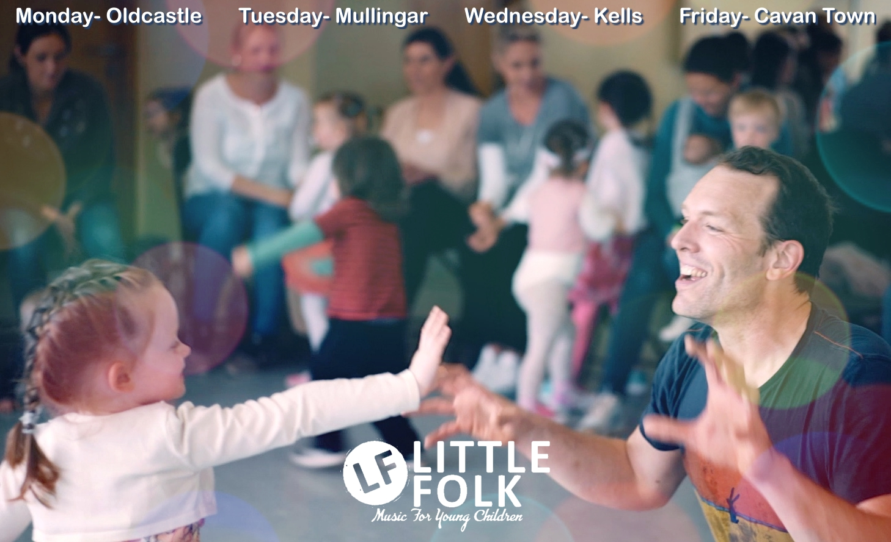
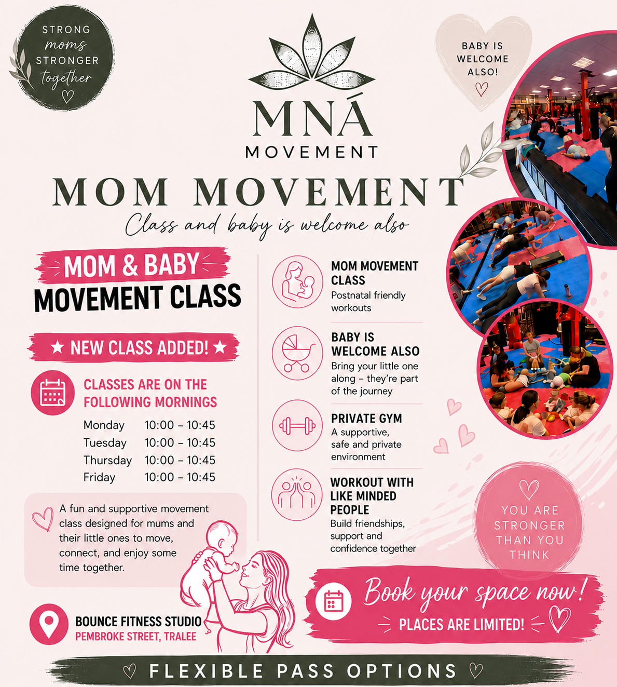
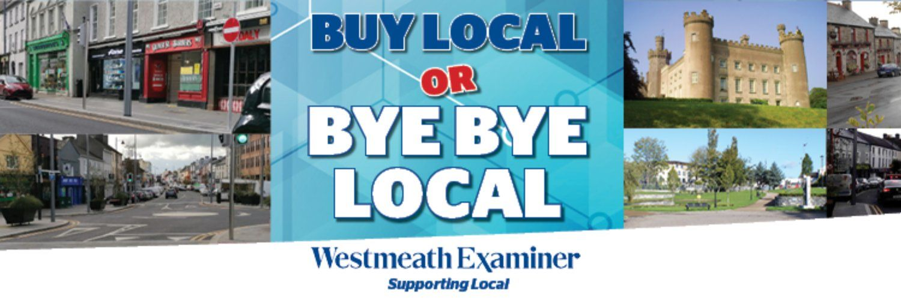
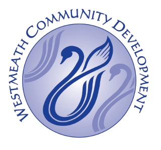

Parent-and-toddler Classes in Ireland
Explore 605 Parent-and-toddler classes and activities for kids across Ireland. Parent-and-toddler classes are most widely available in Dublin, Cork, Galway.
Browse Parent-and-toddler by county
Play Cafe / Bumps and Babes
Community parent and toddler group offering informal weekly playtime and social contact for local parents, carers and young children in Kilternan.
View full details →Talls and Smalls
Community parent and toddler group offering informal weekly playtime and social contact for local parents, carers and young children, held at Urban Junction in Blackrock.
View full details →Baby Talk
Community parent and toddler group offering informal weekly playtime and social contact for local parents, carers and young children in Sandyford.
View full details →Honey Bee Hive
Community parent and toddler group offering informal weekly playtime and social contact for local parents, carers and young children in Stillorgan.
View full details →Wobblers and Toddlers
Community parent and toddler group offering informal weekly playtime and social contact for local parents, carers and young children, held at Balally Family Resource Centre, Sandyford.
View full details →Blackrock Library Parent and Toddler Group
Free community parent and toddler group hosted at Blackrock Library, offering weekly informal playtime and social contact for local parents, carers and young children.
View full details →Shankill Library Parent and Toddler Group
Free community parent and toddler group hosted at Shankill Library, offering weekly informal playtime and social contact for local parents, carers and young children.
View full details →Dalkey Library Parent and Toddler Group
Free community parent and toddler group hosted at Dalkey Library, offering weekly informal playtime and social contact for local parents, carers and young children.
View full details →Dalkey Library Parent and Toddler Group
Free community parent and toddler group hosted at Dalkey Library, offering weekly informal playtime and social contact for local parents, carers and young children.
View full details →Dundrum Library Parent and Toddler Group
Free community parent and toddler group hosted at Dundrum Library, offering weekly informal playtime and social contact for local parents, carers and young children.
View full details →Deansgrange Library Parent and Toddler Group
Free community parent and toddler group hosted at Deansgrange Library, offering weekly informal playtime and social contact for local parents, carers and young children.
View full details →Ballyogan Community Development Group Parent and Toddler Group
Free community parent and toddler group run by Ballyogan Community Development Group, offering weekly informal playtime and social contact for local parents, carers and young children.
View full details →

Baby & Me Ballet Dublin
A gentle introduction to ballet for little ones aged 14-30 months and 2.5-3.5 years, and their grown-ups, through dancing, singing and playing together.
View full details →
Little Folk- Music for Babies, Toddlers, & Young Children
Little folk is an early years music class perfectly suited for children aged 4 months - 5 years (or 6 or older) and their parents. Regular class schedule- Monday- Oldcastle Masonic Hall 10am Tuesday- Mullingar Arts Centre 10&11am Wednesday- Kells Family Resource Centre 10&11am Friday- The Backyard, Cavan Town 10&11am Featuring 45 minutes of live music, playing percussive instruments and movement with scarves, a good time is to be had by all. Classes explore rhythm, tempo and movement featuring Kyle’s award winning original children’s music and traditional children's music. Following the Kodaly philosophy of music training, the voice is the first instrument. The sessions are highly interactive and all music is performed live. Kyle has been writing and performing children's music since 2012.
View full details →

Mna Movement mom & baby Fitness Class
Mna Movement is a class designed for postpartum moms to get weekly movement in a private gym without the stress of childcare. Baby is welcome along - work out with like-minded people, make connections and new friendships, and take some time for yourself. Based in Tralee, Co. Kerry. Find us on Instagram: mna_movement
View full details →
Artane & Coolock Resource Centre- Toddler Group and More
Artane Coolock Family Resource Centre offers great groups and classes for families. Check out some of the groups below. Location: Artane Coolock Family Resource Centre, 55 Gracefield Road, Artane, Dublin. Contact: comdevworker@artanefrc.com. Parent & Toddler Group: parents, childminders, grandparents and guardians are welcome to attend a fun morning for the kiddies - babies up to 5 years will have fun with plenty of toys and making new friends. Time: every Wednesday, 9.30-11am, throughout the year. Cost: €3 per family. After School Activities: arts/crafts and Lego afterschool facilities are on offer - reach out to find out more. Cost: varies.
View full details →

Aster Balbriggan
Aster offers a number of classes to support children and families. Classes run during the school term, but the resource centre is open all year. Parent Baby/Toddler Group (0-3 years): drop in any day to meet new people and let your little one play - lots of toys for the little ones and tea/coffee for the adults. Location: 1 St George's Square, Balbriggan, Co. Dublin. Time: every Tuesday, 10.00-12.00 (during term time). Cost: €2 per family. Pre-Teen Hangout (8-10 years). Location: 1 St George's Square, Balbriggan, Co. Dublin. Time: every Wednesday, 4.00-5.30. Cost: €5 yearly fee - you must register for the pre-teen hangout. Baby Massage Classes: the centre offers 6-week baby massage classes multiple times a year. Keep an eye on their social media to avail of these heavily discounted classes, usually a €5 registration fee.
View full details →Balbriggan - Lego-Based Therapy Groups
Unlock the power of play with LEGO-Based Therapy Groups. Is your child on the autism spectrum, or navigating challenges like ADHD, anxiety, or communication difficulties? Imagine a space where they can thrive, building essential social and communication skills through the magic of LEGO. Our LEGO-Based Therapy Groups, designed specifically for neurodiverse children, provide a supportive, fun-filled environment where your child can learn teamwork and turn-taking, enhance listening and communication skills, develop confidence while making friends, and practise real-world problem-solving. Facilitated by highly qualified specialists, a Psychologist/Play Therapist and a CBT Psychotherapist, these sessions are tailored to help children aged 6-12 years build confidence, improve social skills, and have fun while doing so. Programme details: Location: Balbriggan Clubs Community Centre, Co. Dublin. Start date: Monday, 20th January 2025. Flexible trial: try 2 sessions before committing to the full programme. Small group sizes: only 8-10 children per group. Parents value having dedicated time for themselves while their child learns and grows, a safe, welcoming space led by compassionate professionals, and early-bird discounts with flexible payment options. Spaces are limited and demand is high - reserve your spot with a €130 deposit (including trial sessions), or save more with the early-bird full-term discount. Call 089 433 7899 or email brickbuddieslego@gmail.com. Early registration ends 20th December 2024.
View full details →Balbriggan baby and toddler group
For babies and toddlers aged 0-5, all caregivers welcome. 10.30-11.30am every Friday in Hamilton Hall, Balbriggan Library building. Run by Cuidiú volunteers. Operates during school holidays.
View full details →
Baldoyle Toddler Group and Breastfeeding Group
Baldoyle Family Resource Centre offers great groups for parents. Baldoyle Parent, Toddler and Baby Group hosts friendly sessions for parents, grandparents or carers to socialise over a cuppa and biscuits while the babies and toddlers play with a great variety of toys in our cosy, welcoming room. The group welcomes families from the wider area who might not have any connections to the community. Location: Baldoyle Family Resource Centre, Grange Road, D13 TE80. Time: every Monday, 11.30am-12.45pm (during term time). Cost: €3 per family. Contact: reception@bfrs.ie. Keep an eye on social media for when the group starts back up after school holidays, as it does not always align with term time. Baldoyle Breastfeeding Group: all are welcome, whether pregnant, nursing a newborn or an older child, pumping, or combination feeding - come for support or just for the tea and chats. Location: Baldoyle Family Resource Centre, Grange Road, D13 TE80. Time: every Monday, 9.45-11.15am. Cost: free for Cuidiú members or €3 for non-members.
View full details →

Ballsbridge Baby & Toddler Group - Pembroke Library
Pembroke Library toddler group offers stories, sing-songs and places toys in a circle on the floor to encourage children to socialise under the supervision of their parent or guardian. Location: Pembroke Library, Anglesea Road, Dublin 4. Time: every Thursday morning, 10.30-11.30am. Cost: free. Contact: 01 222 8450 / pembrokelibrary@dublincity.ie
View full details →

Ballyfermot Library - Toddler Group / Book Clubs and More
Ballyfermot Library offers lots of activities and groups for families. Location: Ballyfermot Library, Ballyfermot Road, Dublin 10. Cost: free. Contact: 01 222 8422 / ballyfermotlibrary@dublincity.ie. Parent and Toddler Group: find the group in the Junior Library. Come along to a relaxed toddler morning every Monday in Ballyfermot Library to meet up with other families in the area - we provide the space and toys, and all parents and caregivers with babies and toddlers are welcome, no need to book. Time: Monday morning, 10.30-11.30am. Children's Story Time: the library staff will be reading some lovely stories for the kids, so come along to relax and listen. Time: every Wednesday at 2.30pm. Junior Book Club: aimed at children aged 9 to 12, and all are welcome - please contact the library if you are interested in joining. Time: last Monday of the month at 4pm. Lego Playtime: a great way for kids to meet new friends while building Lego. Time: every Saturday at 10.30am. Arts and Crafts Time: perfect for kids 6 years and over, a chance to use craft materials to let their imagination go wild. Time: first Tuesday of the month at 3pm.
View full details →

Ballymun Library
Ballymun Library offers fantastic groups for babies and kids. Baby Book Club: every Monday at 10am, for newborns to 2-year-olds. Toddler Book Club: every Thursday from 10-10.45am, suitable for children aged 2 years to preschool age. Both clubs include stories, activities and toys (note: they take a break during July and August). Ballymun Games Club takes place on Mondays from 5-6.20pm and is open to library members aged 10-16.
View full details →

Ballymun Parent and Toddler Music Group - IKEA
Ballymun Parent, Baby and Toddler Music Group is brought to you by IKEA. They hold two separate sessions based on your child's age, as a fun way to interact and inspire your child through play. Places are limited and free to IKEA Family members (you can sign up to the IKEA Family account for free). These spaces book up fast, so make sure you grab them if you want to attend. Location: IKEA, St Margaret's Road, Ballymun, Dublin 11, D11 FW18 (the back of IKEA Restaurant). Time: first Tuesday of every month - Toddler Music Class (walkers to 5 years), 10-11am; Baby Music Class (newborn to walker), 11am-12pm. Cost: free.
View full details →

Ballyogan Parent, Baby & Toddler Group
Ballyogan Parent, Baby and Toddler Group is hosted by Ballyogan Family Resource Centre. This is a drop-in baby and toddler group, open to mums, dads, grandparents and all caregivers to pop along and meet some new people. Lots of books and toys for the kiddies to enjoy too. Location: St Brigid's Parish Centre, Stillorgan. Time: every Thursday, 10.30am-12pm (during school term time). Cost: €3 per family (suggested donation). Contact: (01) 2953219.
View full details →
Bayside Parent and Toddler Group - Cuidiu
Bayside Parent and Toddler Group is conveniently located in Bayside Community, perfect for all parents, childminders or caregivers. It's a great way for your little one to have some free play fun and practise action songs, while you enjoy a tea/coffee and some biscuits. Location: Bayside Community Centre. Day/Time: every Thursday during school terms, 9.30-11.30am. Cost: €3 for Cuidiú members / €5 for non-members. Cuidiú is a charity and runs off donations - you can become a Cuidiú member for €25 per year (plus PayPal fees), or a half-year membership for €13. Membership includes a discount on the weekly parent and toddler groups and other Cuidiú activities and events, discounts in a wide range of shops/businesses, and, after 6 months, the option to apply for training sessions including Antenatal Teaching, Breastfeeding Counsellor, or Parent Supporter Training - a good option if you want to train up in something new and have a side job or switch careers.
View full details →

Blackrock Library Parent, Baby & Toddler Group
Blackrock Library Parent, Baby and Toddler Group in Dublin. Join us for a morning of parent and toddler fun, suitable for 0-3 years with parents/minders. Booking essential - contact Blackrock Library for more information. Location: Blackrock Library. Time: every Friday at 10.30am. Cost: free per family. Contact: libraries@dlrcoco.ie
View full details →
Blackrock Parent, Baby & Toddler Group
Blackrock Parent, Baby and Toddler Group is also known as the Talls and Smalls playgroup. Talls & Smalls started in the summer of 2021 and is a space for parents/guardians and their babies or toddlers, aged 0-3 years, to play and chat together. Tea/coffee is provided too. Location: (downstairs) Urban Junction, 42 Main St, Blackrock, Co. Dublin, A94 Y3X7. Time: every Wednesday afternoon, 3-4.30pm, throughout the year. Cost: €2 per child (suggested donation). Contact: Belinda at belinda.briggs@urban-junction.com or 085 7739723.
View full details →

Blanchardstown Library
Blanchardstown Library offers fantastic groups for babies and kids. Baby Book Club (0-4 years): 3rd Tuesday of every month, 11.30am. Parent & Toddler Group (0-5 years): every Thursday, 11am-12.30pm. Breastfeeding Support Group: every Wednesday, 11am-1pm. Check out their social media, as you might even get Toddler Time with Sarah Sparkles.
View full details →

Blanchardstown Parent and Toddler Group
Blanchardstown Parent and Toddler Group is brought to you by Blanchardstown Centre, offering free Sillybilly Music & Story classes for babies and toddlers. The classes introduce a love of music, songs & rhythm, instruments, stories and imagination to your child, building their confidence for life. If you haven't been before, come along with your little one for some great fun, music, dancing and singing - you'll love it. Location: outside the Odeon, Blanchardstown Centre, Blanchardstown Rd S, Blanchardstown, Dublin. Time: 10am and 11am every Wednesday (during term time). Cost: free.
View full details →Bí ag Imirt
This is a shared class for parents/guardians and children. A variety of activities are set up and the children are free to choose and engage - there is some messy play. All the fun, without the clean-up. Upcoming classes in Balbriggan (Meals on Wheels Hall), Hampton Street, K32 P793, March 15th at 2.30pm. Find us on Instagram or Facebook to check for upcoming classes.
View full details →

Cabra Library - Toddler Group / Book Clubs and More
Cabra Library offers lots of activities and groups for families. Location: Cabra Library, Navan Road, Dublin 7. Cost: free. Contact: 01 222 8310 / cabralibrary@dublincity.ie. Parent and Toddler Group: an opportunity for little ones to socialise and play, and for their carers to meet with others from the local area - all are welcome to drop in. Time: Mondays and Thursdays, 10.30am-12pm. Children's Story Time: the library staff will be reading some lovely stories for the kids, so come along to relax and listen - perfect for ages 3-8, all welcome. Time: every Wednesday at 3.15pm. Lego Playtime: a great way for kids to meet new friends while building Lego, suitable for children aged 5-10 (children under 9 must be accompanied by an adult at all times, and parents/guardians must ensure all children are signed in on the attendance sheet before the event commences). Time: Tuesdays, 3-4pm.
View full details →Castleknock Parent, Baby & Toddler Group
Castleknock Parent, Baby and Toddler Group in Dublin. It's a great way for toddlers to interact with each other and for parents/guardians to grab a coffee and meet new people. Registration essential (register at reception). Location: Castleknock Community Centre, Laurel Lodge Road, Dublin 15. Time: every Monday & Friday, 9am-12pm (during school term). Cost: €2 per session. Contact: castleknockcommunitycentre@gmail.com
View full details →

Central Library Dublin 1
Central Library offers a variety of classes for babies and kids. Location: Central Library, Ilac Centre, Dublin 1. Cost: free. Contact: 01 222 8300 / centrallibrary@dublincity.ie. Toddler Group: listen to stories, music and have some fun, and you're welcome to stay in the library afterwards to mingle and get to know other parents. Suitable for ages 0-4 years. Time: Monday and Tuesday mornings at 11am (not operating in July and August). Lego Club: suitable for 6-12 year olds, no need to book, just drop by. Time: last Saturday of every month, 10.30-11.45am.
View full details →

Clondalkin Library Baby and Toddler Group
Clondalkin Library Baby and Toddler Group meets every Tuesday from 10-11.30am. It is self-led: Clondalkin Library provides the space and toys, you provide the playtime. There is no cost to attend. Keep an eye on the library's social media for fun family activities like story time, baby reflexology and more.
View full details →

Clondalkin Parent & Toddler Group
Clondalkin Quarryvale Parent and Toddler Group in Dublin is hosted by Quarryvale Family Resource Centre. The group is known as the 'Little Rascals'. No need to register in advance, just pop on down and meet other parents/grandparents and carers with their babies and kids. Plenty of fun and games for the children, and all the materials are provided - snacks included. Location: Quarryvale Community & Youth Centre, Greenfort Gardens, Dublin. Time: every Wednesday, 10am-11.30am (during term time). Cost: €3 per family. Contact: +353 1 626 9151.
View full details →
Clondalkin Parent and Toddler Group
Clondalkin/Knockmitten Parent, Baby and Toddler Group, Dublin. Also known as the 2S Group, this is for preschool-aged kids to have free time to play, enjoy messy/sensory play and do some arts and crafts, while parents can mingle and chat to feel less alone in parenting. Location: Knockmitten Community Centre, Monksfield Lawns, Clondalkin, Dublin. Day/Time: every Monday, 10am-11.30pm (during school term time). Cost: €2.50 per family.
View full details →Clondalkin Parent, Baby and Toddler Group
Clondalkin Parent, Baby and Toddler Group, Dublin. The Bawnogue Parent, Baby and Toddler Group is growing from strength to strength each week - all welcome, come join us on Friday to meet new people, have a chat and let the kids play. Location: Bawnogue Community Centre, Bawnogue Rd, Clondalkin, Dublin 22. Day/Time: every Friday, 9.30am-11pm (during school term time). Cost: €3 per family.
View full details →Clonsilla Parent, Baby and Toddler Group
Clonsilla Parent and Toddler Group: friendly sessions for parents, grandparents & carers to socialise and meet new people in the community while your babies & toddlers play and make new friends too. New and past families are all welcome to join the group at any time. Location: Phibblestown Community Centre, Phibblestown Road, Dublin. Time: every Thursday, 9.30-11am (during term time). Cost: €4 per family. Contact: berniesmith@gmail.com. Keep an eye on social media for when the group starts back up after school holidays, as it may not always align with term time.
View full details →
Clonsilla/Lucan Parent and Toddler Group
Clonsilla Parent, Baby and Toddler Group is hosted in St Mochta's Parish Centre (Luttrelstown), welcoming all parents, grandparents and childminders with babies and children under 3 years to pop along to their playgroup for a bit of fun. Activities include jigsaws, books and arts & crafts tables, toys for floor play, and music & dance, with a selection of tea, coffee, juice, water and biscuits available. There is an active Facebook group for this group. Location: St Mochta's Church, Porterstown Road, D15 V044. Time: every Tuesday, 10am-12pm (during term time). Cost: €5 per family. Contact: maryoriordan@hotmail.com
View full details →

Coolock Library - Toddler Group/Games Night
Coolock Library offers a variety of classes for babies and kids. Toddler Group: join us for playtime and story time, new members always welcome. Time: every Monday and Thursday, 10.30-11.30am. Games Night at Coolock Library: ages 10-14, booking essential. Time: every Wednesday, 6-7.30pm. Family Movie: check dates, usually one Saturday within the month. Quiet Time: Coolock Library is introducing quiet time on Monday nights from 6-8pm in the children's library, creating a calm and quiet environment. Sensory toys will be available, as will ear defenders if needed, and the sensory cubbie will be available to use. Lighting will be dimmed, phones will be turned off, people will be encouraged to keep their voices down and take mobile calls outside, and customers with extra sensory needs will be prioritised.
View full details →Cuidiú DNW - Baby Language Club @ D15
Join Clara for the Baby Language Club, sharing songs and rhymes as Gaeilge for babies and toddlers. Fridays at 11am. New location: Ongar Community Centre, D15. 6-week course: €40 for Cuidiú members, €50 for non-members, €10 for additional siblings, or €10 drop-in if spaces are available. Perfect for babies and toddlers up to preschoolers (and the parents might find themselves learning new songs too!). Cuidiú is a nationwide parent support charity, and the Dublin North West branch operates in Dublin 7/9/11/15.
View full details →Cúl Cubs
Cúl Cubs | Ages 2–4 | Trinity Comprehensive, Ballymun. GAA games, skills & beginner Gaeilge through fun & play!
View full details →

Donabate/Portrane Parent, Baby and Toddler Group
Donabate/Portrane Parent and Toddler Group is open to parents/childminders and babies through to pre-school children. There is an area for babies with playmats, bouncers and toys, and an area for toddlers with a slide, trampoline, balance beam, ball pit and lots of ride-on toys. There is also a sing-song and fruit break provided for the children - why not pop along and meet some new people. Location: Donabate Portrane Community Centre (upstairs), Leisure Centre, 3 Portrane Rd, Donabate, Co. Dublin, Fingal. Time: every Monday, 10.15am-12pm (during term time). Cost: €3 per parent. Contact: 086-3788075. Keep an eye on social media for when the group starts back up after school holidays, as it may not always align with term time.
View full details →Dublin 1 North Strand - Toddler Group - Charleville Mall Library
Charleville Mall Library hosts Parent and Toddler Groups. Location: Charleville Mall Library, North Strand, Dublin 1. Contact: 01 222 8411 / charlevillemalllibrary@dublincity.ie. HSE North East Inner City Parent and Toddler Group. Time: every Tuesday, 10.15am-12pm. Cost: free. Early Learning Initiative Parent and Toddler Group. Time: every Friday, 10.30-11.30am. Cost: free.
View full details →
Dublin 2 Parent, Baby and Toddler Group
Dublin 2 Parent, Baby and Toddler Group is a non-profit parent and toddler playgroup also known as Caterpillar Kidz Playgroup, open to children aged 0-3. Our mission is to create a welcoming, safe environment for parents, grandparents and carers to come and play with their children. Caterpillar Kidz aims to encourage children to socially interact with other children and grow and develop through mutual play, while adults can relax and have a cup of tea and chat. Location: 18a Adelaide Road (Presbyterian church), Dublin 2. Time: every Tuesday, 10-11.30am (during term time). Cost: free. Contact: 0851200671. Keep an eye on social media for when the group starts back up after school holidays, as it may not align with term time.
View full details →Fingal Additional Needs
Fingal Additional Needs is a fun and inclusive experience for children with additional needs. Spaces are limited, so book your spot today. Location: The Band Room, Skerries. My name is David, and I started Fingal Additional Needs after leaving my previous job. Many parents asked me to continue supporting their loved ones with 1-1 outings, and as a parent of a child with ASD and ADHD, I know how valuable a break can be. For over 10 years, I've worked with children and adults with additional needs. After a successful year offering 1-1 support and two years running Football4All with Skerries Town, I introduced summer camps that were a huge success, leading to extra classes, and I've recently set up an afterschool class. My goal is to give parents and carers a well-deserved break while providing a fun and engaging environment for children. I'm not a therapist, but I focus on creating meaningful and enjoyable experiences for the kids - whether it's getting active, socialising, or just being happy in their own space, these sessions are designed with your child's needs in mind, whether they have ADHD, autism, Down syndrome, or other additional needs. You can check out some of the work I've done on Instagram and Facebook @fingaladditionalneeds.
View full details →Finglas Baby & Toddler Groups /Breastfeeding /Baby Massage
St Helena's Family Resource Centre has plenty to offer families in Finglas, from breastfeeding groups and baby massage to baby groups, toddler groups and much more. Many of the groups are free or low cost. Some groups are in demand, so it's best to reach out to the centre to register. Keep an eye on Better Finglas socials to stay up to date with classes, especially around school holidays, as times may change or a class may not operate. Contact: 01 880 0500. Baby Group. Time: every Friday at 10am. Location: St Helena's Family Resource Centre, St Helena's Road, Finglas, Dublin 11. Toddler Group. Time: every Friday at 10am. Location: St Helena's Family Resource Centre, St Helena's Road, Finglas, Dublin 11. Baby and Toddler Book Club: waitlist in place. Location: St Helena's Family Resource Centre, St Helena's Road, Finglas, Dublin 11. Baby Massage: waitlist in place. Location: St Helena's Family Resource Centre, St Helena's Road, Finglas, Dublin 11. Breastfeeding Group: every Monday, 11am-12.30pm. Location: Wellmount Health Centre.
View full details →
Finglas Family Resource Centre- Toddler Group and More
Finglas West Family Resource Centre is creating a welcoming and inclusive space where people have a sense of belonging, with a great selection of classes and groups for families. Reach out by phone or email for more information on attending the groups/times. Location: Finglas West Family Resource Centre, Barnardos, off Barry Avenue, Finglas West, Dublin 11, D11 HNF4. Contact: finglaswestfrc@barnardos.ie. Peeps Parent & Toddler Group: parents and toddlers learn and have fun through creative and sensory play activities, stories and songs. Peeps aims to help children become confident learners through play, focusing on five strands of child development: personal, social and emotional development; communication and language; early literacy; early maths; and health and physical development. Registration required. Fathers Toddler Group: each themed session provides stories, songs and an activity to promote social skills, sensory play and the bond between children and caregiver. Baby Massage: a lovely space for parents/guardians and babies to meet others, share experiences and learn new techniques to relax and soothe your baby - register your interest to attend and we will be in touch. The Sensory Playgroup: a safe space for parents/carers and their babies, aiming to reduce social isolation, provide sensory play for babies, offer a space for parents/carers to be with their babies, and give parents the opportunity to receive peer support and advice. Each session offers opportunities for babies to explore their environment through various forms of play, including sensory, music, stories, art/craft and toys.
View full details →Fox-C Play Cafe - D1/D3
Dublin 1/Dublin 3 parent and toddler group is hosted by Fox-C's Play Café twice a week, an indoor play centre where mums, dads, grandparents and childminders can pop along with babies and children up to 5 years and enjoy a tea/coffee while the kids play. The group operates on a walk-in basis, so no need to book in advance, and you can stay as long as you want. This group operates during school holidays. Location: Barbara Ward Clonliffe and Croke Park Community Centre, 9A Richmond Industrial Estate, D3. Time: every Thursday and Friday, 9.30am-1.30pm. Cost: €4 for babies, €6 for 1-5 years, adults go free. Contact: foxcplaycafe@gmail.com
View full details →Glenasmole Parent & Toddler Group
Glenasmole Parent, Baby and Toddler Group is a short drive from Firhouse/Tallaght. The group offers a light lunch for the kids, plenty of toys to play with, and a great way to meet other families. Location: Glenasmole Community Centre, Glenasmole Valley, Dublin. Time: every Tuesday & Wednesday, 10am-12.30pm, throughout the year. Cost: €5 per child. Contact: glenasmolecc@gmail.com
View full details →

Harold's Cross - Toddler Group / Lego Club - Dolphin's Barn Library
Dolphin's Barn Library offers lots of activities and groups for families. Location: Dolphin's Barn Library, Parnell Road, Dublin 12. Cost: free. Contact: 01 222 8455 / dolphinsbarnlibrary@dublincity.ie. Parent and Toddler Group: meet other parents and carers with their toddlers - there's a selection of suitable toys and hand-picked books available, and all toddlers and their grown-ups are welcome, no booking needed. Time: every Tuesday, 10.30-11.30am. Lego Playtime: a great way for kids to meet new friends while building Lego, suitable for children aged 6-12, building all sorts of interesting projects (children under 9 must be accompanied by an adult at all times during the event). Time: Saturdays, 11am-1pm.
View full details →Huntstown Parent and Toddler Group
Huntstown Parent and Toddler Group is also known as Kidz N Us playgroup, open to babies through to preschoolers. There is story time, playtime and dancing, so your little one will have a great time - pop along and meet new people with kids the same age (no need to book). Location: Huntstown Community Centre, Huntstown Way, D15. Time: every Tuesday, 9.30-11am (during term time). Cost: €3 per family. Contact: 086-8846259. Keep an eye on social media for when the group starts back up after school holidays, as it may not always align with term time.
View full details →

Inchicore Toddler Storytime - Inchicore Library D8
Inchicore Library offers a toddler group which is always open to new members, with plenty of toys and books to choose from so your little one will have a great time. Location: Inchicore Library, Richmond Barracks, St Michael's Estate, Dublin 8. Time: every Wednesday morning, 10-11am. Cost: free. Contact: 01 222 8444 / inchicorelibrary@dublincity.ie
View full details →

Irishtown Parent and Toddler Group -Quarryvale Family Resource Centre
Quarryvale Family Resource Centre hosts many great groups and events for young families, including Clondalkin Parent, Baby and Toddler activities. Little Rascals Baby and Toddler Group: come join us where parents can chat and socialise, and children have a chance to play, develop new skills, and learn to interact with others - no need to register in advance. Time: every Wednesday, 10-11.30am, during school term time. Cost: €3/family, all materials and snacks included. Mother and Baby Yoga: bond with your baby while exercising safely, helping to strengthen your mind and body after giving birth. Infant Massage: promotes bonding and positive attachment, supporting the physical and mental wellbeing of both baby and parent. Keep an eye on their socials to sign up for these highly recommended classes. Location: Quarryvale Family Resource Centre, Shancastle Avenue, Clondalkin, Dublin 22 / Greenfort Gardens, Clondalkin, Dublin 22, D22 V6T0.
View full details →

Kilternan Parent & Toddler Group
Kilternan Parent, Baby and Toddler Group is also known as the Bumps and Babes Play Café. It is a very popular group for mums, dads, grandparents and caregivers - you must book in advance as the group is usually full. Lots of families from the parish and community join each week, so make sure to join our waiting list. During good weather the group heads outside too. Location: Main Hall, Kilternan Centre, Enniskerry Road, Kilternan, D18 ET99. Time: every Wednesday, 10-11.30am, throughout the year. Cost: free. Contact: Belinda at 01 295 2643 / office@kilternanparish.ie
View full details →Little Turtles
We are Leah & Molly, owners of Little Turtles Playgroup, based in Funky Monkeys, Spraoi and Jungle Den Playcentres. All classes are pay-as-you-go with no need to pre-book, and prices vary between centres. We run seasonal events around Halloween, Christmas and Easter, with a fun morning of activities and games based on the season we're celebrating, and we also run outdoor summer classes, which we're excited to launch again. Follow us on Instagram 'littleturtles___' for more details. Little Turtles is a vibrant and engaging class designed for our youngest learners, aimed at children aged 0-6 years. Our meticulously planned activities are tailored to meet the developmental needs of the children, ensuring they are constantly learning while they play and have fun. Our priority is to create an environment where play is not just an activity, but an integral part of learning and growth, fostering a caring, thoughtful, and friendly atmosphere where children can laugh, have fun, and thrive while learning.
View full details →

Lullababy West Dublin
The Green Isle Hotel in Clondalkin, on Fridays, with times varying throughout the day. Caregivers stay and participate in the activities, which include baby massage, yoga, sensory play, movement and music, and first aid.
View full details →Lusk Parent and Toddler Group
Lusk Parent and Toddler Group is open to mums, dads, caregivers and grandparents - come and connect with other local families. The group is for babies up to 3 years of age. Come have a chat and a cuppa (bring a reusable cup with a lid) in a cosy venue while the kids play. Location: The Cottage Community Centre, 1 Church Rd, Lusk, Co. Dublin, K45 VE83 (beside the tree on Lusk Square, across from Murray's). Time: every Monday, 9.45-11.45am (during term time). Cost: €3 for 1 child, €5 for 2 children, €7 for 3 children. Contact: lptglusk@gmail.com. Keep an eye on social media for when the group starts back up after school holidays, as it may not always align with term time.
View full details →

Moo Music Dun Laoghaire
Moo Music is a great fun and interactive music and movement session for 0 to 5 year old children and their parents, grandparents or carers too, where the children sing, dance and play. Music is an essential part of every child’s development and the 150 original Moo Music songs used at the sessions are positive, uplifting, fun and educational. The interactive sessions will help your child gain confidence and develop memory, language and coordination skills in an exciting, enjoyable and multi-sensory way. It’s a great way to make new friends – both for the children and the adults too! Check our website to stay up to date with our schedule
View full details →

Mulhuddart Parent, Baby and Toddler Group
Mulhuddart Parent, Baby and Toddler Group is hosted by Empower. The group operates as a fun place for parents and carers to meet with their little ones. The group may alter its activities from open play group to fun fitness class to buggy brigades - keep an eye on their social media to find out what's on offer. Location: Mulhuddart Community Centre, Church Road, Mulhuddart, Dublin 15, D15 R2VF. Time: every Thursday, times vary depending on the type of group operating but usually between 9.30am-12.15pm. Cost: €2 per family (depending on activity). Contact: mgomez@empower.ie. Keep an eye on social media for when the group starts back up after school holidays, as it may not always align with term time.
View full details →

Parent and Toddler Group - Fingal Sports Hub
Balbriggan, Swords, Baldoyle, Lusk and Meakstown Parent and Toddler Movement Classes are brought to you by Fingal Sports Office. The group is suitable for babies who are walking, up to 3-4 years old. Movement classes promote development through exercise, yoga and fun games. Registration is required (check their socials) - classes operate on a drop-in basis, but you must register ahead of time. Keep an eye on social media for when the group starts back up after school holidays, as it does not always align with term time. Cost: free. Contact: sports@fingal.ie. Balbriggan: Balbriggan Combined Club, every Thursday at 9.30am (during term time). Baldoyle/Howth: Baldoyle Community Centre, every Thursday at 10am (during term time). Swords: Applewood Community Centre, every Tuesday at 10.30am (during term time), and Holywell Community Centre, every Tuesday at 9.15am (during term time). Lusk: St Macullin's Centre, Lusk Parish Hall, every Friday at 9.15am (during term time). Meakstown: Meakstown Community Centre, every Tuesday at 10am (during term time).
View full details →

Parent and Toddler Lego Class
Sand, song and Lego Duplo, with interactive circle time included. Suitable for parents, grandparents, minders etc - relax and enjoy with your baby/toddler while they interact with other toddlers. From 6 months to 3 years. Malahide (Tuesdays, 10.30am).
View full details →

Pearse St Toddler Group & Junior Book Club
Pearse Street Library offers lots of activities and groups for families. Location: Pearse Street Library, 139-144 Pearse Street, Dublin 2. Cost: free. Contact: 01 222 8430 / pearsestreetlibrary@dublincity.ie. Parent and Toddler Group: story time, songs and rhymes facilitated by the Early Learning Initiative, followed by playtime. Please register ahead of time - each ticket covers 1 adult and 1 child, and if you book and cannot attend, please cancel your ticket to release it to the waiting list. Time: every Tuesday and Friday morning from 10.30am. Junior Book Club: a world of imagination, adventure, and feel-good reads, suitable for children aged 8-12 years - email to book a place and find out the book of the month. Time: monthly, usually on Wednesdays, 5-5.45pm (check with the library as dates/times change).
View full details →

Phibsboro Toddler Storytime Group - Phibsboro Library
Phibsboro Library offers toddler story time, a great way to encourage early reading and early learning. They sometimes have special guests, like Sarah Sparkles, doing fun songs too, and the library also puts out toys for the kids to play with after the stories. Location: Phibsboro Library, Blacquiere Bridge, Dublin 7. Time: second Tuesday of the month at 11.30am. Cost: free. Contact: 01 222 8333 / phibsborolibrary@dublincity.ie
View full details →Pop-up play café at The Lock Keeper
Join our popup playcafé every second Tuesday from 12pm to 3pm at The Lock Keeper in Ashtown, Dublin 15. Babies play on our clean, safe play area with premium toys while you connect with other parents or simply relax and enjoy a hot coffee or lunch. No fee to play and no need to book. Just show up and enjoy!
View full details →

Portobello Baby & Toddler Group - Kevin Street Library D8
Kevin Street Library offers 2 toddler groups, always open to new members, with plenty of toys and books to choose from so your little one will have a great time. Location: Kevin Street Library, 18 Lower Kevin Street, Dublin 8. Cost: free. Contact: 01 222 8488 / kevinstreetlibrary@dublincity.ie. Baby and Toddler Group: we share toys, stories, and, from time to time, songs - all babies and toddlers are welcome, no need to book. A library assistant reads stories in the children's library, and it's really laid-back, so feel free to come and go as you please. Time: every Wednesday, 10.30-11.30am. Irish Speaking Parent and Toddler Group (Grúpa Tuistí agus Leanaí): would you like to speak Irish with other parents and their children in a relaxed and warm atmosphere? All levels of Irish are welcome. Time: first Friday of the month at 10.30am.
View full details →

Raheny Library - Toddler Group and Junior Book Clubs
Raheny Library offers activities for families free of charge - also grab yourself a library card and borrow some books when you visit. Location: Raheny Library, Howth Road, Dublin 5. Cost: free. Contact: rahenylibrary@dublincity.ie. Parent and Toddler Group: the perfect way to meet new parents/carers of babies and toddlers, no booking required, just pop along. Day/Time: every Tuesday morning (excluding Tuesdays after bank holidays), 10.30-11.30am. 'The Brainy Bees Book Club' / Junior Book Club: the perfect retreat for book-loving kids, suitable for ages 10-12 years - books are available to borrow from the library, places are limited, and you should check with the library in advance of booking your child's place. Day/Time: last Tuesday of every month, 3.15-4pm (confirm with the library, as the day may change).
View full details →Raheny Parent, Baby and Toddler Group
Raheny Parent, Baby and Toddler Group is run by volunteers, welcoming parents, grandparents and carers to come along with their babies and toddlers. The group has lots of toys and a bit of a sing-song, with tea and coffee for the adults. Note: the space in the hall is limited, so the group operates on a first-come, first-served basis - get there early. Location: Cara Hall Community Centre, Raheny, D05 WY64. Time: every Monday, 9.30-11am (during term time). Cost: €4 per family. Contact: via their Facebook page. Keep an eye on social media for when the group starts back up after school holidays, as it may not align with term time.
View full details →Rathcoole and Templeogue - Toddlers World
Toddlers World brings a fun, interactive class for babies, toddlers and preschool kids, with music, songs and movement using egg shakers, maracas, handclappers, puppets, balloons, bubbles and more. It's a great way for kids to develop social skills and speech and language, and a lovely stepping stone to Montessori. Suitable from 4 months to 4 years and beyond - some 6, 7 and 8 year olds still come back over the summer months and midterm. It's also a lovely way to connect with other mams and grandparents, for minders to bond with the child, and to create lifelong friendships. Pre-booking is essential, and spaces are limited. For more information, DM the Toddlers World Facebook group or call 0861700806 - also on Instagram if you'd like to see reviews of the classes. Runs every Wednesday in Rathcoole Community Centre, 9.30-10.45am, and every Monday, Thursday and Friday in St Jude's Pastoral Centre, Templeogue, 9.45-11am.
View full details →
Rathfarnham / Ballyroan Parent, Baby & Toddler Group
Ballyroan Parent, Baby and Toddler Group in Rathfarnham, Dublin, is also known as 'Ballyroan Playgroup, Kids & Koffee', for kids from birth to 4 years old. Location: Ballyroan Community Hall, Marian Road, Rathfarnham. Time: every Friday, 10am-12pm. Cost: €5 per family. Contact: via the group's Facebook page. Note: there is no social media to stay up to date with for this group.
View full details →

Rathmines Baby & Toddler Group & Junior Book Club - Rathmines Library
Rathmines Library toddler group offers stories, sing-songs and toys as a fun and safe place to meet up, for babies to preschoolers - no need to book, just drop in. Time: every Thursday at 1pm. Keep an eye on social media for when the group may not be operating. Children's Book Club: a space for children aged 7-12 to gather and discuss books. Nicknamed the 'Greedy Readers', they love to read and love to eat - join the library to discuss books and enjoy some delicious snacks. Please get in touch to put your name down and receive this month's book. Time: last Thursday of every month at 3pm, in the exhibition room. Location: Rathmines Library, 157 Lower Rathmines Road, Dublin 6. Cost: free. Contact: rathmineslibrary@dublincity.ie
View full details →

Ringsend Library - Toddler Group & Lego Group
Ringsend Library Baby & Toddler Group: all babies and toddlers are welcome, no need to book, with toys, books, nursery rhymes and songs to enjoy. Time: every Thursday at 11am. Lego Club: a space for kids who love Lego to meet up - the library leaves out a selection of Lego blocks and pieces for everyone to enjoy. All children under 9 taking part in Lego Club must be accompanied by a responsible parent/adult guardian. Time: second Saturday of every month, 10.30-11.30am. Location: Ringsend Library, Fitzwilliam Street, Dublin 4. Cost: free. Contact: ringsendlibrary@dublincity.ie
View full details →

Rotunda Parent, Baby & Toddler Groups- Hillstreet Resource Centre
Rotunda Parent and Baby and Toddler Groups are offered by Hill Street Family Resource Centre. Location: Hill Street Family Resource Centre, Hill Street Playground, D01 TC90. Cost: €3 voluntary contribution. Contact: childteamleader@hillstreetfrc.ie. Outdoor Group. Time: Wednesday, 9.30-11am. Parent and Child (0-3 years). Time: Thursday, 11.30am-12.45pm. Parent and Baby Groups (0-2 years). Time: Friday, 11.30am-12.45pm. Preparation for Preschool Group. Time: Tuesday & Friday, 9.15-11.15am. Baby Massage: a 6-week programme offering a warm and welcoming space where parents and caregivers can learn the art of gentle massage for their little ones, while strengthening the bond between you and your child. Age 0-12 months. Time: Tuesday, 10.30-11.30am (these classes run in blocks and you need to sign up for them).
View full details →
Rush Parent and Toddler Group
Rush Parent, Baby and Toddler Group offers various events throughout the year, including a Halloween box fort, a First Aid course, the Santa van and bauble-making crafts at Christmas, and giant hearts for Valentine's Day. They provide tea, coffee and biscuits for adults and small snacks for the babies and toddlers, and have a private Facebook group for more information. Location: Room 2, Rush Community Centre, Upper Main Street, Rush, K56 WF22. Time: most Tuesdays, 10am-12pm (during term time). Cost: €4 per family. Contact: 086 8810807. Keep an eye on social media for when the group starts back up after school holidays, as it may not always align with term time.
View full details →

SENSEable Tots Sensory Class in Dublin and Wicklow
SENSEable Tots is a fun sensory class for 6 months to 4 years. Classes are offered in Shankill and Greystones - enjoy a supportive and relaxed environment where children can explore different sensory materials and engage in fun action songs, using their imaginations, laughing and socialising with other children. Time: Mondays at 10am in Shankill, Stonebridge Community Centre. Time: Thursdays at 10am in Greystones, Nazarene Church. Check out our social media for locations and to stay up to date with new terms. Children must be accompanied by a parent/guardian who must stay for the duration of the class. It's recommended that you bring a change of clothes.
View full details →Sandyford Parent, Baby & Toddler Group
Sandyford Parent, Baby and Toddler Group is hosted by the Balally Family Resource Centre, also known as 'Our Wobblers & Toddlers'. Contact Sarah Jane to register, or just come along on Friday - we look forward to seeing everyone. Location: Balally Pastoral Centre. Time: every Friday, 10.30am-12pm. Cost: €3 per child or €5 per family. Contact: 0838721696.
View full details →Sandyford Parent, Baby & Toddler Group (Baby Talk)
Sandyford Parent, Baby and Toddler Group is also known as Baby Talk Playgroup, a welcoming environment for babies through to toddlers and their parents/caregivers. Have a coffee and a chat while the kids play - all welcome, drop in whenever suits between our opening times. Location: St Mary's Parish, Sandyford, D18 E5R3. Time: every Wednesday, 9.30-11.30am (during school term time). Cost: €3 per family (suggested donation). Contact: 01 2956414.
View full details →Santry Parent Toddler Group - Little Darlings Play café
Santry Parent and Toddler Group can be found at Little Darlings Play Café, a relaxed venue for mammies, daddies, grandparents and minders to explore with their babies, toddlers and wobblers - or come for a catch-up with a friend and let the kids play while you watch them and enjoy a coffee. Activities are included that bring the kids together and promote social interaction (between 11-11.30am). This group runs throughout the year, with additional classes at times for school breaks. Check @littledarlingsplaycafe00 to see the weekly activities for each day. Party packages also available. Location: Santry Scout Den, 62-66 Lorcan Green, Beaumont, Dublin 9, D09 EP46. Time: every Monday to Thursday, 9.30am-1pm. Cost: €6 per child, adults go free. Contact: Jodi on 0872673684.
View full details →Skerries Parent and Toddler Group
Skerries Parent and Toddler Group: join us for a fun-filled morning of play, crafts, and social time for both parents and toddlers. It's a great chance to meet other families in the community, let the little ones make friends, and enjoy some quality time together - new faces are always welcome. Location: Skerries Community Centre. Day/Time: every Wednesday during school terms, 10-11.30am. Cost: €5.
View full details →

Smithfield Parent, Baby & Toddler Group
Smithfield Parent, Baby and Toddler Group is hosted by One Family, a stay-and-play group for one-parent families with young children aged 0-33 months. Playful activities for children, and a chance to find a friendly and supportive community. You must register to join this playgroup - please call 016629212. Location: One Family, 8 Coke Lane, Smithfield, Dublin. Time: every Tuesday, 10am-12pm. Cost: free per family. Contact: 016629212.
View full details →Stillorgan Parent, Baby & Toddler Group
Stillorgan Parent, Baby and Toddler Group is also known as the Honey BeeHive Playgroup - the perfect morning out of the house to meet other mums, dads and caregivers with their babies, toddlers and preschoolers. Lots of toys on offer, plus a coffee/tea and a gorgeous homemade treat. The group operates on a drop-in basis, so no need to sign up for a term. Location: St Brigid's Parish Centre, Stillorgan. Time: every Tuesday, 9.30-11am (during school term time). Cost: €5 per family (cash or Revolut on the day). Contact: via the group's private Instagram account or WhatsApp group.
View full details →
Swords Riasc Centre Parent, Baby and Toddler Group
Swords Parent, Baby and Toddler Group welcomes parents, grandparents, minders and toddlers to meet, chat, drink coffee and tea, and catch up with friends. Location: Swords Baptist Church, The Riasc Centre, Feltrim Road, Swords. Time: every Wednesday, 10-11.30am (during term time). Cost: not listed. Contact: 086-8571011. Note: there is no social media for the group, but the website has a calendar which is updated regularly.
View full details →
Tallaght Parent, Baby and Toddler Group -St Kevin's Family Resource Centre
Tallaght Parent, Baby and Toddler Group is hosted by St Kevin's Family Resource Centre, open to all families/carers and minders of young children. There is free play for the children, songs, arts and crafts, and refreshments to enjoy while getting to meet new people. Classes are drop-in, so don't worry if you're running late due to a nappy change. The group is in demand, so you must join the waiting list. Day/Time: every Tuesday during term time, 10.30am-12.30pm. Cost: €3 per family. Infant Massage: the Family Resource Centre offers baby massage classes on occasion, which are in demand due to their price - keep an eye on their socials to sign up for these highly recommended classes. Location: St Kevin's Family Resource Centre, St Kevin's Girls National School, Treepark Road, Kilnamanagh, Tallaght, Dublin 24, D24 R6PT.
View full details →
The Liberties Parent, Baby and Toddler Group
The Liberties Parent, Baby and Toddler Group, Dublin, is hosted by a Family Resource Centre and provides an excellent opportunity for parents to meet other parents socially and for children to engage with their peers. Activities include arts and crafts, baking, song and play. No booking needed, just drop in. Location: School Street Family Resource Centre, School St, The Liberties, Dublin 8. Day/Time: every Wednesday, 10.30am-12pm (during school term time). The resource centre also offers Baby Massage classes from birth to 10 months (and, on occasion, special Dad and Baby classes). Baby massage has huge benefits in facilitating the bonding process between babies and parents, and has also been well researched to contribute to digestion, circulation, colic and much more. Contact the resource centre to find out when the next class is running.
View full details →

The Toy Box - Sensory Family Fun
The Toy Box runs a sensory-friendly playgroup with the addition of a toy library too. They also run events throughout the year, so keep an eye on social media for upcoming events and playgroup dates. Join us for The Toy Box Family Fun Day, a fun, inclusive event for children of all ages, especially suited for ages 6 months to 8 years. Enjoy a Zumbini class, sensory play, face painting, the SENCO sensory van, and surprise character visits. Taking place at Fortlawn Community Centre on Saturday 7th June, 12-2pm. Tickets are €15 per child, with sibling discounts available. A relaxed, neurodiverse-friendly environment for families to connect, play, and explore. Book now on Eventbrite - all ages welcome.
View full details →

Toddler Group Dublin 6 - Terenure Library
Terenure Toddler Group provides an opportunity for young children and their parents/carers to meet, chat and play. We warmly welcome new participants. Time: Terenure Library, every Tuesday at 10am, throughout the year. Location: Templeogue Road, Dublin 6W. Cost: free. Contact: terenurelibrary@dublincity.ie
View full details →Toddler Group Tallaght
Tallaght Parent, Baby and Toddler Group is hosted by Killinarden Family Resource Centre. Come meet new mums, dads and childminders, get support, meet other parents, and chat to staff. Learn new crafts, bake treats, or simply play with toys - all welcome, no need to book. Location: Killinarden Family Resource Centre, Killinarden Way, Dublin, D24 TC91. Time: every Wednesday, 9.30-11.30am, throughout the year. Cost: €2 per family. Contact: 01 452 7143. Come meet new parents, get parenting tips and support, and help your children develop their social skills within the group.
View full details →
Toddler Groups with additional Parenting Support in Dublin
Shanganagh, Loughlinstown, Ballyogan, Mounttown, Balally and Hillview have Parent and Toddler Groups provided by Southside Partnership (contact the group to be referred into the PEEP Programme). These are friendly, weekly parent and baby/toddler groups using PEEP (Parents Early Education Learning Together), a programme that helps parents understand baby and toddler development and what it's like to become a new parent. Your baby/toddler learns to play with you, their most important person, while also learning to play alongside other very young children. Sessions include free play, snack time, circle time, song and story time, and a chance to talk to other parents and staff. The PEEP+ groups are designed for anyone who feels a bit isolated or excluded, or who wants to attend a smaller group (max 8 parents, 8 babies/toddlers) - we have a lot of experience including and welcoming parents, babies and toddlers like you. Cost: free per family. Contact: 01 7060100 / lorraine.stewart@sspship.ie
View full details →Tummy Time for babies
A class for mum, dad or caregiver to come with their baby and learn lots of tummy time positions, taking the tears out of tummy time in a fun sensory class. Learn in a small class of like-minded people. Class length: 1hr 30. Age suitability: newborn to pre-crawling. Next workshop is summer themed. Location: The Park Community Centre, Ballycragh, D24.
View full details →
Tyrrelstown Parent, Baby and Toddler Group
Tyrrelstown Parent, Toddler and Baby Group in Dublin is an informal playgroup for parents and caregivers of babies and toddlers, offering the chance to meet a few new people, have a chat and a cup of coffee while your children play in your company. The group is aimed at babies up to 3 years. Location: Tyrrelstown Community Centre, Hollywood Rath, Holbstown Road, Tyrrelstown, Dublin 15. Time: every Friday, 9.30-11.30am (during term time). Cost: €2 per family. Contact: stayandplay.tyrrelstown@gmail.com. Keep an eye on social media for when the group starts back up after school holidays, as it does not always align with term time.
View full details →

Walkinstown Baby & Toddler Storytime / Book clubs
Walkinstown Library has great groups on offer for families, all of which are free, so why not pop in? Toddler Storytime: children's story time with Ann is a fun outing for your little one, including stories and songs - no booking required, so please drop in and share in the fun. For babies to 2 years. Time: every Tuesday, 10.45-11.30am. Sensory Hour: have you tried the Cubbie or the Tovertafel (Magic Table) in Walkinstown Library yet? Now's your chance - chill out in the Cubbie, play with the games on the Tovertafel, explore the sensory toy box full of fun and educational toys, meet other parents, and get advice from our friendly staff about books suitable for your child. For primary school children and their parents/carers. Time: every Tuesday, 3.30-4.30pm. Children's Book Club: open to members aged 8-11, children are encouraged to read their favourite books and discuss them with other members, sharing likes and dislikes and having fun. Time: fourth Wednesday of each month at 3.30pm. Location: Walkinstown Library, Percy French Road, Dublin 12. Cost: free. Contact: walkinstownlibrary@dublincity.ie
View full details →Walkinstown/Kimmage/Crumlin Parent, Baby and Toddler Group
Crumlin Parent, Baby and Toddler Group: come along for a cuppa, a chat and the chance to share your parenting experiences. Give your toddlers a morning out interacting with other children of a similar age, with activities such as art time, song time, free play and snack time. The group is for babies up to 3 years. Please note: the group is for people of St Agnes' parish. Location: St Agnes Parish Centre Hall, St Agnes Rd, Crumlin, Dublin 12, D12 KC99. Time: every Thursday, 10am-12pm (during term time). Cost: not listed. Contact: 01 455 5383. Note: there is no social media for the group.
View full details →
ZenDen
ZenDen combines the power of play and mindfulness to enable each child enrich their psyche and reach their individual best. ZenDen believes through the power of collaborative play children develop their social, emotional, physical and cognitive skills. Small classes will ensure your children feel secure, supported and build meaningful relationships with us and the other children. Classes are run on a weekly basis for 45 minutes. Children attend with an adult.
View full details →Carbury Parent, Baby and Toddler Group
Carbury parent and toddler group in Kildare is open to babies to preschoolers, welcoming new members including mums, dads, grandparents and minders to come along with their little one. The kids will enjoy the large hall to run around and play while you have a cuppa and a chat - meet new friends and have a morning out with your kid. On occasion the group invites special guests, such as Mucky Picnic. Location: Carbury GAA, Parstown, Carbury, Co. Kildare. Day/Time: every Thursday morning, 10am-12pm (during term time). Cost: free.
View full details →Castledermot Parent, Baby and Toddler Group
Castledermot Parent, Baby and Toddler Group, also known as Tir na Nog, welcomes everyone - never too young to join in. Come and enjoy meeting new people and let the little ones play, over a cup of tea and biscuits while the kiddies make new friends. No booking needed, just pop in. Location: Teach Community Centre, Castledermot Community Centre, Castledermot. Day/Time: every Monday, Wednesday and Friday, 9.30am-12pm (during school term time). Cost: €2 per family.
View full details →

Dunlavin Parent, Baby and Toddler Group
Nurture the bond with your child: the Síológa Parent & Child Programme is a unique programme offering a peaceful space for you and your little one to grow and explore together. Expect a serene environment for shared learning experiences, the chance to connect with other like-minded parents, and limited places, so secure your spot soon. For more details: info@kildaresteinerschool.ie. Location: Kildare Steiner School, Gormanstown, Dunlavin, Co. Kildare. Day/Time: every Tuesday and Thursday, 10am-12pm (during school term time). Cost: contact info@kildaresteinerschool.ie to find out costs.
View full details →Fireflies Leixlip Parent and Kids Group
Fireflies Leixlip Parent and Kids Group is a social club for children with autism and complex needs, aged 3-7 years. It's a free play group with different sensory stations for the children to explore as they wish. The hall is large and secure, offering a safe space for children and parents to meet each week. 'Let's play the sensory way!' Location: Leixlip Youth & Community Centre, Leixlip, Co. Kildare. Day/Time: every Wednesday, 5.30-7pm (during term time).
View full details →Kilcullen Parent, Baby and Toddler Group
Kilcullen Carer and Toddler Group welcomes all carers of children under 6 years; snacks, tea and coffee provided. The carer and toddler group is a support group where parents and carers can meet and develop friendships in an inclusive and friendly environment while the children play and socialise together, with toys and crafts available. Sometimes other groups join in, like Clever Little Handies, who teach baby sign language. No need to book, just pop along and join in - each carer or parent is responsible for their child at all times. A donation of €3 per family is requested to cover costs. Location: Room 3 in Kilcullen Parish, Co. Kildare. Day/Time: every Wednesday morning, 10am-12pm (during term time). Cost: €3 per family.
View full details →Kildangan Parent, Baby and Toddler Group
Kildangan Parent, Baby and Toddler Group is hosted in the newly refurbished Kildangan Hall. Come join the group for fun, play and learning, with toys and activities for the little ones while you get to meet the grown-ups. All welcome. Location: Kildangan Community Hall, Bridgeside Cottages, Kilbeg, Co. Kildare. Day/Time: every Wednesday morning, 10-11am (during term time). Cost: free.
View full details →Kill Parent, Baby and Toddler Group
Kill Parent, Baby and Toddler Group, also known as Kill Time Playgroup, is a time to meet new friends and let your little ones play while you enjoy some tea/coffee and a sneaky treat. It's a lovely space for kids to play and for parents to have a chat and get out of the house. It's pay-as-you-go, so why not drop in? The group has a WhatsApp group and runs special events at times, such as sensory classes with Little Turtles, and operates a buggy walking group during the summer too. Location: Hope Cottage (across from Spar), Main St, Kill West, Kill, Co. Kildare. Day/Time: every Monday, 10am-12pm (during term time). Cost: €3 per family.
View full details →Leixlip Library Baby and Toddler Group
Leixlip Baby & Toddler Time is a social event for little ones and their grown-ups. Come along for a story or two and a big room of toys for your little ones to play with, with tea and coffee for the grown-ups. Children up to preschool age are welcome, with storytelling and songs from 11am. No need to book, just come along. Location: Leixlip Library, Captain's Hill, Newtown, Leixlip, Co. Kildare, W23 WR96. Day/Time: every Friday, 10-11.30am. Cost: free.
View full details →

Leixlip Parent, Baby and Toddler Group
Leixlip Parent, Baby and Toddler Group welcomes parents, grandparents and minders to come along with babies/toddlers from birth to 4 years old, for a change of scenery and a chance for the little ones to play while the grown-ups chat. New members always welcome. Location: Our Lady's Parish Centre, Old Hill, Leixlip, Co. Kildare. Day/Time: every Thursday at 10am (during school term time). Cost: free.
View full details →Leixlip Parent, Baby and Toddler Group
Leixlip Parent, Baby and Toddler Group is an independent parent & toddler group affiliated with the Kildare County Childcare Commission. All staff involved in the group are Garda vetted. The group is well equipped with age-appropriate, educational and sensory toys (mostly new), which are rotated between sessions after being fully cleaned. Bathrooms with baby changing areas are located outside the hall. Location: Leixlip Youth and Community Centre, Newtown House, Captain's Hill, Newtown, Leixlip, Co. Kildare, W23 T8W5. Day/Time: 10am on Mondays and 11am on Tuesdays (during term time). Cost: €2 per family.
View full details →
Monasterevin Parent, Baby and Toddler Group
Monasterevin Parent, Baby and Toddler Group is a social group for parents and carers to bring babies and toddlers. They hold fun activities every week, from singing to dancing and messy play - a great class to join. They also host festive fun days for events such as Halloween and Christmas. Drop in and meet new friends, no booking needed. Location: Monasterevin Community Centre, Whelan's Row, Monasterevin, Co. Kildare, W34 FH24. Day/Time: every Wednesday, 10am-12pm (during school term time). Cost: free per family.
View full details →
Rathangan Parent, Baby and Toddler Group
Connect with other parents and bring your little one for nursery rhymes, sensory play, books, baby massage, and a new soft play area. For babies to toddlers (0-3 years old). Location: Rathangan Hall, Newtown Street, Rathangan, Co. Kildare. Day/Time: every Wednesday, 10-11.30am (during school term time). Cost: free.
View full details →
Ardee Parent & Toddler Group
Calling all parents in Ardee - join our vibrant Parent and Toddler Group, where laughter, learning, and lasting friendships bloom. Watch your little ones explore, learn, and make new friends in a safe and stimulating play area filled with toys, games, and activities designed to spark joy. While your little adventurers engage in playful exploration, seize the opportunity to connect with fellow parents, share stories, exchange tips, and build a supportive network in a relaxed and friendly atmosphere. Joining gives you community connection with other parents in your area, socialisation for children to share and play together, and parental support through shared experiences, advice and tips. Location: Market Street, Ardee. Time: every Friday, 10am-12pm (during term time). Cost: €2 per family. Contact: 0874266206.
View full details →
Blackrock Louth Parent, Baby & Toddler Group
Blackrock Parent, Baby and Toddler Groups in Louth is the perfect place to meet new people and let your baby/kid have a play and make new friends. The group is for babies to 5 years and operates throughout the year. Location: Blackrock Community Centre, Sandy Ln, Haggardstown, Blackrock, Co. Louth, A91 ED0F. Time: every Friday, 10.30am-12pm, throughout the year. Cost: €2 per family. Contact: 085 8223004.
View full details →Carlingford Cooley Parent, Baby & Toddler Group
Carlingford Cooley Parent, Baby and Toddler Group welcomes newcomers, open to mammies, daddies, grandparents, childminders, aunts and uncles. Grab your little ones and join us for some fun - lots of toys for the kids to play with while the grown-ups enjoy tea/coffee and toast. The group also hosts themed events for Halloween and Christmas, and has an active Facebook page. Location: St Mary's Parochial Hall, Cooley, R175, Monksland, Co. Louth. Time: every Wednesday, 10-11.30am (during term time). Cost: €3 per family. Contact: 085 705 9539.
View full details →Clogherhead Parent, Baby and Toddler Group
Clogherhead Parent, Baby and Toddler Group was set up 20 years ago and is still going strong. If you are a parent, grandparent or childminder and are free on a Thursday morning, call into the Community Centre for a chat and a cuppa. It's a relaxed environment for adults to meet each other and for children to play and have fun. Location: Community Hall, Chapel Rd, Callystown, Clogherhead, Co. Louth. Day/Time: every Thursday (school term), 9:30-11.30am. Cost: €3 per family.
View full details →

Drogheda/Dundalk Parent & Toddler Groups -FREE
Libraries across Louth offer Parent, Baby and Toddler Groups - a selection below. Drogheda Library Parent and Toddler Group: with plenty of toys and noisy books to choose from, this is the ideal way to introduce your little ones to the library while providing a safe space for them to make new social connections, and for parents, guardians and childminders to do so too. Location: Drogheda Library, Stockwell Lane, Drogheda, A92 PY20. Time: every Thursday, 10am-12pm (during term time). Cost: free. Contact: 041-9876162. Drogheda Baby Book Club: no booking required, come along for a morning of stories and songs for you and your little one. Location: Drogheda Library, Stockwell Lane, Drogheda, A92 PY20. Time: usually the first Tuesday of the month at 10.30am (during term time). Cost: free. Contact: 041-9876162. Dundalk Library Parent and Toddler Group: join other parents, childminders and caregivers for a morning filled with toys, books and fun - the perfect way for your little one to connect with other children their age, while parents, childminders and caregivers connect with each other. No booking required, and all children must be supervised by an adult for the duration of the morning. Suitable for children under 4. Location: Dundalk Library and Library HQ, Roden Place, Dundalk, A91 RC44. Time: every Thursday, 10am-12pm (during term time). Cost: free. Contact: 042-9353190 or libraryhelpdesk@louthcoco.ie. Dundalk Baby Book Club: open to everyone, and library members can borrow a copy on the day of the book being read - a lovely bonding opportunity for you and your baby. Location: Dundalk Library and Library HQ, Roden Place, Dundalk, A91 RC44. Time: usually the first Wednesday of the month at 10.30am (during term time). Cost: free. Contact: 042-9353190 or libraryhelpdesk@louthcoco.ie
View full details →
Dundalk Parent & Toddler Group - Redeemer Family Resource Centre
Dundalk Parent, Baby and Toddler Groups in Louth is hosted by the Redeemer Family Resource Centre. Join us every Thursday morning at the Redeemer Family Resource Centre for a fun-filled Parents & Toddlers group - a fantastic opportunity to bond with your little ones, make new friendships, and share parenting tips in a warm, welcoming environment. Sessions are packed with engaging activities, story time, and play, all completely free. Whether you're a first-time parent or have a few little ones, we'd love to see you there. Location: Redeemer Family Resource Centre, Beechmount Drive, Cox's Demesne, Dundalk. Time: every Thursday, 10.30am-12pm, during term time. Cost: free per family. Contact: admin@redeemercentre.com
View full details →

FREE Parent and Toddler Groups (Dundalk and Drogheda)
Join other parents and toddlers for a morning of fun - a great opportunity for toddlers to interact with their peers and for parents to connect with others in the community. Every Wednesday morning (during the school term), 10-11am. No booking required, feel free to drop in. Dundalk Group: Muirhevnamor Community Centre. Drogheda Group: St Nicholas GFC, Rathmullan.
View full details →FREE Parent and Toddler Groups (Dundalk and Drogheda)
Join other parents and toddlers for a morning of fun - a great opportunity for toddlers to interact with their peers and for parents to connect with others in the community. Drogheda Group: St Nicholas GFC, Rathmullan, every Wednesday morning (during the school term), 10-11am. Dundalk Group: Muirhevnamor Community Centre, every Wednesday morning (during the school term), 10-11am. No booking required, feel free to drop in.
View full details →Kilcurry Parent & Toddler Group- Kilcurry Family Resource Centre
Kilcurry Parent, Baby and Toddler Group is hosted by Kilcurry Family Resource Centre. Join us for fun, crafts and storytelling - mums, dads, grandparents and carers all welcome. Pop along and let the little ones have a play, with guaranteed tea/coffee and great chats. For kids up to preschool age. Location: Kilcurry Family Resource Centre, Church Road, Lennonstown, Co. Louth. Time: every Friday, 9.30-11am (during term time). Cost: €2.50 per adult. Contact: 042-9339310.
View full details →Lena's Little Learners
Child-parent classes create a holistic development environment that nurtures social, emotional, cognitive, and physical growth for children, while strengthening parent-child relationships and enhancing parental involvement. Classes consist of sensory activities, arts & crafts and play time. Morning groups for toddlers from 1 to 3.5 years. Afternoon groups for preschoolers from 4 to 6 years. Locations: Drogheda, Barbican Centre; Donore, Parish Hall. Every class has adventure, discovery and many surprises! Text on WhatsApp 0873918906. Check our schedule on Instagram, and book now to come to your free trial class.
View full details →Louth Village Parent, Baby & Toddler Group
Louth Village Parent, Baby and Toddler Group, also known as the Teddy Bear's Club, welcomes mums, dads, grandparents and childminders with babies and children under 5 years to pop along. Babies and toddlers can enjoy a space where they can develop their social and play skills. Location: St Mochtas National School, Feran Dr, Richard Taaffes Holding, Louth, A91 AE79. Time: every Wednesday, 10-11am (during term time). Cost: unknown. Contact: 085-8000318.
View full details →

Moneymore Drogheda Louth Parent, Baby & Toddler Group
Moneymore, Drogheda Parent, Baby and Toddler Group is hosted by Connect Family Resource Centre. Location: Sluagh Hall, Moneymore, Drogheda (Special Olympics Building). Time: every second Tuesday of the month, 10-11am, throughout the year. Cost: €2 per family. Contact: (041) 9846608.
View full details →

Moo Music Northeast
Our Baby Moo classes offer some one-to-one time with your baby, enjoying sensory play with our catchy music, meeting new friends and watching your baby develop lots of new skills. Suitable from newborn until pre-walking. Our Mixed Moo classes are suitable for little ones aged 0-5, great for siblings and friends of different ages to enjoy together. Caregivers remain at the session with their little one. Come join the Moosical fun.
View full details →Philipstown Baby and Toddler Group
Playgroup in Philipstown, open to babies and toddlers. The class is free and operates all year. Every Wednesday, 10.15am-12pm, in St Kevin's Community Centre, Philipstown, Dunleer, Co. Louth.
View full details →

Adventure Avenue Ltd
Adventure Avenue Ltd is a vibrant, purpose-built children’s role play and learning centre located in Ashbourne, Co. Meath, Ireland. Designed as a colourful mini town, Adventure Avenue invites children aged 0–10 years to explore imagination, creativity, and learning through hands-on role play. Babies under 7 months old attend free of charge. Our interactive streets feature child-sized buildings such as a supermarket, salon, emergency services, and other familiar community spaces, encouraging social skills, confidence, communication, and learning through play. Adventure Avenue offers inclusive 1.5-hour play sessions with parent or guardian supervision required at all times. Our friendly Adventure Avenue team is always on hand to help, ensuring a safe, supportive, and enjoyable experience for every child. We welcome open play, group visits, special occasions, school tours, preschools, crèches, and group bookings. Visits are aligned with Aistear and tailored to suit the age and needs of each group, providing a fun, safe, and engaging learning environment.
View full details →

Ashbourne Library Parent, Baby and Toddler Group
Ashbourne Library has fantastic groups to offer parents of newborns, toddlers and kids of all ages. The Parent and Toddler Group focuses on stories and rhymes to foster a love of books while helping build literacy skills in your little ones - a great place to meet parents, carers and grandparents while your toddler mingles with their peers. Location: Ashbourne Library, Apartment 2, The Square, Killegland St, Killegland, Ashbourne, Co. Meath. Day/Time: every Wednesday, 10.30-11.30am (during school term time - check with the library during school holidays, as dates may change to facilitate additional classes and groups). Cost: free. Contact: Jennifer, 01 83558185. Ashbourne Library also offers a tummy time session called Magic Tummy Time, a special time for babies who haven't started to crawl yet - babies can play beneath the light projections of the interactive Tovertafel (Magic Table) while parents and minders get to know each other, with books for babies and books on parenting on display. Day/Time: every Friday, 10-11am and 11am-12pm (2 sessions). Cost: free, but booking is essential as spaces are limited. Contact: Jennifer, 01 83558185.
View full details →Athboy Parent, Baby and Toddler Group
Athboy Parent and Toddler Group is a pop-in group that encourages new faces to come along, meet other parents (while getting a caffeine kick from a coffee), and let the kids have some fun. Kids get to play with toys and books, have a sing and a dance, and even take part in craft sessions. They run seasonal events such as Halloween parties, and also encourage community with parents' nights, making it a great way to meet new people if you're new to the area. Location: St James Hall, Main St, Town Parks, Athboy, Co. Meath. Day/Time: every Friday, 10am-12pm. Cost: free. Contact: Caoimhe, 086 1617597.
View full details →
Boyne Babies
At Boyne Babies, we create a welcoming space where babies learn through sensory play, and parents connect through community. Each weekly session is designed to support your baby's early development through music, movement, lights, textures, and gentle sensory exploration, with a new theme every week to keep things fresh, fun, and engaging, helping your little one discover new experiences while building cognitive and physical milestones. Time & location: Wednesdays, 11am-12pm, Julianstown Community Centre, A92 D250. Classes are open to babies aged 0-13 months and their caregivers, whether that's mum, dad, grandparents, or another loved one. Caregivers are required to stay for the duration of the class, helping you bond with your baby while connecting with other local parents and carers in a relaxed, supportive environment. Babies should wear comfortable clothing that allows easy movement and play. You may want to bring a small blanket or muslin for your baby to sit or lie on, a change bag with nappies, wipes, and a bottle or snack if needed, and a spare outfit, as sensory play can sometimes get a little messy.
View full details →Dunboyne Parent, Baby and Toddler Group
Dunboyne Parent and Toddler Group welcomes children from newborn to 3 years with their parents, grandparents, minders, au pairs etc. It's a friendly, relaxed group with open, casual play for the children to make new friends, while the grown-ups have a chat and a cup of tea/coffee. Location: Dunboyne Community Centre, Station Road, Dunboyne. Day/Time: every Tuesday, 10-11.45am (during school term). Cost: €3 per family. Contact: Jackie, 087 2494507.
View full details →Dunshaughlin Parent, Baby and Toddler Group
Dunshaughlin Parent, Baby and Toddler Group welcomes all mammies, daddies, nannies, grandads and carers with newborns to 3 years - feel free to come along with your little ones. Location: St Patrick's Hall, Main St, Dunshaughlin, Co. Meath. Day/Time: every Tuesday & Thursday (school term), 9.45-11.30am. Cost: €3 per family.
View full details →Enfield Parent & Toddler Group
Join us at the Enfield Baby & Toddler Group every Wednesday at the Na Fianna Clubhouse. Time: 10-11.30am. Buggy parking and tea and coffee available. Open to parents, mums-to-be, grandparents, and toddlers - all ages are welcome, and we're proud to be a volunteer-run community. To stay in the loop, send us a Facebook message to be added to our WhatsApp group. Admission: €3 per child, €4 for two children; prepaid events €6 per child. Some weeks feature prebooking events - check our Facebook page for details. We're also closed during midterms.
View full details →Kells Parent, Baby and Toddler Group
Kells Parent, Baby and Toddler Group is hosted by Kells Family Resource Centre, also known as the Bright Sparks playgroup. Bright Sparks Parent/Carer and Child is an early years play group supporting holistic development, a social space for parents and carers of children aged 0-3, with party days & celebrations, monthly play themes, and a positive environment with lots of fun for your little ones. Location: Kells Family Resource Centre, Lord Edward St, Archdeaconry Glebe, Kells, Co. Meath. Day/Time: every Monday morning, 10-11.45am (during term time). Cost: €3 per family.
View full details →Kentstown Parent & Toddler Group
A place where parents, grandparents and minders can meet, have a coffee and chat while the little ones play. We know how hard it can be to meet other parents or make friends when you have little ones, so we've set up this group so that parents, grandparents and minders can meet others in the area, have a coffee and chat, and let the little ones play. Thank you to everyone who has supported us so far - we look forward to seeing more new faces each week. Location: Seneschalstown GFC, Dollardstown, Co. Meath, C15 X51. Day/Time: every Friday, 10-11.45am (during school term time). Cost: €5 per family. Contact: Clare, 087-9743017.
View full details →

Laytown Parent, Baby and Toddler Group
Laytown Parent and Toddler Group is hosted by Crann Family Resource Centre. The Baby and Toddler Group is a stimulating, friendly environment which provides play experiences for babies and infants, promotes positive parent-child interaction, and offers advice and information support on child development for parents, guardians, caregivers and childminders. Location: East Coast Family Resource Centre, 5 Strand Haven, Laytown. Day/Time: every Thursday, 10am-12pm. Cost: free. Contact: Edel, 041-9828588.
View full details →Little bears
A baby/toddler playgroup in Meath. We provide a creative and fun environment for little ones to explore. Tuesdays, Thursdays and Fridays, 10-11am. Any caregiver can attend, and caregivers are required to stay for the duration of the class.
View full details →Longwood Parent, Baby and Toddler Group
Longwood Parent and Toddler Group is a great group in the area for all the parents with young children - bring some toys, and the group provides tea. It's also known as the Wiggly Wonders playgroup. Join the Facebook group and pop along to the sessions to meet other adults while your toddler gets to make friends. Location: Longwood Preschool on the Green, Old National School, Longwood, Co. Meath, A83 H276. Day/Time: every Tuesday during school term, 10-11.45am. Cost: €3 per child, or €4 for two or more kids. Contact: Aiveen, 0861219002.
View full details →
Mum & Baby Pilates with Éilis
My Mum & Baby Pilates class is a gentle and supportive postnatal exercise class designed to help mothers rebuild strength, improve posture, and reconnect with their bodies after birth, all while keeping baby close by. Classes focus on pelvic floor recovery, core strengthening, mobility and body alignment in a welcoming, baby-friendly environment. Stick around for a cup of tea and a chat afterwards and get to know other mums at a similar stage. No previous Pilates experience is needed. Time & location: Fridays at 10.45am, for a 6-week term, Deerpark Hub, Carlanstown, Co. Meath. Open to mothers with babies who are ideally in the pre-crawling stage.
View full details →

Navan Library Parent and Toddler Group
Navan Parent & Toddler Group is hosted by Navan Library. Come along for stories and rhymes at this Parent and Toddler session every Wednesday at Navan Library, followed by free play with toys and games provided. It's a way to keep the little ones entertained while equipping them with early literacy skills, and you can meet other parents for a chat too. Location: Navan Library, Railway St, Dillonsland, Navan, Co. Meath, C15 RW31. Day/Time: every Wednesday, 10.15-11.15am (check during school term breaks, as the group may sometimes be cancelled to facilitate kids' camps). Cost: free. Contact: 046 9021134.
View full details →

Oldcastle Library Parent and Toddler Group
Oldcastle Parent & Toddler Group is hosted by Oldcastle Library. Meet with other parents at these Parent & Toddler sessions and socialise your little ones at the same time, with plenty of free play and a story time too. New members are always welcome. Location: Oldcastle Library, Millbrook Rd, Oldcastle, Co. Meath, A82 N125. Day/Time: every Wednesday, 10.15-11.30am (check during school term breaks, as the group may sometimes be cancelled to facilitate kids' camps). Cost: free. Contact: 049-8542084.
View full details →
Play and Music Meath
Classes created by experts in early childhood development. Run by a highly experienced facilitator with a background in music who specialises in play therapy. Classes are child led, building on each child's own abilities. Wednesday, Friday and Saturday mornings in Navan Town Centre. Parents, grandparents and caregivers welcome and are required to stay for the duration of the class and to participate as much as possible.
View full details →

Ratoath Parent, Baby and Toddler Group
Ratoath Parent and Toddler Group is open to parents, grandparents and childminders looking to meet other adults, make friends, or just have a fun outing with your child among others in a safe, friendly space - please join our Baby and Toddler get-together. It's a great way to meet other people with children of the same age in your area. These groups are traditionally aimed at mothers and fathers, but we welcome babysitters, grandparents, and other guardians too. Tea, coffee, and biscuits are provided, as well as a few toys - babies/toddlers are welcome to bring their own toys and snacks. Location: St Oliver's Community Centre CLG, Main Street, Ratoath, Co. Meath. Day/Time: every Wednesday during school term, 9.30-11am. Cost: €3-€5 per family. Contact: Annette, 01 689 5600.
View full details →
Sing and Smile with Aisling
A fun music baby and toddler parent group promoting wellness and music for children. This is more than just singing and dancing, it's helping them grow. Classes develop musical education for all ages, encouraging social development, movement and mindfulness. Locations: Dunshaughlin Dance, Dunshaughlin, 10am Monday mornings; Ratoath Community Centre, Ratoath, 10.15am Wednesday mornings; The Oak Centre, Dunboyne, 10.15am Thursday mornings. Aisling also runs extra ad hoc classes on Saturdays, at 10:15am & 11:30am, at The Venue, Ratoath, Co. Meath, which can be found on her website and socials. Classes can be booked at www.singandsmilewithaisling.ie
View full details →Skryne Navan Parent, Baby and Toddler Group
Skryne Navan Parent and Toddler Group is a chance to meet other families, socialise, and enjoy a hot cuppa. Let the little ones play with books and toys while the parents/grandparents/carers have a chat. Lovely seasonal events such as Christmas and Valentine's Day parties. Location: Skryne RST, Skryne, Navan, C15 WY90. Day/Time: every Wednesday during school term, 9.15-11.15am. Cost: €3. Contact: Catherine, 087 361 3388.
View full details →Stamullen Parent, Baby & Toddler Group
Stamullen Parent, Baby and Toddler Group, in Meath: come and pop into this playgroup if you want your little one to meet other kids in the area. They have a large hall and plenty of toys for the kids, who are sure to sleep on the way home after burning off loads of energy - a great place to meet other parents, grandparents and carers too. Tea and coffee are provided, but remember to bring your own cup. The group runs festive activities throughout the year for Halloween and Christmas. Location: Patrick's GAA Club, Stamullen, Meath. Time: every Tuesday, 9:30-11am (during school term). Cost: €5 per family. Contact: stamullenplaygroup@gmail.com
View full details →Summerhill Baby and Toddler Group
Baby & Toddler Group at Summerhill Community Centre, Thursdays 9.30-10.30am. Come along for playtime and morning coffee - new faces always welcome.
View full details →
Trim Family Resource - Baby and Kids Classes
Trim Family Resource Centre offers lots of great groups for babies, toddlers, kids and parents. Parent and Toddler Group: for toddlers aged 1-4 to bring their grown-up to, learning to share and play with other children through songs, rhymes and play time - getting messy and making noise, and learning new things with the help of enthusiastic facilitators. Meets in The Bungalow on Thursday mornings at 10.45am. Babies and Bumps: a great place for expectant parents or parents of children up to 1 year to meet up. Every Thursday, 9.45-10.30am. Buggy Buddies: open to all, tall and small, not just buggies - if you have a little one and want to get out to enjoy a fun morning of walking, talking and laughing, pop down on Tuesday mornings at 10:45am, meeting on the benches at Trim Castle Bridge Seats, across from Franzini's. Sibshops are fun and interactive workshops for children aged 8-12 who have a sibling with additional care needs at home, including games, activities and healthy snacks - for more information or to book a place, email youngcarers@familycarers.ie. Cula Bula Youth Club is a volunteer-led youth club for children aged 6-12, usually meeting one hour a week on a Monday evening, with sessions including art and crafts, baking, games, movie nights, and annual trips away - contact culabulayouth@gmail.com for more information or to register. The Polish Children's Club is a volunteer-led initiative open to all children in the community, sharing Polish language and culture through fun activities, crafts, games, books and family events. CoderDojo is a global movement of free, open, volunteer-led coding clubs (Dojos) where young people aged 7-17 (Ninjas) can explore digital technology with the support of fellow Ninjas and volunteer mentors, giving young people around the world the opportunity to learn to code in a social and safe environment - contact trim_frc.ie@coderdojo.com. Free piano classes are available to children aged 6 and above, taught by a qualified tutor - contact the FRC to book your child's place. Thanks to a MAEDF grant from Louth and Meath ETB, the centre can loan all equipment needed so children can access online classes from home, with a nominal fee to cover insurance and maintenance costs.
View full details →

Trim Library Baby, Toddler and Kids Groups
Parent & Toddler Group: every Tuesday, 10.30-11.30am. Meet with other parents at this weekly session and socialise your little ones at the same time - games and refreshments provided, no booking necessary. Tummy Time: every Wednesday at 2pm. Magic Tummy Time is a special time for babies who haven't started to crawl yet - babies can play beneath the light projections of the interactive Tovertafel (Magic Table) while parents and minders get to know each other, with books for babies and books on parenting on display. Storytime: every Monday at 10.30am. Join Mary for stories and songs at Trim Library every Monday, for children under 6 years - if Mary is unavailable, there will be a story session followed by colouring. STEAM Saturday: every Saturday, 10am-12.30pm (age groups 3-6 and 7-10). STEAM Saturdays offer a great opportunity for parents and kids to build, learn and play together using specially selected toys and games that focus on creativity and stimulating the child's mind, including Magformers, Lego, Jenga, magnets, playing cards, tangrams, chess, checkers and much more.
View full details →Tumble Tot's Toddler Playgroup Batterstown / Navan
Tumble Tots is a playgroup in Navan (Simonstown GAA Club) that takes place every Monday, offering singing, messy play, sign language, and a little bit of Irish. The group offers pay-as-you-go classes, so no need to book a full term. There are 2 classes to choose from: 10-11am or 11.15am-12.15pm. Parents/caregivers must stay at all times. For queries, contact Ciara on 0863539429 or Sarah on 0877441711.
View full details →
WhizTots Family Play Session
WhizTots Play Café is coming to Kells - a relaxed, parent-supervised play session for babies, toddlers and young children. Little ones can move freely between different areas, including themed sensory play, role play, construction, small world play, and a dedicated baby area. The session is child-led, so there's no pressure to join a set activity or follow a class structure - children can explore at their own pace while their grown-ups stay nearby. Location: Deerpark Community Hub, Kells. Time: 10-11am. A caregiver must remain with and supervise their child for the full session - this is not a drop-off activity. Children don't need to bring anything special; comfortable clothes are best. Please include any allergies, medical needs or additional support information when booking.
View full details →Cuidiu Athlone Support Group
Breastfeeding Support Group: breastfeeding support and advice, meeting breastfeeding mothers from the area - mums-to-be, babies and toddlers welcome. Check Facebook for location, as location changes. Baby and Toddler Playgroup: a social setting for babies and kids to play and parents to chat. Check Facebook, as dates/times change.
View full details →Athlone Mum and Baby Group
Athlone Parent and Baby Group, also known as Baby Café, is open to new mums who would like to meet other new mums. Baby Café is an opportunity to meet new mums, exchange stories of being a new mum, and let baby get lots of tummy time on the mat. The group is suitable for babies up to 1 year. Location: St Kiernan's Community Centre, Tormey Villas, Athlone, Co. Westmeath, N37 W7P3. Day/Time: every 2nd Monday, 11am-12.15pm (during school term time - keep up to date on social media as dates change and are posted on Facebook). Cost: free. This group also runs Baby Massage Classes at times, offered at an affordable rate - keep an eye on their social media page to sign up.
View full details →Ballynahown Parent, Baby and Toddler Group
Ballinahown Parent, Baby and Toddler Group hosts playtime and stories for children of all ages, with tea/coffee on offer for parents, grandparents and childminders to enjoy a chat. The group has a WhatsApp group to stay up to date with classes and any special events. A great little community for when you embark on becoming a parent. Location: Ballinahown Parish Hall, Ballinahown, Westmeath. Day/Time: every Friday, 10.30am-12pm (during school term time). Cost: €3 per family.
View full details →
Bunbrosna Parent, Baby and Toddler Group
Bunbrosna Parent, Baby and Toddler Group Westmeath Bunbrosna Parent, Baby and Toddler Group is a growing group catering for children from newborn to preschool age. The playgroup allows kids to socialise and aims to create a sense of community among parents and children in Bunbrosna and the surrounding villages. They have also organised group outings in the past, such as to Mullingar Fire Station and buggy walks. Location: Bunbrosna GAA Club Day/Time: Every Friday at 10.30am -11.30 (during school term time) 💶 Cost: €1 per family
View full details →

Collinstown Parent, Baby and Toddler Group
Collinstown Parent, Baby and Toddler Group is open to mammies, daddies, childminders and grandparents. Come have a chat with other grown-ups and escape the house for the day, while the kids have a ball running around and playing with other children. Location: Collinstown Community Hall. Day/Time: every Tuesday, 10-11.45am (during school term time). Cost: €3 per family.
View full details →Delvin Parent, Baby and Toddler Group
Delvin Parent, Baby and Toddler Group is a weekly playgroup for children to play, learn, socialise and have fun - everyone is welcome. Grab a cuppa and a slice of toast, have a chat, and meet new people, building new friendships, creating happy memories, and supporting one another. Location: St Patrick's Hall, Delvin, Westmeath. Day/Time: every Wednesday, 10.15-11.45am (during school term time). Cost: free per family.
View full details →Killucan Parent, Baby and Toddler Group
Killucan Parent, Baby and Toddler Group is run by a coordinator and parents. The playgroup consists of toys, free play, stories and much more, where kids can meet kids and mums can meet mums, dads, grandparents and carers. Everyone is welcome. Location: Killucan Community Centre, Killucan, Westmeath. Day/Time: every Monday, 9.30-11am (during school term time). Cost: €2 per family.
View full details →Moate Parent, Baby and Toddler Group
Moate Parent, Baby and Toddler Group is hosted by Moate Library. Drop in and enjoy a cuppa and some company while the children play and explore the library's range of children's books and sensory wall. The group is open to mums, dads, grandparents and carers, so pop along. Location: Moate Library, Courthouse, Main St, Moategranoge, Moate, Co. Westmeath. Day/Time: every Tuesday, 10am-12pm (during school term time). Cost: free per family.
View full details →Mullingar Mum and Baby Group
Mullingar Mum and Baby Group, also known as Baby Café, is open to new mums who would like to meet other new mums. Baby Café is an opportunity to meet new mums, exchange stories of being a new mum, and let baby get lots of tummy time on the mat. The group is suitable for babies up to 10 months. Location: Community Games Hall (beside Town Band Hall), Mullingar. Day/Time: every Wednesday, 11am-12.15pm (during school term time - keep up to date on social media as dates change and are posted on Facebook). Cost: free. This group also runs Baby Massage Classes at times, offered at an affordable rate - keep an eye on their social media page to sign up.
View full details →
Mullingar Parent and Toddler Group
Mullingar Parent and Toddler Group allows kids to have free play time, stories, songs and snack time, while parents and carers get to mingle and meet new people. It's a popular group as it's a drop-in group, so no pressure to be on time or attend each week. Location: Mullingar Parish Community Centre, Mullingar, Co. Westmeath. Day/Time: every Thursday, 10-11.30am (during school term time). Cost: €2 per session. This group also runs Baby Massage Classes at times, offered at an affordable rate - keep an eye on their social media page to sign up.
View full details →Mullingar Parent, Baby and Toddler Group
Mullingar Parent, Baby and Toddler Group, also known as Oodles & Doodles, is for parents/carers and their pre-schoolers, with toys to play with, refreshments for all to enjoy, singing, and the opportunity to chat with and meet new people. Location: Mullingar Presbyterian Church. Day/Time: every Wednesday, 10.30am-12pm (during school term time). Cost: free per family.
View full details →

Arklow Library
Arklow Library offers fantastic groups for babies and kids. Parent and Toddler Group: every Monday, 10.30am. Family Fun Day: every Saturday, 11.30am (stories, games and crafts for children of all ages).
View full details →Baltinglass Parent, Baby and Toddler Group
Baltinglass Parent, Baby and Toddler Group Wicklow is also known as the Stay and Play Group. It is always welcoming new members (mums, dads, grandparents and carers) and babies, toddlers and preschoolers. They host fun seasonal events such as Halloween and Christmas parties. They also have fun and educational groups attend at times so keep an eye on their socials. Something for the mums, as they also host a women's group too. So perfect for meeting new people and getting some well needed time to recharge. Past activities included painting and talks on interior design. Check out their social media to stay up to date. Location: Old School, Church Lane, Baltinglass, Ireland Day/Time: Every Tuesday at 10.00am -11.30am
View full details →

Blessington Library
Blessington Library offers fantastic groups for babies and kids. Tummy Time (0-12 months): every Thursday, 11.30am. Toddler Time (1-3 year olds): every Friday, 11.30am. Story Time (3-6 year olds): every Saturday, 11.30am. Children's Book Club: first Thursday of the month, 7pm.
View full details →Dunlavin Parent, Baby and Toddler Group Wicklow
Dunlavin Baby & Toddler Group is run by local volunteer parents in Dunlavin. Everyone is welcome! They run a great list of activities for the kids from dancing, storytime and sensory play days so a very popular class with the kiddies. Location: take place in Seomra, Imaal Hall, Dunlavin. Day/Time: Every Thursday at 10:00 – 12:00 during school term time 💶 Cost: FREE
View full details →

Glendalough/Brockagh Parent, Baby and Toddler Group
Glendalough Parent and Baby & Toddler Group, also known as Bright Stars, is hosted by Brockagh Resource Centre. Come along to our baby and toddler group on Wednesday mornings at 10.30am - each week the group provides a welcoming and lively space for parents and children to gather and grow. Activities include messy play, story and song, games (with guest speakers), snacks, and tidy-up, allowing both you and your child to meet friends, explore new things, and learn. For some parents, grandparents and carers, the weekly catch-up and opportunity for children to play and make new friends is enough - for others, the support builds confidence in their parenting role. Call 0404 45600 with any questions. Location: Brockagh Resource Centre, Laragh House, Brockagh, Glendalough, Co. Wicklow. Day/Time: every Wednesday, 10.30am-12.15pm, during school term time. Cost: €5.50 per family.
View full details →Greystones Parent, Baby and Toddler Group
Greystones Parent, Baby & Toddler Group has two groups depending on your little one's age and whether a toddler will be attending too. Little Friends Parent and Baby Group is something of a 'starter' group, for parents and new babies who are not yet walking - lay your baby on the cosy duvet, have a cup of tea or coffee and some homemade cake, and meet and chat with other mums, making some lifelong friends. Day/Time: every Tuesday, 10.30am-12pm (during term time). Cost: €2. Location: Greystones Nazarene Community Church, Burnaby Lawns, Co. Wicklow, A63 YD27. Little Friends Baby Graduate Group is a closed group for babies (and parents) who start walking and can no longer attend the first group, or for mums who have another baby and need to bring a toddler along - kept closed so it doesn't get too big for one person to run. Day/Time: every Wednesday, 10.30am-12pm (during term time). Cost: €2. Location: Greystones Nazarene Community Church, Burnaby Lawns, Co. Wicklow, A63 YD27.
View full details →Greystones Presbyterian Church Parent, Baby and Toddler Group
Greystones Parent, Baby & Toddler Group, hosted by the Presbyterian Church, is a popular playgroup for children and their parents/minders - everyone is welcome, with coffee and tea for the grown-ups and fruit, biscuits and music for the kids. Day/Time: every Wednesday, 10-11.30am (during term time). Cost: €3.50. Location: Presbyterian Church, Trafalgar Rd, Rathdown Lower, Greystones, Co. Wicklow.
View full details →Musical Maestros Wicklow
Musical Maestros offers age-specific music classes for babies and toddlers in Wicklow Town - a fun, friendly, interactive music class for you and your baby and/or toddler. Classes include live piano, bubbles, puppets, stories, parachute, action songs, nursery rhymes and instruments, with all songs sung live. A great way to spend one-on-one bonding time with your little one, and for little ones to mix with their peers too. Location: SpotLight Studios, The Anchorage, Corporation Murragh, Wicklow, A67 XR58. Day/Time: currently Monday and Friday mornings - check our Instagram to stay up to date with terms.
View full details →Newtownmountkennedy Parent, Baby and Toddler Group
Newtown Mount Kennedy Primary School Parent, Baby & Toddler Group meets every week during term time. To register your interest you must call Aisling Gillick 086 2434741 The group offers parents a chance to meet new parents/carers while the kids get a snack, play, practicing rhyming and listen to stories. Day/Time: Every Thursday from 9.00-10.00 (during term time) Location: Newtownmountkennedy Primary School, Newtown Mt. Kennedy, Newtown Mount Kennedy, Co. Wicklow, A63 YW86 ☎️ Contact Aisling Gillick to register your interest 086 2434741
View full details →

Snuggle Bugs Sensory Play
Snuggle Bugs Sensory Play is based in St Brigid's Hall, Rathnew. We welcome moms, dads, nannies, minders and all the special ones in your little one's life. Come spend 75 minutes of quality time together doing carefully planned, developmental, age-appropriate, fun, playful activities - learning through play is what it's all about.
View full details →Tinahely Parent Baby and Toddler Group
Come along to our monthly Parent, Baby and Toddler Group at 'The Farm Shop', Tinahely, Co. Wicklow. On occasion the group is hosted by guests such as Claire from 'Wellness by Meadows', who teaches Baby Massage and Baby Reflexology classes. We meet once a month, 10.30-11.30am, in The Farm Shop café - tea/coffee and a scone, €5.95. Afterwards, if parents would like to use The Play Barn's fun facilities, the cost is €7.50 per child over 16 months. It's a lovely way to meet other parents, babies and toddlers in your area. Stay up to date with the group on social media.
View full details →Wicklow Parent, Baby and Toddler Group
Wicklow's Family Club offers a community spirit to meeting new parents with your little ones. This parent and toddler group has open play time and seasonal parties and activities. Other groups often join to host special events, such as dance classes or outdoor fun with Revive Nature - definitely one to check out. Location: De La Salle Pastoral Centre, Wicklow Town, Co. Wicklow. Day/Time: every Friday, 10am-12pm (during term time). Cost: €5 per family.
View full details →
Nature Club
Nature Club is an outdoor playgroup for toddlers and kids based in Wicklow Town, for those interested in playing outdoors and exploring messy play, new skills and crafts. The garden-based session includes a mud kitchen, sand and water play, a digging pit, nature crafts and gardening activities. Suitable for ages 1-3 years (10-11am) and 1-7 years (3-4pm), on Wednesdays and Fridays. Sibling discount available, babes in arms go free. Parents/caregivers are required to stay and play - it's a wonderful opportunity to connect with your child in a nature setting. Children (and caregivers) should come dressed in old clothes or splash suits, as things can get messy and wet. Location: Wicklow Rovers Sensory Garden, Station Road, Whitegates, Wicklow Town (opposite the Fire Station & County Council buildings), Station Rd, Bollarney South, Wicklow. Runs from March to October.
View full details →Tallaght Parent, Baby and Toddler Group (Killinarden Family Resource Centre)
Free community parent, baby and toddler group offering crafts, baking and play, plus a chance for parents and childminders to meet, get support and chat with centre staff.
View full details →Ballon Parent, Baby & Toddler Group Carlow
Ballon Parent and Toddler Group in Carlow is a welcoming space for parents/carers/grandparents and children. The group operates drop-in sessions, so no need to book a block. Enjoy a range of fun toys for the kids and a great place to meet new people. There are changing facilities and a lift for the buggies, and refreshments are provided too. The group at times has special guests and activities for the kids, such as Moo Music or Stretch and Grow. Location: Upstairs Ballon Hall, Ballon, Co. Carlow, R93 A9D0. Time: every Thursday, 9.30-11am (during term time). Cost: €3 per family. Contact: 085 72 02 358.
View full details →Borris Parent, Baby & Toddler Group Carlow
Borris Parent, Baby and Toddler Group in Carlow has an active Facebook page and WhatsApp group. The group is open to ages 0-5 years with their parent/caregiver - a perfect place to meet new people, have a chat and a coffee while the kids play, with plenty of toys and space for the kids to have fun and interact with others. New people are always welcome, just pop in. Location: Upstairs Borris Townhall, Carlow. Time: every Wednesday, 9.30-11.30am (during term time). Cost: €3 per family. Contact: 087 4519376.
View full details →Carlow Parent & Toddler Messy Play Group - Visual Carlow
A series of Early Years workshops at VISUAL for children aged 1-4 years and their adults, exploring the galleries and exhibitions and engaging in a sensory and messy play activity each week. The workshops are led by artist Marian Balfe. Children should wear messy-friendly clothes. Must be booked in advance - tickets can be purchased online, in person, or over the phone at the box office. Location: VISUAL, Old Dublin Road, Carlow. Time: every Thursday from 10am (may not run all year). Cost: €5 per child (1 adult goes free). Contact: boxoffice@visualcarlow.ie. Note: please check their website and socials to keep up to date with the toddler group activities, as they may change throughout the year.
View full details →Muine Bheag Parent, Baby & Toddler Group -Bagenalstown
Muine Bheag Parent, Baby and Toddler Group is open to all parents, grandparents and carers of young children. Join us for fun activities, tea and coffee, biscuits and a chat - parents and toddlers are welcome to pop in any week. There is a cost of €2 per session. Parents need good social groups, and this is why Bagenalstown Family Resource Centre runs a Parent and Toddler group for parents, grandparents and carers - the benefits of attending include building new friendships and support systems, while children develop their social skills and learn through play. In the group you'll find suitable tables and chairs for adults and children, toys and equipment specific to various age groups, nappy changing facilities, craft and messy play materials, and tea and coffee for parents. Location: Bagenalstown Family Resource Centre, Gleann Na Bearú, Moneybeg, Muine Bheag, Co. Carlow, R21 Y753. Day/Time: every Tuesday (during term time), 10.30am-12pm. Cost: €2 per family.
View full details →Rathanna Parent & Toddler Group/ Walking Group Carlow
Rathanna Parent, Baby and Toddler Group in Carlow is a weekly playgroup for parents/caregivers, grandparents/childminders and their little ones from newborn to preschool. You may arrive and leave at any time during the session, and typically everyone helps to tidy up for the last 5-10 minutes; changing facilities are available. The group is located in one big hall filled with toys appropriate for 0-5 years, including small ride-on cars/tractors, prams, Lego, trains, a ball pit, a reading corner, and a soft play area on large soft mats to protect the little ones. The group also has a parents' walking group which operates at certain times throughout the year, walking the Rathanna Slí na Sláinte route (5.4km) - check their socials to see if the group is operating (weather and season dependent). Location: Rathanna Community Hall, Rathanna, R95 HH68. Time: every Thursday, 9.30-11.30am (during school term). Cost: €3 per family. Contact: 0857074738.
View full details →Tullow & Carlow Central Library
Tullow & Carlow Central Library offers fantastic groups for babies and kids. Carlow Central Library Storytime: every Wednesday morning at 10am, 30 minutes of stories and song for children aged 0-5 years and their parents. Tullow Library Baby Book Club: runs every Tuesday at 10am, suitable for 0-3 year olds, with stories and songs followed by playtime. Teen Book Club (12-14 years): first Monday of the month, 4.15pm.
View full details →Tullow Parent & Toddler Group Carlow
Tullow Parent, Baby and Toddler Group in Carlow is hosted by Forward Steps Family Resource Centre. Activities such as sensory play, crafts and free play time ensure the kids have a good morning - a great way for parents to meet other parents in the area. To attend, you must email in advance, as space is limited, and every parent/guardian must supervise their own child. Location: Forward Steps Family Resource Centre, Chapel Lane, Tullow, Carlow. Time: every Wednesday, 10-11.30am (during term time). Cost: €2 per family. Contact: receptionforwardsteps@gmail.com. Note: the website may be out of date - keep up to date on dates/times on Facebook or by contacting the centre.
View full details →Zumbini
Zumbini Class, a toddlers/parents group for kids (ages 0-5 years) and their caregivers. The Zumbini programme combines music, dance and educational tools for 45 minutes of nonstop bonding and fun - a great opportunity to spend time together with your child, combining development, activity, lots of fun and learning. Activities include dancing, singing, and playing instruments (drums/sticks etc). At the first class, your child receives a gift from Zumbini; at the last class, your child receives a certificate. Saturdays: Portarlington, 12.15pm; Monasterevin, 10.30am; Athy, 11.30am; Carlow, 12.30pm. Contact for a new session.
View full details →Arvagh Parent, Toddler & Baby Group
Arva Parent, Toddler and Baby Group in Cavan welcomes you to pop along and meet new parents/carers - a perfect place for your little one to play with toys and make friends, with tea and coffee for the adults. Location: St Patrick's Hall, Arva, Main Street, Arvagh, H12 P308. Time: every second Monday, 10.30am-12pm (during term time). Cost: €2 per family. Contact: Caroline, 087 6893630. Keep an eye on social media for when the group starts back up after school holidays, as it does not always align with term time.
View full details →Bailieborough Parent, Baby and Toddler Group
Bailieborough Parent, Toddler and Baby Group in Cavan welcomes you for some chats, connection and a cuppa - come along and join in the fun. This is a baby/child-led class suitable from newborn to age 3, so your little ones can play or snooze, with tea, coffee and refreshments on offer too. Location: The Courthouse, Bailieborough, Cavan. Time: meets twice a month on a Monday, 9.30-10.30am (during term time). Cost: €5 per family. Contact: 086 203 0942. Keep an eye on social media for when the group starts back up after school holidays, as it does not always align with term time.
View full details →Belturbet Parent, Toddler & Baby Group
Belturbet Parent, Toddler and Baby Group in Cavan welcomes you to come along and meet other parents/guardians and enjoy a cuppa while your toddler plays and socialises. There are mats and toys for the kids and tea/coffee for the adults, and the library also offers a great sensory area for kids. No need to book, as these are pop-in sessions. Location: Belturbet Library (centrally located in the Townhall), The Diamond, Corporation Lands, Co. Cavan. Time: every Thursday, 1-3pm (during term time). Cost: €2 per family. Contact: 049 952 2683. Keep an eye on social media for when the group starts back up after school holidays, as it does not always align with term time.
View full details →Corglass Cavan Parent, Baby and Toddler Group
Corglass Parent, Toddler and Baby Group in Cavan is also called the Little Hands Playgroup - calling all wrigglers, wobblers and toddlers! Parents are welcome to come and stay with their 0-5 year olds, with lots of toys, activities, fun and treats to keep the kids (and parents) entertained. Running alongside Little Hands is a breastfeeding support group for all breastfeeding mums or mums-to-be, a great opportunity to get some much-needed support as you raise your little bundle of joy. Location: Cavan Baptist Church, Corglass, Cavan. Time: every Thursday, 9.30-11.30am (during term time). Cost: free. Contact: 089 237 4924. Keep an eye on social media for when the group starts back up after school holidays, as it does not always align with term time.
View full details →Killeshandra Parent, Toddler & Baby Group
Killeshandra Parent, Toddler and Baby Group in Cavan is hosted by FOCUS Family Resource Centre. Families from Killeshandra, Carrigallen, Ballyconnell, Milltown and surrounding areas are all welcome. This group gives both parent and toddler the opportunity to interact with others, make new friends, have a chat, and enjoy a laugh in a friendly and warm environment, with fun activities including lots of messy play and crafts. Refreshments are also provided. Pop down, as new members are always welcome. Location: FOCUS Family Resource Centre, Main Street, Killeshandra, Cavan, H12 K6D3. Time: every Wednesday, 9.30am-12pm (during term time). Cost: €2 per family. Contact: 049 436 4065. Keep an eye on social media for when the group starts back up after school holidays, as it does not always align with term time.
View full details →Killinkere Parent, Toddler & Baby Group
Killinkere Parent, Toddler and Baby Group in Cavan welcomes new parents to join the fun - a great place for the kiddies to play and a cuppa for the parents. The group hosts special classes at times, such as Moo Music, and has themed days for holidays like Christmas or Valentine's Day. Classes are drop-in, so pop in and see what it's all about. The group has an active Facebook page and WhatsApp group to stay up to date. Location: Killinkere Leisure Centre, Beagh, Virginia, Co. Cavan, A82 H9F6. Time: every second Friday, 10-11am (during term time - upcoming dates listed on their Facebook page). Cost: €2 per family (voluntary donation). Contact: killinkerebtgroup@gmail.com. Keep an eye on social media for when the group starts back up after school holidays, as it does not always align with term time.
View full details →Kilmore African Caribbean Toddler & Baby Group
Adcentre Kilmore Parent, Toddler and Baby Group in Cavan is moderated by Susuana, with the support of the local African Caribbean migrant communities living in the town. The forum provides a platform to support the African Caribbean ethnic minority community in parenting, with much respect and regard for their own cultural beliefs. This is the first group of its kind in Ireland, initiated by Susuana, focusing on the African Caribbean cultural background of parenting and support for the community. Mothers, fathers and grandparents are welcome to attend with their kids. Location: The Conalty Centre, Kilmore Diocese Pastoral Centre, Cavan. Time: every second Friday of the month, 10am-12pm. Cost: €3 per family. Contact: adcenter25@yahoo.ie
View full details →Kilnaleck Parent, Toddler & Baby Group
Kilnaleck Parent, Toddler and Baby Group in Cavan welcomes mums, dads, carers and guardians to join them for a fun-filled morning with the kids, with lots of toys for the kids to play with while the adults have a chance to mingle and chat. Location: Realtog Centre, Kilnaleck, Co. Cavan, A82 V9W7. Time: every Tuesday, 10am-12pm (during term time). Cost: no fee listed. Contact: 0872071745. Keep an eye on social media for when the group starts back up after school holidays, as it does not always align with term time.
View full details →Kingscourt Parent, Toddler & Baby Group
Kingscourt Parent, Toddler and Baby Group in Cavan is also known as Kidz at Play. This group is always open to new faces - come along and meet other local adults, toddlers and babies, and have a fun morning playing and chatting to new friends. They have lots of toys for the kids to play with, and on occasion have special guests such as Moo Music. Location: Kingscourt Community Centre, Dunaree, Kingscourt, Co. Cavan. Time: every Wednesday, 9.30-11.30am (during term time). Cost: €3 per family. Keep an eye on social media for when the group starts back up after school holidays, as it does not always align with term time.
View full details →Kinnypottle Cavan Toddler Group - Teach Oscail
Kinnypottle Parent, Toddler and Baby Group in Cavan is hosted by Teach Oscail Family Resource Centre, helping support you through this new chapter of your life in a fun and social environment. Have a cuppa and a chat about the ups and downs of being a parent, enjoy some activities for the kids, and generally support each other. Location: Teach Oscail Family Resource Centre, 31 Church Street, Cavan, H12 H049. Time: every Tuesday, 11am-12.30pm (during term time). Cost: free. Contact: 049 43 72 730. Keep an eye on social media for when the group starts back up after school holidays, as it does not always align with term time.
View full details →Le Chéile Cootehill Parent, Toddler & Baby Group
Le Chéile Cootehill Parent, Toddler and Baby Group in Cavan is also known as the Parents and Tots playgroup. Come meet new faces, have great fun and great support, chats and a cuppa while the kids play. Location: Le Chéile Hub, Hub Muinchille, Magheranure, Co. Cavan, H16 HY50. Time: every Thursday, 10am-12pm (during term time). Cost: price not listed. Contact: 083 059 7481. Keep an eye on social media for when the group starts back up after school holidays, as it does not always align with term time.
View full details →Mullagh Parent, Baby and Toddler Group
Mullagh Parent, Toddler and Baby Group in Cavan is also open to new faces joining the group, with an active Facebook page to keep up to date with when the group is on - a great place to meet new people and let the little ones make new friends. Snacks for all the small people and tea/coffee treats for the big people. Location: Mullagh Hall, Mullagh Main Street, Mullagh, A82 X738. Time: every Friday, 9.30-11.30am (during term time). Cost: €4 per family. Contact: pandtgroup2021@gmail.com. Keep an eye on social media for when the group starts back up after school holidays, as it does not always align with term time.
View full details →Shercock Parent, Baby and Toddler Group
Shercock Parent, Toddler and Baby Group in Cavan always welcomes new families to join. Come on down for a cup of tea and meet new people who have kids the same age as your little one, with plenty of fun for the kiddies too. The group at times has special guests like Moo Music and visits from Santa. Location: St Patrick's Hall, Kingscourt Rd, Shercock, Cavan. Time: every Tuesday, 9.15-10.45am (during term time). Cost: free per family. Contact: shercockchildresource@eircom.net. Keep an eye on social media for when the group starts back up after school holidays, as it does not always align with term time.
View full details →Swanlinbar Parent, Baby and Toddler Group
Swanlinbar Parent, Toddler and Baby Group in Cavan is a volunteer-led group. The group runs afternoon and weekend sessions, which is great, as there are so few across the country. It's open to babies and toddlers, but older siblings are welcome to tag along too, with plenty of activities, free play time, snacks, stories and songs, plus special events - stay tuned to the Facebook group. Definitely worth checking out. Location: Church St Hall, Swanlinbar, Cavan. Time: every second Wednesday, 3-4.30pm (during term time), and every second Saturday, 10-11.30am (during term time). Cost: €3 per family. Contact: samymac1@live.ie. Keep an eye on social media for when the group starts back up after school holidays, as it does not always align with term time.
View full details →Art Room 109
Play and Create by Art Room 109: classes are designed for parents and walking toddlers aged 1 to 5. These 60-minute sessions are flexible to fit your little one's routine - arrive and leave at a time that suits you. The final 10 minutes feature bubbles, music, and parachute play. Each session is thoughtfully crafted to engage both parents and toddlers in a fun and dynamic way. With up to six different open-ended art stations, this is a completely child-led class focused on play-based learning and the development of fine motor, social, and creative skills. Parents must accompany and supervise their child throughout, as classes are fully child-led with no formal teaching - my role is to guide and facilitate creativity. All sensory materials are freshly homemade, natural, and taste-safe. Washable, non-toxic paints are used, and we recommend dressing children in pre-loved clothes. These laid-back sessions encourage connection with other parents and the community while inspiring simple creative play you can try at home. Based in Kinvara, Co. Galway, Art Room 109 travels up to one hour from H91 N5P2 to bring creative workshops to schools, community centres, and private venues. Current class locations: Maree, Oranmore (Tuesdays and one Sunday a month); Kinvara (Fridays); and glór, Ennis (Thursdays, once a month from 2025). To view the class timetable and book a class, visit buk.ie/109. Follow our creative journey on Instagram: @art_room_109.
View full details →Ballyvaughan Parent, Baby & Toddler Group
Ballyvaughan Parent, Baby & Toddler Group in Clare is a kids' club for babies to 5-year-olds - everyone is welcome. There are lots of toys for children to explore and enjoy. Children must be supervised by a parent or guardian. Location: St John Hall, Knocknagroagh, Ballyvaughan, Co. Clare. Day/Time: every Monday, 10.30am-12.30pm (during term time). Cost: voluntary contribution, €2. Contact: 0861525843.
View full details →Crusheen Baby & Toddler Group
Crusheen Parent, Baby & Toddler Group in Clare is open to mammies, daddies, childminders and grandparents. Pop along to join the fun, have a cuppa, a chat and a play. Location: Crusheen Community Centre, Cloonmoney, Crusheen, Co. Clare, V95 YT32. Day/Time: every Tuesday, 10am-12pm (during term time). Cost: €3.50 per family. Contact: via the Facebook page.
View full details →Ennis Doora Barefield Parent, Baby & Toddler Group
Doora Barefield Ennis Parent, Baby & Toddler Group in Clare welcomes babies, toddlers and pre-school children together with their parents, grandparents and childminders. The group is welcoming and has a fun environment for children to play, mix and develop social skills, and is also a great place for adults to have a chat. Location: Fahy Hall (Church of Our Lady), Rosslevan, Ennis, Co. Clare. Day/Time: every Tuesday, 10am-12pm (during term time). Cost: free. Contact: 085 8741773.
View full details →Ennistymon Toddler Group & Breastfeeding groups
Ennistymon has a number of baby and child-friendly activities hosted by the North West Clare Family Resource Centre. Contact: info@northwestclarefrc.ie. Location: North West Clare Family Resource Centre, Parliament Street, Ennistymon, Co. Clare, V95 NX86. Parent and Toddler Group, also known as 'Cairde Nua' (New Friends), welcomes mums, dads and childminders to attend with their baby to preschooler for a fun-filled morning - a great place to chat and meet new people while the kids play. Contact the centre to join. Day/Time: every Friday, 9.30am-12pm. Cost: €3 per family. Breastfeeding Group: a welcoming space for breastfeeding mums to meet up and chat with babies. Contact the centre to join. Day/Time: every 2nd Friday, 11am-12pm. Cost: free. Baby Massage: suitable for babies from 6 weeks to 6 months, a great bonding experience with your baby which has many other benefits. This activity runs in terms, so days and times might change - speak to the centre to sign up for the next term. Cost: €50 for 5 weeks. Traveller Playgroup: every Tuesday, 11.30am-1pm. Cost: free. The centre offers many other activities for older children and teens, many of which are in high demand, so reach out to the centre to be added to the waiting list: Football Group, Kids Club, Homework Clubs, Youth Club, Traveller Teen Girls Group, Cultural Teen Club, and Teen Club.
View full details →Kilkishen Parent, Baby & Toddler Group
Kilkishen Parent, Baby & Toddler Group in Clare is open to mums, dads, grandparents and all caregivers. Pop in for a chat and a cuppa while the little ones play. Location: Kilkishen Cultural Centre, Gortnacorragh, Kilkishen, Co. Clare, V95 KN34. Day/Time: every Wednesday, 10-11.30am (during term time). Cost: free. Contact: 0877556930.
View full details →Maia Purposeful Play
Discover a world of child-led play, learning and meaningful engagement for your little ones at Maia Purposeful Play. Our mission is to nurture curious minds and foster holistic development through child-led, interactive and carefully planned play experiences. From sensory play to imaginative play and creative exploration, we offer a range of thoughtfully curated experiences that spark imagination, encourage critical thinking, and promote social skills. Our carefully designed activities are aimed at enhancing children's cognitive, emotional, and physical development while making every moment a memorable adventure. Maia Purposeful Play classes are child-led, meaning children choose their play path and can move freely between the play areas and resources. This empowering approach not only fosters independence but also allows children to unearth their passions, cultivate curiosity, and create their own meaningful play experiences. During each 60-minute session, parents/caregivers and children are invited to embark on this play journey together.
View full details →Quin Baby & Toddler Group
Quin Parent and Toddler Group in Clare welcomes parents, grandparents and childminders with kids aged 0-3 from Quin and surrounding areas. This is a fun playgroup with plenty of toys and a great way to meet new people. Classes are pop-in, so no need to commit to a full term. Location: Quin Community Centre, Quin, V95 RX75. Day/Time: every Wednesday, 10-11.30am (during term time). Cost: €3 per family. Contact: text quintoddlergroup@gmail.com
View full details →Quin Village Parent, Baby and Toddler Group
Quin Village Parent, Baby and Toddler playgroup: stay and play while meeting new parents and caregivers in the area. We have lots of toys for little ones to play with, play tents, tunnels and lots of books, plus complimentary tea and coffee for adults. Located in Quin Village Community Hall, around the right-hand side entrance. Running on Wednesdays, 10-11.30am. Parents, caregivers, grandparents and childminders are welcome to bring little ones aged 0-5 for a play. Wheelchair and buggy accessible, with onsite free parking.
View full details →Scariff Baby & Toddler Groups / Kids Book Club - Scariff Library
Scariff Library has lots to offer families with babies, toddlers and kids. Below are some of the regular groups, but be sure to check out the library during school holidays, as they usually have great activities on for the kids. Location: Scariff Library, Edna O'Brien Library, Mountshannon Road, Scariff, Co. Clare, V94 NY33. Cost: free. Contact: 061 922983 or scarriff_library@clarecoco.ie. Baby and Toddler Group, also known as Tots Time, offers babies and children a place to learn songs and stories - perfect for 0-5 year olds with a parent/guardian, no need to book, just drop in. Time: every Wednesday, 10.30-11.15am (check during school holidays in case the group is not operating). Children's Book Club: if you love books and are hoping to meet others with a similar interest, this is the group for you - as a member, you can broaden the type of books you read or gain a better understanding of what you're reading, so you can also talk about it with others. New members are always welcome. Suitable for 9-12 year olds. Time: monthly, usually Tuesdays, 4-4.30pm.
View full details →Shannon Baby & Toddler Storytime Groups - Shannon Library
Shannon Library has lots to offer families with babies, toddlers and kids. Below are some of the regular groups, but be sure to check out the library during school holidays, as they usually have great activities on for the kids. Location: Shannon Library, Sean Lemass Public Library, Town Centre, Shannon, Co. Clare, V14 WK50. Cost: free. Contact: 061-364266 or shannonlibrary@clarecoco.ie. Baby Book Club: meet other parents/carers with their babies/toddlers and share book recommendations, read books and tell stories, as well as introduce your child to the library from a young age. New members welcome. Time: every Saturday, 10-11am. Storytime: gather to hear fun stories together, a special time to enjoy exciting tales and discover the joy of reading with friends. Children's Storytime & Colouring for ages 3-6 years. Time: every Tuesday, 3-3.30pm.
View full details →Shannon Parent, Baby & Toddler Group
Shannon Parent, Baby & Toddler Group in Clare welcomes all parents/grandparents/guardians and childminders and their tots up to 3 years old. There's lots of space, a great cup of tea or coffee (and toast), and a wide range of activities on offer, from the Ark soft-play area, painting and play-dough, big blocks and balloon art, to a baby zone and lil' kidz disco-dancing. Please book in advance to secure a place. Location: Hope Café Shannon, Unit 2, Main Road, Smithstown, Shannon, V14 KX52. Day/Time: every Tuesday and Thursday morning, 10-11:30am (during term time). Cost: €3 for 1-3 years, or €1 for under-1s. Contact: Elton, 086 300 9450.
View full details →Shannon Parent, Baby & Toddler Group - Resource Centre
Shannon Parent, Baby & Toddler Group in Clare is hosted by Shannon Family Resource Centre, welcoming mams, dads, grandparents, guardians and all caregivers to pop along with their babies and kids. There are toys, games, crafts and more for the little ones to enjoy, with snacks provided for the children and tea and coffee for the adults. Location: Shannon Family Resource Centre, Community Building, Rineanna View Estate, Shannon, Clare. Day/Time: every Friday, 10am-12pm (during term time). Cost: €2 per family. Contact: 061707600.
View full details →Stories & Stations
Stories & Stations is run by primary teacher and toddler mum Maebh. It begins with child-led play at fun, educational play stations to aid your toddler's development and feed their curiosity, senses and imagination. Stories and songs are led by Maebh at the Story Station for the last 20 minutes of the class, which ends with some bubble fun. The class runs for an hour, twice a month, generally on a Friday at 10am (updates on class dates are on the storiesandstations Instagram page). The class is for 1-3 year olds, though babies aged 6-12 months have joined from time to time - it's recommended you contact Maebh if hoping to book a child under 12 months, so she can ensure there are appropriate play stations for your little one. Caregivers are expected to stay for the duration of the class and are responsible for their children's safety. Dress your child in clothes that can get dirty, as there will be sensory play stations which may include paint, water, sand and playdough - it's recommended you bring a change of clothes in case they get wet or dirty. Cost: from €10. Contact: storiesandstations@gmail.com. Location: Quin Community Centre, Quin, V95 RX75 (The Abbey Room), twice a month, and Break Through Dance Company, Quin Road Business Park, 9 Quin Rd, Ennis, Co. Clare, once a month - keep an eye on dates on our social media.
View full details →Tulla Parent, Baby & Toddler Group
Tulla Parent, Baby & Toddler Group in Clare is a fun and safe space for parents, grandparents, childminders, babies and toddlers to play and socialise - this group even runs through the summer. Join them in their pop-in sessions for play, fun and a little sing-song. Don't worry, parents, there's coffee on offer too. Location: Cnoc na Gaoithe Comhaltas Cultural Centre, Chapel St, Tulla, Co. Clare. Day/Time: every Friday, 10-11.30am. Cost: €3 entry fee. Contact: 0876830800.
View full details →Aghada Parent, Baby & Toddler Group
Aghada Parent, Baby and Toddler Group in Cork is a welcoming space for mums, dads and all caregivers. Come along for a chat and a coffee - the space is perfect for kids, with plenty of toys and a cosy section for babies with mats. The group runs on a pop-in basis, so drop in when you get a chance. Location: Aghada Community Centre, Aghada, Upper Aghada, Co. Cork. Time: every Tuesday, 10am-12pm (during school term time). Cost: €4 per family. Contact: via the Facebook page.
View full details →Ardfallen/Douglas Breastfeeding and Toddler Group
Breastfeeding Group. Location: Ardfallen Methodist Centre, off Douglas Rd. Time: last Friday of every month, 10-11.30am. Cost: €3 per family. Contact: via the La Leche League Cork City Facebook page. Breastfeeding Beyond Infancy. Location: Blackpool Library, Redforge Rd, Blackpool Shopping Centre, Blackpool, Cork. Time: 3rd Saturday of every month, 11am. Contact: via the La Leche League Cork City Facebook page. Toddler Group (note: there is no online presence for this group - this information came from Reddit; if the group is not operating, please let us know so it can be removed from the directory). Location: Ardfallen Methodist Centre, off Douglas Rd. Time: every Monday, Wednesday and Friday, 10-11.45am. Cost: €8 per family. Contact: carmelwalsh1@hotmail.com or 086-8834988.
View full details →Baby & Toddler Group Cork City
Weekly parent-toddler group called POLO (Parents of Little Ones) in Cork. Everyone with a child aged 0-3 is welcome. Location: Cork Baptist Church, 46 McCurtain Street, Cork City, T23 KN76. Time: every Tuesday, 10-11.30am (during school term). Cost: free. Contact: meabh.kenny@gmail.com
View full details →Ballincollig Baby & Toddler Group Cork
Ballincollig Parent, Baby and Toddler Group in Cork is hosted by Ballincollig Family Resource Centre. Check out the group's social media to see what activities are on - there could be a parent meet-up with kids' free play time, or a more structured toddler class with sensory play, rhymes and songs. Location: Ballincollig Family Resource Centre, The Village Centre, Station Road, Ballincollig, Co. Cork. Time: every Thursday morning, times vary. Cost: varies depending on activity. Contact: info@ballincolligfrc.org
View full details →Ballyhea Parent, Baby & Toddler Group
Ballyhea Parent, Baby and Toddler Group in Cork: connect with other parents and bring your little one for a play and socialise. Tea and coffee provided. Sponsored by Ballyhea Preschool, building community for parents & caregivers of babies/toddlers, with social chats and child-led play. Location: Ballyhea Parish Hall, Co. Cork. Time: every Friday, 10am-12pm (during school term time). Cost: €3 per family. Contact: ballyheapreschoolboard@gmail.com
View full details →Bandon Parent & Toddler Group
Bandon Parent, Baby and Toddler Group in Cork: pop along for a great morning of song, dance and play, with lots of chats over healthy snacks for parents and toddlers. Location: Bandon Family Centre, 96 South Main Street, Bandon & Glasslyn Rd, Bandon. Time: every Thursday, 10.30am-12.30pm (during school term time). Cost: free per family. Contact: +353238829466.
View full details →Blackrock Baby & Toddler Group Cork
Blackrock/Ballintemple Parent, Baby and Toddler Group in Cork is a lovely group to meet other mums, dads, grandparents and caregivers, with special guests/classes throughout the year. Your babies and toddlers will enjoy the group too, with plenty of toys to play with and a chance to interact with other kids and make friends. Classes are drop-in, so pop in and say hi. Location: Ardfoyle Convent, Ardfoyle Crescent, Ballintemple, Cork, T12 Y304. Time: every Tuesday, 9.30-11am (during school term time). Cost: €5 per family. Contact: blackrocktoddlebums@gmail.com
View full details →Carrigaline Parent, Baby & Toddler Group
Carrigaline Parent, Baby and Toddler Group in Cork is also known as POLO (Parents of Little Ones) Toddler Group, open to all mums, dads, grannies and carers of children aged 0-4 years. POLO was set up by Carrigaline Baptist Church to provide encouragement and support to parents and families - while the children enjoy playing, adults can relax and enjoy a cup of tea and a chat together. Location: Carrigaline Community Centre, Church Rd, Carrigaline Middle, Carrigaline, Co. Cork (beside the playground). Time: every Thursday, 9.45-11.15am (during school term time). Cost: free per family. Contact: 087 6290424.
View full details →Carrignavar Parent, Baby & Toddler Group
Carrignavar Parent, Baby and Toddler Group in Cork: all little ones welcome for fun playtime and snacks, while the adults can chat over a nice cuppa and treats. Please bring a reusable cup. Location: Carrignavar Community Centre, Main Street, Glanmire, Co. Cork, T34 D527. Time: every Thursday, 10am-12pm (during school term time). Cost: €4 per family. Contact: via the Facebook page or glencarrigkids@gmail.com
View full details →Carrigtwohill Parent, Baby & Toddler Group
Carrigtwohill Parent, Baby and Toddler Group in Cork is hosted by Carrigtwohill Family Resource Centre. The Parent and Toddler Group plays a significant role in promoting community development and integration - a local support group for parents and carers that encourages friendships, bonding and learning for both children and adults. Children of all ages are welcome, from babes in arms to 2-3 year olds, with typical activities including free play, playdough, and arts and crafts. The group enhances opportunities to develop a support network and get involved in other activities and groups, and operates on a pay-as-you-go basis, so drop in at a time that suits. Due to its popularity, there are four days of Parent and Toddler during term time. Location: Carrigtwohill Family Resource Centre, Main Street, Carrigtwohill, Co. Cork, T45 FW61. Time: every Monday, Tuesday, Wednesday & Thursday, 10.30-11.30am (during school term time). Cost: €2 per family. Contact: (021) 453 3000.
View full details →Castletown Parent, Baby & Toddler Group
Castletown Parent, Baby and Toddler Group in Cork is also known as Cas Toddlers, a popular group as it runs on a Saturday. Lots of toys for the kids and a great place for them to interact with other children of a similar age. The group holds events for special holidays like Halloween and often has special activities like baking throughout the year - stay up to date through their Facebook page. Location: Castletown Hall, Castletown Kinneigh. Time: every Saturday, 10.30am-12pm (during school term time). Cost: €5 per family. Contact: castletownparentsandtoddlers@gmail.com
View full details →Castletownbere Baby & Toddler Group
Castletownbere Parent, Baby and Toddler Group in Cork is hosted by Beara West Resource Centre. Mothers, fathers, grandparents, childminders and au pairs are all very welcome to come along and join - there's a WhatsApp group to keep up to date with what's happening. It's a perfect opportunity for babies and kids to play and meet other children, and a great place for adults to chat and meet new people in the area. The class is pop-in, so why not pop along. Location: Beara West Resource Centre, Main St, Castletownbere, Cork, P75 WN88. Time: every Thursday morning, 10:15-11:45am (during school term time). Cost: €5 per family. Contact: info@bearawestfrc.ie
View full details →Clonakilty Parent, Baby & Toddler Group
Clonakilty Parent, Baby and Toddler Group in Cork, also known as Little Treasures Baby & Toddler Playgroup, is a friendly and safe environment to meet new people, make friends, have a catch-up, a cuppa, and a scone, and let the little ones play together. Location: Kilgarriffe Parish Hall, across from the Catholic Church, Western Road, Clonakilty, P85 XC64. Time: every Monday, 10-11.30am (during school term time). Cost: €3 per family. Contact: 0863226635.
View full details →Coachford Baby & Toddler Group
Coachford Parent, Baby and Toddler Group in Cork: a group for parents and children in the Coachford area who would like to meet and have fun with other local parents and children. All welcome. Location: Aghabullogue GAA Hall, Coachford, P12 X365. Time: every Saturday, 10am-12pm (during school term time). Cost: free per family. Contact: via the group's Facebook page.
View full details →Cobh Parent, Baby & Toddler Group
Cobh Parent, Baby and Toddler Group in Cork is hosted by Cobh Family Resource Centre, for parents/carers of babies and children up to age 3. It's an opportunity to meet in a safe, friendly environment while children play and socialise together, with arts and crafts facilities in place if you want to get creative. Location: Cobh Family Resource Centre, Park House, Cloyne Terrace, Cobh, Co. Cork. Time: every Tuesday, 10.30am-12pm (during school term time). Cost: free per family. Contact: 021 4816103.
View full details →Conna Parent, Baby & Toddler Group (Tweenies Playgroup)
Conna Parent, Baby and Toddler Group in Cork, also known as Tweenies Playgroup: parents, childminders, and little ones are all welcome. It's a great opportunity to meet new people, make friends, and enjoy a cuppa while the kids play - drop in anytime and join the fun. Location: Conna Community Hall, P51 RW62 (side door). Time: every Monday, 10am-12pm (during school term time). Cost: €3 per family. Contact: via the group's social media accounts.
View full details →Cork Multiples Club - Wilton/Bishopstown - Toddler Group
Cork Multiples Club is a group where parents can get peer support from other parents of multiples (e.g. twins, triplets, and more). The Irish Multiple Births Association (IMBA) was founded in 1996 by parents of multiples. IMBA is a registered charity, managed by volunteers who are all themselves parents of multiples, giving them a unique insight into the issues facing expectant parents and families of multiples during pregnancy, birth and the different stages of childhood. The group also hosts a quarterly information evening for expectant parents. Note: the group has a public and a private Facebook page. Location: Bru Columbanus, Cardinal Way, Wilton, Cork, T12 TN97. Time: last Friday of every month, 10am-12pm. Cost: unknown. Contact: corkmultiplesclub@gmail.com
View full details →Donoughmore Parent, Baby & Toddler Group
Donoughmore Parent, Baby and Toddler Group in Cork: come along for a play session, with lots of music, fun, games and snacks/drinks. Location: Donoughmore Community Centre. Time: every Monday, 9.30-11am (during school term time). Cost: €3 per family. Contact: via the Facebook page.
View full details →Dromdaleague Parent, Baby & Toddler Group
Dromdaleague Parent, Baby and Toddler Group in Cork, also known as Tiny Treasures Playgroup, welcomes all parents and caregivers to pop in and join - a great opportunity for little ones to make friends while playing, singing songs and having a nice little snack. Location: The Methodist Church, Drimoleague, P47 W297. Time: every 2nd and 4th Monday of the month, 10.30am-12pm (during school term time). Cost: €3 per family (suggested). Contact: via the group's social media accounts.
View full details →Dunmanway Cox's Hall Toddler Group
Dunmanway Parent, Baby and Toddler Group in Cork is a fun way to meet new people with kids of a similar age. Join the group for playtime, crafts, story and music, have a chat and grab a refreshment too. The class is pop-in, so why not drop down and see what it's all about. Location: Cox's Hall, Sackville St, Dunmanway, P47 AY6. Time: every Wednesday, 10-11.30am (during school term time). Cost: €7 per family. Contact: via the Facebook page.
View full details →Dunmanway Parent, Baby & Toddler Group
Dunmanway Parent, Baby and Toddler Group in Cork is hosted by Dunmanway Family Resource Centre. Are you a parent looking for a safe and welcoming venue where your child can play, explore and connect? New faces are always welcome, and the centre is happy to share info on upcoming events or talk through the services on offer - a lovely opportunity to link in with other parents and connect with the community. Location: Dunmanway Family Resource Centre Ltd, Kilbarry Road, Dunmanway, Co. Cork. Time: every Thursday, 10-11.45am (during school term time). Cost: €5 per family. Contact: 085 245 3688.
View full details →Fermoy Parent, Baby & Toddler Group "As Gaeilge"
Fermoy Parent, Baby and Toddler Group in Cork, also known as the Dancing Daisies Playgroup, is an Irish-speaking playgroup - everyone is welcome, and it's a good way to start learning Irish by picking up a couple of words. The session starts with a few rhymes, then a few games, and finishes with toys and a cup of tea and coffee for parents. It's aimed at all levels of Irish and open to all, and a great opportunity for parents to come together and talk to each other. Location: Anderson Room, Fermoy Youth Centre, Ashe Quay, Fermoy. Time: every 2nd Friday, 10-11.30am (during school term time). Cost: free per family. Contact: via the Facebook page.
View full details →Glen Baby & Toddler Group Cork - Cuddles & Chat
Glen Parent, Baby and Toddler Group in Cork is a local support group where parents and carers can meet in a safe and friendly environment to build parenting capacity, develop relationships with their children and peers, aid child developmental milestones, share ideas, engage in new experiences, and encourage play and social skills among the children. Throughout the year the group hosts the Happy Talk language and development programme, delivered on site by a qualified speech and language therapist - usually a 4-week programme in the autumn and spring terms. The group runs during school holidays but takes a break in July and August. It also celebrates each child's birthday in-house with a cake and a laminated group photograph presented to the parent/guardian/childminder as a memento, and usually finishes for the summer with an outing to Fota Wildlife Park by train on the last Tuesday in June, returning on the first Tuesday of September. Location: Glen Avenue, The Glen, Cork. Time: every Tuesday, 10.30am-12.30pm. Cost: €2 per session. Contact: glenresourcecentre@gmail.com
View full details →Glengarriff/Coomhola Parent, Baby & Toddler Group
Glengarriff/Coomhola Parent, Baby and Toddler Group in Cork: a big hall full of toys and space for the children, from newborn babies to preschoolers - everyone welcome. It's a great opportunity to socialise your small children and meet other parents too. Location: Glengarriff Hall, Cappyaughna, Co. Cork, P75 V067. Time: every Monday & Thursday, 10am-12pm (during school term time). Cost: €5 per family. Contact: 0861697571.
View full details →Innishannon Parent & Toddler Group
Innishannon Parent, Baby and Toddler Group in Cork is a playgroup for kids aged 0-5, with snacks, toys, and crafts for the kids and tea/coffee and cake for the guardians - a great opportunity to enjoy some adult interaction while the kids play. New faces are always welcome, so feel free to bring a friend. If you have one, bring a travel mug/keep cup - don't worry if you forget, disposable cups will be available. Location: Innishannon Parish Hall, Laherfineen, Innishannon, Co. Cork, T12 WR9T. Time: every Wednesday, 10am-12pm (during school term time). Cost: €2 per person (max €5 per family). Contact: via the Facebook page.
View full details →KidLit Creators - Creative writing for kids!
KidLit Creators is a creative writing class for kids aged 8-10. The class aims to stimulate imagination and self-expression, while promoting social skills and confidence, all in a fun, screen-free environment. Currently offered in Glounthaune and Carrigtwohill, after school, 3.30-4.30pm, Mondays & Tuesdays. For enquiries, email kidlitcreators@hotmail.com and follow @kidlitcreators on Instagram for updates on classes, workshops and camps.
View full details →Knocknaheeny Toddler Group - Barnardos
Knocknaheeny Parent, Baby and Toddler Group in Cork City is hosted by Barnardos. All parents in the area with a child between birth and 5 years of age can attend a parent and toddler group once a place is available - contact the centre if you're interested in attending. Location: Barnardos Brighter Futures Centre, Ardmore Avenue, off Harbour View Road, Knocknaheeny, Cork, T23 X564. Time: every Friday, 9.30-10.30am (during school term time). Cost: free. Contact: 021 4307964. Note: there is no social media to stay up to date with for this group.
View full details →Ladysbridge Parent, Baby & Toddler Group
Ladysbridge Parent, Baby and Toddler Group in Cork, also known as Little One's Playgroup, is a fab little group to meet new people - pop in for a chat, a tea/coffee, and let the kids play with toys. The group also hosts special events throughout the year, like Halloween and Christmas parties. Location: Ladysbridge Hall, Ladysbridge. Time: every Thursday, 9.45-11.30am (during school term time). Cost: €3 per family. Contact: via the Facebook page.
View full details →Le Cheile Parent and Toddler Group
Our group meets on Wednesday mornings between 09.30 and 11.30 in the Blue Cube Gouldshill, Mallow. The group is an informal session open to parents, grandparents, carers, childminders and their children. The sessions are child led and adults are encouraged to allow the children to direct the play. Adults are responsible for their children throughout the session
View full details →Leap Baby &Toddler Group
Leap Parent, Baby and Toddler Group in Cork: toys for the children to play with, an opportunity to meet other parents/carers, and a craft to make each week. There's story time, songs and a prayer, before tea/coffee, juice, biscuits and even some scones and cake - all are welcome. Location: Leap Church of Ireland, Woodview, Kilmacabea, Co. Cork, P81 CT82. Time: every Thursday, 10-11.30am (during school term time). Cost: €5 per family. Contact: via the Facebook page.
View full details →Lisgoold/Leamlara Parent, Baby & Toddler Group
Lisgoold/Leamlara Parent, Baby and Toddler Group in Cork is open to mums, dads and all carers. Come along for toys, games, crafts, dress-up, and ride-on toys - there's even a baby corner and snacks for the kids. Drop in and meet some new faces. Location: Lisgoold Community Centre, T56 WT26. Time: every Tuesday, 9.15-11.30am (during school term time). Cost: €2 per family. Contact: lisgooldtoddlergroup@gmail.com
View full details →Little Island Parent, Baby & Toddler Group
Little Island Parent, Baby and Toddler Group in Cork has lots on offer - try art, games, toys, and events throughout the year to celebrate holidays. Open to mums, dads and carers, it's the perfect break from the house to have a chat and let the little one burn off some energy. Location: Little Island Community Association, Little Island Sports Complex, Wallingstown, Little Island, Cork. Time: every Tuesday, 12.30-1.30pm (during school term time). Cost: free per family. Contact: littleislandsports@gmail.com
View full details →Little Ones Playgroup
Little One’s playgroup caters for Parents/Guardians/Childminders/Grandparents and babies/toddlers aged between 0-3.5 years. It takes place in Ladysbridge hall, East Cork every Thursday morning between 9.45-11.30am. Currently, it is run by two local women on a voluntary basis, we are always open to some more helping hands. Our ethos aims to be warm, welcoming, supportive and inclusive. Our objectives are to offer a safe, comfortable space for both adults and children to socialise, grow and develop through positive interactions. All caregivers need to remain for the duration of the group, every child must be supervised throughout each session. There is a fee of €3 per family. It is recommended that caregivers bring a snack and drink for their children in their care and notify organisers immediately if there are any allergies or medical issues to be aware of.
View full details →Mahon Parent and Toddler Group & Baby Massage Cork
Mahon Parent and Toddler Group is run by the Mahon Family Resource Centre - enjoy a coffee and a chat with other parents, and fun and activities with your child. Location: Mahon Dr, Mahon, Cork, T12 Y180. Day/Time: every Friday during school terms, 10-11.30am. Cost: €6 per family. The centre also hosts Baby Massage classes at times, at a discounted rate - check out the group's Facebook page.
View full details →Millstreet Parent, Baby & Toddler Group
Millstreet Parent, Baby and Toddler Group in Cork is open to all parents, grandparents and carers in the area. Pop along with your babies and toddlers for a fun-filled morning. The group likes to celebrate Irish holidays with fun activities, like green sensory buns for St Patrick's Day, and other activities throughout the year. Tea/coffee and snacks for everyone. Location: Millstreet Gaelic Athletic Association Community Hall, W End, Coomlogane, Millstreet, Co. Cork. Time: every Monday, 10am-12pm (during school term time). Cost: €7 per family. Contact: millstreettoddlergroup@gmail.com
View full details →Mindful Sensory Play by Playtime Healing
Mindful Sensory Play is a child-led session for parent and toddler to connect, meet new people, build developmental skills and foster their sense of curiosity and wonder. These sessions are designed to promote the early development of mindfulness concepts through present-moment awareness and awareness of the five senses, an important life skill which research shows has lifelong benefits. Sessions take place at various locations around Cork, with regular sessions in Ballincollig, Clonakilty and Bantry.
View full details →Nana's Playroom
At Nana's Playroom we offer child-led, messy, sensory-based play sessions, with a variety of carefully selected, open-ended play materials that children are free to explore during group time - the classes leave the creativity to the child. Remember, there's no right or wrong way to play, as long as you're having fun - this way we let children's development thrive through imagination. We're based in Ballinlough Community Centre, Cork, and run classes on a Sunday, 9:30-10:30am. We also run classes in Dramarama, Mount Oval, Rochestown, Cork. Parents or carers must supervise their children at all times, and we encourage them to get involved in the chaos, taking this time as a fun, messy bonding experience for adult and child. We advise bringing a spare outfit, in case your little one gets a bit messy from water, paint etc.
View full details →Newtown Cork Parent, Baby & Toddler Group
Newtownshandrum Parent, Baby and Toddler Group in Cork is a fun-filled playgroup with activities, music, play, a buggy walking group and guest classes, plus snacks and tea/coffee on offer. The group is open to parents and all caregivers, and everyone is welcome to come along any day. Contact Erin or message to join the group and for more information. Location: Newtownshandrum Community Hall, Co. Cork. Time: every Friday, 10-11am (during school term time). Cost: €2 per child. Contact: 086 1918543.
View full details →Piccolo Play Village Yoga & Sensory classes
Offering stay and play term classes in Mindful Sensory Play and Children’s Yoga classes. Imaginary Role Play Sessions in our miniature village.
View full details →Play with Trayz
Sensory & messy play sessions designed especially for little learners (1-4 years), creating a fun, safe space to explore, imagine, and learn through play. From colourful textures to water play and tiny worlds to discover, every tray is an adventure waiting to happen. Locations: Tralee, Mallow, Kanturk. Parent/guardian will stay in the class.
View full details →Renaniree Parent & Toddler Group
Renaniree Parent, Baby and Toddler Group in Cork: come along for lots of play, arts & crafts, and coffee and chats. Babies to school age, and all parents, grandparents and childminders welcome. The group has lovely toys for the kids and uses both English and a bit of Irish, which is lovely to see. It also hosts special days for celebrations like Halloween and Christmas - so pop down and meet some great new faces. Location: Ionad Aise, Reidh na nDoirí, P12 F447. Time: every Wednesday, 9.30-11.30am (during school term time). Cost: €3 per family. Contact: 0879639293.
View full details →Rockchapel Parent, Baby & Toddler Group
Rockchapel Parent, Baby and Toddler Group in Cork: all parents, grandparents and childminders welcome for tea/coffee and a chat while the little ones practise their tummy time or exhaust themselves playing. The group also offers special events throughout the year, so keep up to date with their socials so you don't miss out. Location: Rockchapel Community Centre, 6 Tooreennagrena, Pairc An Tobar, Co. Cork, P51 T670. Time: every Thursday, 10am-12pm (during school term time). Cost: free. Contact: via the group's social media accounts.
View full details →Schull Parent, Baby & Toddler Group
Schull Parent, Baby and Toddler Group in Cork: everyone welcome to join us on Thursday mornings, the kettle will be on. Plenty of toys for the kids to use up some of their energy, and tea/coffee and a healthy snack also provided. Location: Church of Ireland Hall, Pier Road, Schull. Time: every Thursday, 10am-12pm (during school term time). Cost: free. Contact: via the group's social media accounts.
View full details →Sheeps Head Parent, Baby & Toddler Group
Durrus Parent, Baby and Toddler Group in Cork is a lovely community playgroup - pop along with your little one for a chat with other families. Refreshments are on offer too. The group hosts events for Christmas and has a really lovely swap shop event to pass on items your little one has outgrown. Location: Durrus Community Hall. Time: every Wednesday, 10am-12pm (during school term time). Cost: €3 per child, or €4 per family. Contact: via the group's social media accounts.
View full details →Toddler Group Time in Cork Libraries
Hollyhill Story Time: story, song, and rhyme for babies and toddlers. Location: Hollyhill Library. Time: every Wednesday, 10am. Cost: free. Blackpool Library Toddler Time: an informal gathering of parents and toddlers who want to chat, play, and discuss parenthood and life. Location: Blackpool Library. Time: every Wednesday, 10am. Cost: free. Duplo Time: enjoy some fun Duplo time with your little one in the library, suitable for toddlers and preschoolers with their parents or guardians - you're never too young to get creative. Duplo provided. Location: Douglas Library. Time: every Wednesday and Friday, 11.30am-12.15pm. Cost: free.
View full details →Togher Parent, Baby & Toddler Group
Togher Parent, Baby and Toddler Group in Cork is hosted by the Togher Family Centre - a great way for you and your child to relax, make new friends and learn new skills. Location: Tom O'Sullivan House, 6 Maglin Grove, Deanrock Estate, Cork. Time: every Thursday, 10am-12pm (during school term). Cost: €2 per child. Contact: operations@tfamc.ie. Keep an eye on social media for when the group starts back up after school holidays, as it may not align with term time.
View full details →Watergrasshill Playgroup
Come and join us for playgroup on Tuesday mornings, 10am, in Watergrasshill. We do music for children aged 0-4, including shakers, bubbles, and parachute time. We then sit the children down for snack time, with different fruits, vegetables and other snacks provided each week, encouraging the kids to explore their senses. Afterwards we bring out some toys and the children play while their carers enjoy some tea, coffee and biscuits. We are regularly joined by guests like DoReDee Music and Get Messy With Tessy Sensory Play.
View full details →Whitechurch and Waterloo Toddler Group
Whitechurch and Waterloo Parent, Baby and Toddler Group in Cork is a great group with lots of space. The kids have plenty of toys to choose from, and it's a great place for parents/caregivers to have a chat and meet new people - new people always welcome. The group often has special guests, so stay tuned to the socials. Location: Whitechurch Community Centre, Farranastig, Whitechurch, T34 RR58, Cork. Time: every Monday, 9.30-11.30am (during school term time). Cost: free per family. Contact: via the group's social media accounts.
View full details →Ardara Parent, Baby and Toddler Group
Ardara Parent and Toddler Group, Co. Donegal, is a fun and safe environment for mums, dads, grannies, grandads or guardians to attend with the kids - everyone is welcome. Activities include messy play, arts and crafts, sports, and fun and games for the little ones, with tea and coffee for the adults - a great way to meet new people and have a chat while the kids play. The group always welcomes new faces, and with a drop-in approach there's no pressure to attend every week. Location: Ardara Parish Centre, Ardara, Co. Donegal. Day/Time: every Monday, 10.30am-12pm (during school term). Cost: €3 per family. Contact: cosabeaga@hotmail.com
View full details →Baby Sensory Northwest
Time & Location Classes run weekly in Donegal Town on a Tuesday and Sligo on a Thursday. Each session lasts 60 minutes. Specific days, times, and venues can be selected when booking. Who Can Attend Classes are designed for babies aged 0–13 months and can be attended by any primary caregiver—mums, dads, grandparents, or childminders are all very welcome. Caregiver Attendance Yes, a caregiver is required to stay for the full duration of the class. Baby Sensory® is all about shared experiences, helping you learn ways to support your baby’s development through play. No special equipment is needed—just bring yourself and your baby! Comfortable clothing is recommended for both of you, as classes may involve movement, floor play, and occasional themed or sensory activities.
View full details →Buncrana Parent, Baby and Toddler Group
Buncrana Parent and Toddler Group, Co. Donegal, offers a large hall for parents/carers to come together with the kids - meet other adults while the kids have a chance to meet other kids and play with the large selection of toys. Please note: there is no social media account or website for this group. Location: St Mary's Hall, Buncrana, Co. Donegal (under the cinema). Day/Time: every Wednesday and Thursday, 10am-12pm (during school term). Cost: €4 per family. Contact: shaunamckinley@gmail.com / 086 3125183.
View full details →Carrick Parent, Baby and Toddler Group
Carrick Parent and Toddler Group, Co. Donegal: parents, carers, grandparents and childminders all welcome, with free play, table-top activities, songs and plenty of tea, coffee and biscuits for the adults - come and have a chat while the children play. The group has a private Facebook group to keep up to date with the playgroup. Keep an eye on social media for when the group starts back up after school holidays, as it may not always align with term time. Location: Day Centre Carrick, Roxborough Glebe, Co. Donegal, F94 KXY1. Day/Time: every Thursday, 10-11.30am (during school term). Cost: €4 per family. Contact: staceygeoghegan88@gmail.com
View full details →Clonmany Parent, Baby and Toddler Group
Clonmany Parent and Toddler Group, Co. Donegal, is a popular group with locals - a pop-in group that welcomes everyone with their babies and toddlers. With plenty of toys on offer, from slides to balance bikes and walkers, kids will have a ball. Keep an eye on social media for when the group starts back up after school holidays, as it may not always align with term time. Location: St Mary's Hall, Cleagh, Clonmany, Donegal, F93 YX90. Day/Time: every Tuesday, 10am-12pm (during school term). Cost: €4 per family. Contact: carolineharkin@hotmail.com
View full details →Convoy Parent, Baby and Toddler Group
Convoy Parent and Toddler Group, Co. Donegal, is a great place for your little one to meet other kids their age and play with different toys - a great place for kids to socialise and for parents/guardians to have a chat too. Everyone welcome to this pop-in group. Refreshments provided. Keep an eye on social media for when the group starts back up after school holidays, as it may not always align with term time. Location: St Mary's Parish Hall, Convoy, Donegal, F93 AF80. Day/Time: every Thursday, 10.30am-12pm (during school term). Cost: €2 per family. Contact: shaunpaulmaguire@gmail.com
View full details →Conwal Letterkenny Parent, Baby and Toddler Group
Conwal Letterkenny Parent and Toddler Group, Co. Donegal, is also known as Conway Tots - a play-based session for children from birth to 3 years, and for parents or guardians looking to meet for a cuppa and a chat. Everyone welcome. Keep an eye on social media for when the group starts back up after school holidays, as it may not always align with term time. Location: Conway Hall (behind Conway Church), Donegal, F92 CTF4. Day/Time: every Friday, 10-11.30am (during school term). Cost: €3 per family. Contact: louisetoner18@gmail.com
View full details →Donegal Town Parent, Baby and Toddler Group
Donegal Town Parent, Baby and Toddler Group provides a welcoming space for parents, grandparents and childminders to chat and make friends, along with opportunities for play, learning and social interaction for children from babies to preschool age. Everyone welcome, come along any time during the session. They have an active Facebook and WhatsApp group to stay up to date. Location: St John Bosco Community Centre, Donegal Town, Drumrooske Road, Milltown, Donegal, F94 PHW5. Day/Time: every Tuesday, 10-11.30am (during school term). Cost: €2 per child, or €3 for 2 or more children. Contact: donegaltownparentandtoddler@gmail.com. Keep an eye on social media for when the group starts back up after school holidays, as it may not always align with term time.
View full details →Downstrands Parent, Baby and Toddler Group
Downstrands Family Resource Centre offers a range of groups and classes for parents of babies and young children. Downstrands Parent, Baby and Toddler Group is a great way for tots and their dads, mums and carers to socialise. These friendly groups are all led by volunteer parents who will make you feel welcome - check out the group's Facebook page for updates. Location: The Dolmen Centre, Kilclooney, Portnoo, Co. Donegal, F94 DN83. Day/Time: every Friday, 10.30am-12pm (during school term). Cost: €2 per family. Contact: downstrandsfrc@yahoo.ie. Keep an eye on social media for when the group starts back up after school holidays, as it may not always align with term time. Baby Massage Course: the resource centre also hosts popular 5-week Baby Massage courses, suitable for babies from 6 weeks to pre-crawler - keep an eye on their socials to sign up. Mums and Bubs Pilates: a 6-week Pilates course to regain core strength and function while bonding with baby, and a great chance to meet new mums and make friends - suitable for babies from 6 weeks to pre-crawler, keep an eye on their socials to sign up.
View full details →Drumaweer Greencastle Parent, Baby and Toddler Group
Drumaweer Greencastle Parent and Toddler Group offers fun-filled mornings with tea, treats and new friends - always welcoming new faces, so call in and enjoy some playtime with your little ones. Location: Greencastle Community Centre, Drumaweir, Greencastle. Day/Time: every Thursday, 10am-12pm (during school term). Cost: €3 per child, or €5 per family. Contact: info@greencastlecentre.ie. Keep an eye on social media for when the group starts back up after school holidays, as it may not always align with term time.
View full details →Dunfanaghy & Creeslough Parent, Baby and Toddler Group
Dunfanaghy Family Resource Centre operates a number of groups for parents/carers with babies and young children. Creeslough Parent and Toddler Group. Location: Creeslough Day Centre, Letterkenny, Donegal. Day/Time: every Friday, 10-11.30am (during school term). Cost: €3 per family. Contact: dunfresource@gmail.com. Dunfanaghy Parent and Toddler Group. Location: Trinity Hall, Letterkenny, Donegal. Day/Time: every Monday, 10-11.30am (during school term). Cost: €3 per family. Contact: dunfresource@gmail.com. Baby Group & Breastfeeding Group. Location: Dunfanaghy Family Resource Centre, Main Street, Dunfanaghy. Day/Time: every Tuesday, 10.30am-12pm (during school term). Cost: free. Contact: dunfresource@gmail.com. Keep an eye on social media for when any of these groups start back up after school holidays, as it may not always align with term time. Baby Massage is offered on occasion, in 5-week block sessions - stay close to their social media to find out when they're enrolling, as these classes are popular for being heavily discounted compared to private baby massage classes. Location: varies, but usually The Ozanam Centre or Trinity Hall, Letterkenny, Donegal. Contact: dunfresource@gmail.com
View full details →Dungloe Letterkenny Outdoor Toddler Group
Dungloe Letterkenny Parent and Toddler Group in Donegal, also known as Play Matters, offers an outdoor Woodland Wednesday toddler group (on occasion hosted indoors - check their socials). Snacks and refreshments are provided. Everyone welcome, so why not drop by to see what this group has to offer. Location: Teach Biddy on the Riverwalk, Dungloe, Letterkenny, Donegal. Time: every Wednesday, 10.30am-12.30pm (during term time). Cost: €3 per child, or €5 per family. Contact: playmattersoffice@gmail.com. Keep an eye on social media for when the group starts back up after school holidays, as it may not always align with term time.
View full details →Glenties Parent, Baby and Toddler Group
Glenties Parent and Toddler Group welcomes all parents/grandparents/carers with their little ones to come along for a great morning of fun activities. Tea, coffee and biscuits are all provided. Location: Market Hall, Glenties, Donegal. Day/Time: every Friday, 10.30am-12pm (during school term). Cost: €2 per family. Contact: annmariec02@hotmail.com. Keep an eye on social media for when the group starts back up after school holidays, as it may not always align with term time.
View full details →Killybegs Parent, Baby and Toddler Group
Killybegs Parent and Toddler Group in Donegal welcomes new members to their drop-in playgroup, with lots of new toys and fun activities from sensory play and arts & crafts to slides and bubbles - your little one will have a great time. There's also tea, coffee and snacks for the grown-ups, so come join the fun. Location: Niall Mor Community & Enterprise Centre, Killybegs, Co. Donegal. Day/Time: every Tuesday, 10-11.30am (during school term). Cost: €3 per family. Contact: stbyrne@msn.com. Keep an eye on social media for when the group starts back up after school holidays, as it may not always align with term time.
View full details →Letterkenny - Mums and Tots Playgroup
Letterkenny Parent and Toddler Group in Donegal, also known as Little Blessings Mums n Tots playgroup, is for babies and toddlers up to school age. They meet during school term time and close for school holidays, with loads of toys for the kids to play with, snacks and drinks for the kids, and coffee/tea and treats for the adults. No need to book, just pop in. Location: Letterkenny Baptist Church, Letterkenny, Donegal. Day/Time: every Thursday, 10am-12pm (during school term - note times can change, so stay up to date with their Facebook page). Cost: €2 per family. Contact: lkbaptist2020@hotmail.com. Keep an eye on social media for when the group starts back up after school holidays, as it may not always align with term time.
View full details →Letterkenny Parent, Baby and Toddler Group
Letterkenny Parent and Toddler Group, Co. Donegal, is hosted by Cara House Family Resource Centre. The group offers a chance to meet new parents, grandparents and childminders in the community, and a great opportunity for your toddlers to mix with others, with lots of toys and activities for the kids. Refreshments are provided for children and adults. Note: you must book your place by contacting Janet on 0749123986 or 0861223029. Keep an eye on social media for when the group starts back up after school holidays, as it does not always align with term time. Location: Cara House Family Resource Centre, Pearse Road, Letterkenny, Co. Donegal, F92 YA21. Day/Time: every Monday, 10-11.30am (during school term). Cost: €3 per family. Contact: 0749123986 or 0861223029.
View full details →Lifford, Parent, Baby and Toddler Group
Lifford Parent and Toddler Group in Donegal, also known as Lifford Tots Club, is hosted by the Lifford Clonleigh Resource Centre. It's open to all parents and carers with babies and children under 4 years - come and meet new people and let your little one play with different toys and make new friends. Location: Lifford Clonleigh Resource Centre, Croaghan Heights, Lifford. Day/Time: every Wednesday, 10.30am-12pm (during school term). Cost: €2 per family. Contact: jakki.lcrc@gmail.com. Keep an eye on social media for when the group starts back up after school holidays, as it may not always align with term time.
View full details →Malin Head Ballyhillin Parent, Baby and Toddler Group
Malin Head Parent and Toddler Group, Co. Donegal, is open to new faces, so pop along and meet new parents/carers. Kids will have fun with kids their own age while playing with the toys on offer, and the group holds festive events for holidays such as Halloween and Christmas. Keep an eye on social media for when the group starts back up after school holidays, as it may not always align with term time. Location: upstairs in Malin Head Community Centre, Malin Head, Co. Donegal. Day/Time: every Thursday, 10.30am-12pm (during school term). Cost: €3 per family. Contact: mmoc88@hotmail.com
View full details →Milford Parent, Toddler & Baby Group
Milford Parent, Toddler and Baby Group in Donegal welcomes you to pop along, no registration required - join them for a cuppa, great company and some playtime for the wee ones. Location: Gallowglass Community Centre, Milford Community Hall, The Acres, Co. Donegal. Time: every Monday, 10-11.30am (during term time). Cost: €2 per family. Contact: info@mdrc.ie. Keep an eye on social media for when the group starts back up after school holidays, as it may not always align with term time.
View full details →Moville Parent, Toddler & Baby Group
Moville Parent and Toddler Group in Donegal is hosted by the Moville Family Resource Centre and is open to everyone. It offers a safe place where parents and guardians can meet and connect while babies and toddlers play and interact, a great way to build your toddler's confidence and let them meet other toddlers. Snacks and drinks are provided. Location: Moville Methodist Hall. Time: every Friday, 10.30am-12pm (during term time). Donations are welcome to help continue the service. Active Tots is also hosted by the Moville Family Resource Centre - you'll need to book a spot for this set of activities, which includes messy play, stories, music and rhyme. Location: Moville Methodist Hall. Day/Time: every Wednesday, 10.30am-12pm (during term time). Cost: €20 for 5 weeks. Contact: raymond54c@gmail.com / info@movillefrc.com, or drop into Moville Family Resource Centre, Market Square, Moville, Donegal, F93 X593. Keep an eye on social media for when the group starts back up after school holidays, as it may not always align with term time.
View full details →Pettigo Parent, Toddler & Baby Group
Pettigo Parent and Toddler Group in Donegal is hosted by the Forge Family Resource Centre, offering a different topic every week for the kids to have fun with - a fun activity, story, rhyme time and a snack, and a great space for your little one to meet new friends. Location: The Methodist Hall, High St, Pettigo, Donegal. Time: every Thursday, 10am-12pm (during term time). Cost: €2 per child. Contact: theforgefrc@protonmail.com. Keep an eye on social media for when the group starts back up after school holidays, as it may not always align with term time.
View full details →Raphoe Family Resource Centre Toddler Group
Raphoe Parent and Toddler Group in Donegal, also known as Little Smiles with Big Dreams Playgroup, is hosted by Raphoe Family Resource Centre - a great way to build your little one's confidence and get to know others of a similar age. The group hosts fun activities and workshops throughout the year - everyone welcome to come along and join the fun. Location: Raphoe Family Resource Centre, St Michael's Place, Castle Road, William St, Raphoe, Co. Donegal, F93 DX0E. Day/Time: every Wednesday, 10.30am-12pm (during school term). Cost: €2 per child. Contact: laura.doran@raphoefrc.ie. Keep an eye on social media for when the group starts back up after school holidays, as it may not always align with term time.
View full details →Raphoe Little Sparks Donegal Toddler Group
Raphoe Parent and Toddler Group in Donegal, also known as Little Sparks Friday Friends, is a comfortable, relaxed place where parents/minders can bring their children to play while they have a cuppa and a chat. Location: Raphoe Congregational Church, Raphoe, Donegal. Day/Time: every second Friday, 10-11.30am (during school term - check their Facebook to stay up to date on their calendar). Cost: free. Contact: kathycarter73@msn.com. Keep an eye on social media for when the group starts back up after school holidays, as it may not always align with term time.
View full details →Raphoe Parent, Baby, Toddler Group
Raphoe Parent and Toddler Group in Donegal, also known as Springboard Little Explorers' Playgroup, operates during school term time. Parents, grandparents, carers, and childminders are all welcome. The group has a welcoming, colourful setting and offers a great chance to mix with new people and enjoy different activities such as baby massage and reflexology, with special guests at times like Tiny Tunes. Location: Castle Grove, Raphoe, Donegal, F93 XF53. Day/Time: every Tuesday, 10.30am-12pm (during school term). Cost: €2 per family. Contact: claire.okane@dpfss.ie. Keep an eye on social media for when the group starts back up after school holidays, as it may not always align with term time.
View full details →Ray Parent, Toddler & Baby Group
Ray Parent, Toddler and Baby Group in Donegal is a pop-in group open to parents, grandparents and childminders to meet up with their babies, toddlers and preschoolers - come along and enjoy a cuppa while the kids play. There are snacks for the kids and tea and biscuits for the adults. Location: Ray Community Centre, Co. Donegal, F92 CD70. Time: every Friday, 10.30-11.45am (during term time). Cost: €3 per family. Contact: mariekgordon@hotmail.com. Keep an eye on social media for when the group starts back up after school holidays, as it may not always align with term time.
View full details →Stranorlar Parent, Baby and Toddler Group
Stranorlar Parent and Toddler Group is hosted by Finn Family Resource Centre, also known as Tots and Tea playgroup. The playgroup lets your little one practise their social skills by meeting and playing with other children, while adults get to meet other parents going through similar life stages - a great way to build new bonds. The group often has special visitors, such as Let's Mess Donegal and Tiny Tunes. Location: Parish Centre, Stranorlar, Donegal. Day/Time: every Tuesday, 10-11.30am (during school term). Cost: €2 per family. Contact: sally.mooney@finnvalleyfrc.ie. Keep an eye on social media for when the group starts back up after school holidays, as it may not always align with term time.
View full details →Termon Parent, Toddler & Baby Group
Termon Parent, Toddler and Baby Group in Donegal welcomes mums, dads and carers to join - come along and join in the banter and have a cuppa while the kids play, with plenty of toys and space for the kids to have fun. Location: Craoibhin Community Enterprise Centre, Termon, Letterkenny, Donegal. Time: every Tuesday, 10.30am-12.30pm (during term time). Cost: €2 per family. Contact: 074 911 9988. Keep an eye on social media for when the group starts back up after school holidays, as it may not always align with term time.
View full details →Finglas Sensory Sessions/ Baby Book Club - Finglas Library
Location: Finglas Library, Seamus Ennis Road, Dublin 11. Contact: 01 222 8330 / finglaslibrary@dublincity.ie. Baby Book Club: the perfect place to relax with your little one (perfect for 0-2 years) and listen to some stories, and pick up some books to borrow and bring home - booking is advised. Time: Tuesday and Thursday mornings from 10am. Cost: free. Sensory Library Sessions: the library provides a special sensory room, including a soft play area and the interactive Tovertafel games console, in addition to dimmed lighting, lowered noise, and reduced sensory triggers. Time: Saturdays, 10-11.30am. Cost: free.
View full details →Stretch n Grow Parent & Me Fun Fitness
Our Parent and Me Fun Fitness classes take place every Saturday morning at 9.15am in Kilternan Parish Centre, suitable for all little ones once they are walking. These fun Fitness Stars classes are non-stop, action-packed fun. We use props, music, imagination, obstacle courses, games and parachute fun to get little hearts and lungs pumping while strengthening muscles and improving flexibility. We hope to further develop motor skills through instruction, practice and fun.
View full details →Athenry Parent, Baby & Toddler Group
Athenry Parent, Baby and Toddler Group in Galway is a great way to meet other people with children the same age as yours in the area. The group is for newborns to preschoolers, with a baby corner for newborns with mats and baby toys, and a children's section with toys for toddlers. Tea/coffee is provided, and it's a relaxing place to meet new people. Location: Athenry Community Hall, Cross St, Gorteenacra, Athenry, Co. Galway (close to the credit union). Time: every Monday, 10-11.30am (during school term). Cost: €3 per family. Contact: athenryplaygroup@gmail.com
View full details →Baby & Toddler Group/Swimming Group
ARD Family Resource Centre services Ardaun, Roscam and Doughiska, offering a number of groups to support parents with babies and young children - great places to meet other people at the same life stage while the little ones play. ARD Parent & Toddlers Group (Tuesday). Location: Kids Space @ Briar Hill Shopping Centre. Time: every Tuesday, 10am-12pm (during school term time). Cost: €5 per child. Contact: 083 446 7108. ARD Parent & Toddlers Group (Wednesday) is a drop-in playgroup for babies to preschoolers - pop along for a cup of tea/coffee while the kids play. Location: ARD Family Resource Centre, CUMASÚ Centre, Doughiska Road, Galway, H91 DKF7. Time: every Wednesday, 10am-12pm (during school term time). Cost: €3 per child. Contact: 083 446 7108. ARD Little Swimmers: baby and toddler swimming classes - contact the ARD Family Resource Centre to add your name to the list, as these classes are in demand. Location: Clayton Hotel, Monivea Rd, Ballybrit, Galway, H91 D526. Time: Thursdays, 10am-12pm (during school term time). Cost: €10 per child per week. Contact: 083 446 7108. ARD Buggy Buddies is a weekly group for mums, dads and legal guardians to come together to exercise, talk, share information and connect with other parents - contact the resource centre to book into the next term. Location: ARD Family Resource Centre, CUMASÚ Centre, Doughiska Road, Galway, H91 DKF7. Time: Mondays at 10am (during school term time). Cost: €10 for a 6-week programme. Contact: 085 853 6614. Mother and Baby Yoga. Location: ARD Family Resource Centre, CUMASÚ Centre, Doughiska Road, Galway, H91 DKF7. Time: Fridays, 10-11.15am (during school term time). Cost: €5 per session. Contact: 086 858 9800 / info@pennyjones.com. Keep an eye on social media for when the groups start back up after school holidays, as it may not align with term time.
View full details →Babywearing ireland
Babywearing Ireland Sling Meets are peer-to-peer support meetings, facilitated by volunteers who are baby wearers. Peer-to-peer support allows those who attend to help each other and share their experiences - sling meets are informal gatherings, so it's not possible for BWI volunteers to give any professional advice. Our sling meets also offer a sling library service, so if you like a particular sling, you can rent it for a small fee, take it home and try it for a month. Our sling categories are stretchy wrap, woven wrap, ring sling, mei tai, and soft structured carriers (SSC). In addition to our in-person meets, we have a national library from which slings can be rented and delivered via courier. Meet-ups are usually monthly - keep an eye on social media to find out the date of the next one.
View full details →Ballinasloe Library - Story time for toddlers to under 5s
Ballinasloe Library has fantastic groups on offer for young children. Listed below are some of the weekly events, but check in during school holidays, as the library runs great events for kids. Location: Ballinasloe Library, Society St, Townparks, Ballinasloe, Co. Galway, H53 T320. Cost: free per family. Contact: ballinasloe@galwaylibrary.ie. Storytime at Ballinasloe Library is a relaxing time for parents/childminders and kids up to school age to attend and listen to some stories. Time: every Friday at 14:15.
View full details →Ballinasloe/Killalaghton Parent Baby & Toddler Group
Please check the Facebook group, as this class may no longer be running. Ballinasloe/Killalaghton Parent, Baby and Toddler Group in Galway is a group for mums with babies and preschool children in the Ballinasloe area - we meet once a week for coffee and an informal chat. Keep an eye on the page for more info. Location: Killalaghton Hall, Killoran, Ballinasloe, Galway. Time: every Thursday, 10am-12pm (during school term). Cost: free. Contact: via the Facebook page.
View full details →Ballinfoile Parent, Baby & Toddler Group
Ballinfoile Parent, Baby and Toddler Group in Galway is a relaxed and fun environment for parents, carers and children from birth to 4 years old. Group members can enjoy fun play and activities with their child, and keep up to date with topics of interest. Location: Ballinfoile Castlegar Neighbourhood Centre, Headford Road, Ballinfoile, Galway, H91 PN50. Time: every Wednesday, 9.30-11am (during school term). Cost: free. Contact: roselyn.carroll@gmail.com
View full details →Ballybane Library - Toddler Group / Junior Book Club
Ballybane Library has fantastic groups on offer for families and children. Location: Ballybane Library, Castlepark Rd, Galway. Cost: free per family. Contact: ballybane@galwaylibrary.ie. Rhyme Time at Ballybane Library is a fun hour for parents and toddlers to bond over stories, songs and rhymes. Time: every Friday at 11am. Junior Book Club, 'The Find Outers', is for children aged eight to eleven to read and discuss books. Time: third Saturday of every month at 14:30.
View full details →Ballygar Parent, Baby & Toddler Group
Ballygar Parent, Baby and Toddler Group in Galway: come along and get to know other parents in your community over a cup of tea, while the children play and explore in a safe environment. This is a drop-in group, so no commitment to attend every week. Location: Old School Building, Market Square, Ballygar, Galway, F42 YA62. Time: every Tuesday, 11am-1pm (during school term). Cost: free. Contact: Danielle, 087 1377 908. Note: there is no social media to stay up to date with for this group.
View full details →Claregalway Parent, Baby & Toddler Group
Claregalway Parent, Baby and Toddler Group in Galway welcomes all mums, dads, carers and grandparents to bring their babies, toddlers and preschoolers. There are plenty of toys to play with, and it's a great opportunity for kids to socialise - tea, coffee and refreshments are served. Location: Claregalway Community Centre, Lakeview, Claregalway, Co. Galway, H91 THH4. Time: every Tuesday, 10am-12pm (during school term). Cost: €2 per family. Contact: fi.dwyer@gmail.com. Note: their social media hasn't been updated since September 2024.
View full details →Corofin Parent, Baby & Toddler Group
Corofin Parent, Baby and Toddler Group in Galway is a fun place for baby and kids to play, with lots of toys to choose from. It's a great place to meet other mums, dads, grandparents and carers too, over a cup of tea and a chat, and the group has festive fun for events such as Halloween and Christmas. The class operates on a drop-in model, so come along when you're free. Location: Dr Duggan Hall, Ballybanagher, Corofin, Co. Galway. Time: every Wednesday, 9.15-11.45am (during school term - the group sometimes runs a Saturday session too). Cost: €5 per family. Contact: maireflaherty@gmail.com
View full details →Craughwell Baby & Toddler Group
Craughwell Parent, Baby and Toddler Group in Galway welcomes mums, dads, grandparents and carers, suitable for babies, toddlers and preschoolers. A great set-up with plenty of toys and mats for the babies, plus tea and great chat on offer - so why not pop down? Location: St Michael's Community Centre, Craughwell, H91 X028. Time: every Tuesday, 10am-12pm (during school term). Cost: €4 per family. Contact: via the group's Facebook page.
View full details →Galway City Library - Baby & Toddler Group
Galway City Library offers activities for the whole community. Check out the groups for babies, toddlers and kids that operate weekly below - remember to check in during school holidays, as the library runs great activities for children. Location: Galway City Library, Hynes Buildings, St Augustine St, Galway. Cost: free per family. Contact: city@galwaylibrary.ie. Rhyme Time at Galway City Library: join us for a morning of fun, from songs to rhymes to stories and music - your tot or toddler will love to join in. Time: every Friday at 11.30am.
View full details →Garrafrauns Parent Baby & Toddler Group
Garrafrauns Parent, Baby and Toddler Group in Galway, also known as Playful Pals, welcomes mums, dads, grandparents and carers to pop along with their little ones. Have a chat while the kids play with plenty of toys, with tea, coffee, juice, biscuits, fruit and marshmallows on offer too. Location: Garrafrauns Community Centre, Garrafrauns, Galway. Time: every Wednesday, 10am-12pm (during school term). Cost: €4 per family. Contact: egkilgarriff@hotmail.com
View full details →Gort Parent & Toddler Group
Gort Parent, Baby and Toddler Group in Galway. Location: ICA Hall, Bolands Lane, Gort. Time: every Friday, 10-11.30am (during school term). Cost: free. Contact: trisharourke@yahoo.co.uk. Note: there is no social media to stay up to date with for this group. Gort Buggy Buddies is a parent and baby/toddler social meet-up - walks, chats and coffee to meet other parents; if it's raining, they still meet inside the café. The group also has a WhatsApp group to stay up to date. Location: outside Coole Park tearooms gate. Time: every Thursday at 10am. Cost: free. Contact: via their Facebook page. Gort Breastfeeding Support Group is open to pregnant and breastfeeding/pumping/weaning mothers - older siblings welcome. Location: Gort Resource Centre, Church St, Ballyhugh, Gort, Co. Galway. Time: first Thursday of every month, 10.30am-1pm. Cost: free. Contact: janlf13@gmail.com
View full details →Headford/ Cloughanover Parent Baby & Toddler Group
Headford/Cloughanover Parent, Baby and Toddler Group in Galway is open to mums, dads, grandparents and carers to pop along with their babies and toddlers - lots of toys for the kids to play with while the adults enjoy a tea/coffee. The group also has a WhatsApp group to stay up to date. Location: Cloughanover Community Hall, Headford Road, Galway. Time: every Wednesday, 10am-12pm (during school term). Cost: between €4-€8. Contact: josephine.chini@icloud.com. Keep an eye on social media for when the group starts back up after school holidays, as it may not align with term time.
View full details →Kangoo Jumps Galway
Kangoo Jumps Classes: fun for kids & parents! Kangoo Jumps is a high-energy, low-impact workout perfect for kids, parents, adults and caregivers. Using special rebound boots, this class improves balance, coordination, and cardiovascular fitness while reducing joint impact - a fantastic way to stay active, have fun, and bond as a family. Bonding Families (kids 6+ & parents): Mondays at 6pm, Renmore Community Centre. Adults Beginners: Tuesdays at 9:30am, Renmore Community Centre; Fridays at 7:30pm, Oranmore Maldron Hotel. Kids 6+ can join with a parent, guardian, or grandparent, and parents/caregivers are welcome to participate; adults can also join beginner classes independently. Caregivers are not required to stay but are welcome to - they can either participate in the session or drop their child at class and go. Kids should bring comfortable workout clothes and long socks (to wear with the boots), and a water bottle for hydration - Kangoo Jumps boots are provided, just bring your energy and enthusiasm.
View full details →Kinvara Mum to-Be & New Mum Social Group
Kinvara Mum to Be and New Mum Social Group in Galway is a welcoming space for soon-to-be mums and new mothers to get peer-led support and advice during the first year of motherhood. Enjoy tea and cake while meeting new parents experiencing the same tiredness and joy that parenthood can bring - a perfect place to build new friendships. There's a WhatsApp group you can join too. Location: SIAR Café, Kinvara, Dungory West, The Quay, Kinvara, Galway. Time: every second Tuesday, 9.30-11am (sign up to their WhatsApp group for upcoming meetings). Cost: free. Contact: via the group's Facebook page.
View full details →Kinvara Parent Baby & Toddler Group
Kinvara Parent, Baby and Toddler Group in Galway is a great place to meet new friends and create a community. The group welcomes mums, dads and carers to pop along with the tots for a fun morning, with plenty of toys to play with and a great way for the kids to socialise. The group often has special guests running fun workshops, and hosts an annual jumble sale (a great way to grab a bargain). Location: Kinvara Community Centre, Glebe Road, Kinvara, H91 WC64. Time: every Wednesday, 10am-12pm (during school term). Cost: donations, usually €2-€4. Contact: karenconneely@gmail.com
View full details →Loughrea Parent Baby & Toddler Group
Loughrea Parent, Baby and Toddler Group in Galway is hosted by Loughrea Family Resource Centre, suitable for all babies and kids under 5 years. Mums, dads, aunts, uncles, grandparents and childminders are all welcome - no need to book, just pop in. Location: Loughrea Family & Community Resource Centre, Pigott's Street, Loughrea, Galway. Time: every Wednesday, 10-11.30am (during school term). Cost: €3 per family. Contact: familysupport@loughreafamilyresourcecentre.ie
View full details →Maree Parent Baby & Toddler Group
Maree Parent, Baby and Toddler Group in Galway, also known as the Little Waves Playgroup, welcomes mammies, daddies and all carers to join. With lots of toys on offer, this group is sure to have your little one tired by home time. Location: Maree Community Centre, Garraun Upper, Gurrane Lower, Co. Galway, H91 V12C. Time: every Thursday, 10-11.30am (during school term). Cost: €3 per family. Contact: aorourke2002@hotmail.com
View full details →Nurture and Play
Classes in various locations in County Galway: Baby and Parent classes in Ballinderreen Community Centre; Toddler-Preschool and Parent classes in Ballinderreen Community Centre; Baby and Parent classes in Maree Community Centre; Baby and Parent classes in Marie's Wellness Studio, Athenry; Baby and Parent classes in St Michael's Community Centre, Craughwell; and Toddler-Preschool and Parent classes in St Michael's Community Centre, Craughwell.
View full details →Oranmore Library - Story time for toddlers to under 5s
Oranmore Library has fantastic groups on offer for young children. Listed below are some of the weekly events, but check in during school holidays, as the library runs great events for kids. Location: Oranmore Library, tSráid Mhór, Órán Mór, Co. na Gaillimhe, H91 PC59. Cost: free per family. Contact: oranmore@galwaylibrary.ie. Storytime at Oranmore Library is a relaxing time for parents/childminders and kids up to school age to attend and listen to some stories. Time: every Friday at 12pm.
View full details →Oughterard / Clann / Corrib Parent, Baby & Toddler Group
Clann/Corrib Parent, Baby and Toddler Group in Galway operates a pop-in, friendly and supportive group for parents, childminders and grandparents - a great opportunity to meet others at similar stages with their child, and for the children to meet and engage with each other. It provides space for chat, play and a hot cuppa, led by volunteers, supported by the Clann Resource Centre. Parking: you can drive right to the back of the centre, making it much easier to unload and bring the children in. Location: back of the Oughterard Community Centre, Main Street, Oughterard, Co. Galway. Time: every Monday & Friday, 10am-12pm (during school term). Cost: €3 per family (voluntary). Contact: developmentofficer@clannrescentre.com
View full details →Outdoor Playgroup for toddlers to 10 years - Down to Earth
Rosscahil Parent and Toddler Group in Galway, also known as Little Twigs, is an outdoor parent and toddler group focused on natural fun, following the seasons through free play, crafts, stories, songs, a mud kitchen and a campfire - suitable up to preschool age. This group operates by signing up for a term, so check their website and socials to stay up to date. Time: usually Wednesday, 10-11.30am. There's also the Woodland Wildlings group for ages 5-10, where kids have fun in the woods with free play time, games, seasonal crafts, bushcraft skills, campfire and foraging - also signing up by term. Time: usually Wednesday, 3-5pm. Check out Down to Earth Forest School for more information. Location: Brigit's Garden, Pollagh, Rosscahil, Co. Galway. Cost: €90 for a 6-week term. Contact: downtoearthgalway@gmail.com
View full details →Phonics with Robot Reg Galway
Join us in Oranmore and Mountbellew, Co. Galway. Phonics with Robot Reg Galway offers exciting, high-energy classes that introduce children aged 3 months to 5 years to early literacy skills, the foundations for future reading success. Our award-winning classes promote language development, motor skills, and phonological awareness, developed by a primary school teacher in collaboration with a speech therapist, and delivered by an experienced primary school teacher. Baby classes (3-12 months) focus on sensory exploration through nursery rhymes, while Minis (1-2.5 years) and Preschooler (2.5-5 years) classes build foundational language and early literacy skills in a fun and engaging way. Classes run in Mountbellew (Mondays) and Oranmore (Tuesdays and Saturdays). Both parents/carers are welcome to attend with their little one. Book your spot at www.phonicswithrobotreg.ie/galway or message Karen on 085 1850 286.
View full details →Portumna Library - Toddler (up to 5) Storytime / Lego Group
Portumna Library has great groups on offer for young children, all for free. Listed below are some of the weekly events, but check in during school holidays, as the library runs great events for kids. Location: Portumna Library, 1 Castle Ave, Portumna Demesne, Portumna, Co. Galway, H53 AE06. Cost: free per family. Contact: portumna@galwaylibrary.ie. Storytime at Portumna Library is a relaxing time for parents/childminders and kids up to school age to attend and listen to some stories. Time: every Friday at 15:00. Lego Time: if your child loves Lego, pop down and join our Lego group, where kids work together or by themselves to build what their imagination can create. Time: every Friday at 15:30.
View full details →Renmore Parent Baby & Toddler Group
Renmore Parent, Baby and Toddler Group in Galway is always welcoming new people, as it's a pop-in group - come along to meet mums, dads, childminders and babies to preschoolers. The group has plenty of toys for the kids and often hosts special guests or events throughout the year. Pop on down to see what the group is all about. Location: Renmore Community Centre, Renmore Avenue, Renmore, Galway. Time: every Tuesday, 10-11.30am (during school term). Cost: €3 per family. Contact: lodonnell1@gmail.com. Keep an eye on social media for when the group starts back up after school holidays, as it may not align with term time.
View full details →Sugradh Creative/Messy Play Toddler Playgroup in Galway
At Sugradh Creative Classes, each week's theme centres on a much-loved children's book. The sensory trays are specially curated for each child, with content designed for the 18-36 month age range, allowing children a more beneficial experience of sensory activities at their own pace. During the 1-hour class, 10-15 minutes are dedicated to a special time for sharing toys, facilitating children engaging in social experiences within a safe environment and contributing to the development of their social skills. As a mother, it's important to me when designing the tray content that all products used are made from non-toxic materials. Tuesdays, 10:30-11:30am (1 hour): Athenry, Kardio Kids (Raheen Woods Hotel), for the 18-36 month age range. Tuam & Loughrea: Fridays.
View full details →The Extra Special Parent & Toddler Group
The Extra Special Parent & Toddler Group is an inclusive and welcoming community for children with Down syndrome and their families. Our group is built on equality, friendship, support and fun, creating a safe space where every child and family is valued and celebrated. With over 40 families involved, our group provides opportunities for parents and children to connect, share experiences, build friendships and support one another through every stage of their journey. We organise a wide range of events and activities throughout the year that bring enormous benefits to our members, encouraging inclusion, confidence, wellbeing and community connection. Above all, The Extra Special Parent & Toddler Group is a place of belonging, where families come together, children can thrive, and lasting memories are made.
View full details →Tuam Library - Baby and Toddler Group
Rhyme Time at Tuam Library in Galway: warm up your vocal cords and join in with songs, nursery rhymes and stories for our smallest borrowers. This event is free and suitable for toddlers. Location: Tuam Library, High St, Corralea West, Tuam, Co. Galway, H54 F627. Time: every Wednesday at 11am. Cost: free per family. Contact: tuam@galwaylibrary.ie
View full details →Tuam Library - Toddler Group/ Breastfeeding Group/ Storytime
Tuam Library has fantastic groups on offer for families and children - check out the library especially during school holidays, as they usually have fantastic groups and activities for kids. Location: Tuam Library, High St, Corralea West, Tuam, Co. Galway, H54 F627. Cost: free per family. Contact: tuam@galwaylibrary.ie. Rhyme Time at Tuam Library: warm up your vocal cords and join in with songs, nursery rhymes and stories for our smallest borrowers - free, suitable for toddlers. Time: every Wednesday at 11am. Storytime: stories for kids aged 5+, easing into the weekend with a relaxing environment to hear some stories, then borrow some books before heading home. Time: every Friday at 15:30. Breastfeeding Support Group: mums and babies are welcome to come together, chat and share experiences and tips on parenthood. Time: second Thursday of every month at 10:30am.
View full details →Westside Library - Toddler Story Group
Westside Library offers activities for the whole community. Check out the groups for kids that operate weekly below - remember to check in during school holidays, as the library runs great activities for kids. Location: Westside Library, Seamus Quirke Rd, Galway. Cost: free per family. Contact: westside@galwaylibrary.ie. Storytime at Westside Library is a relaxing time for parents/childminders and kids up to school age to attend - come help the librarian pick a selection of picture books which the group will read together. Time: every Friday at 15:30.
View full details →Westside Parent Baby & Toddler Group
Westside Parent, Baby and Toddler Group in Galway is suitable for parents, grandparents and guardians with children aged 0-3 years - a great way to meet other parents and for your child to play and socialise. Location: Westside Community Centre, H91 R853. Time: every Thursday, 10-11.30am (during school term). Cost: free per family. Contact: Ciara, 083 0234390 or ciara@gcp.ie. Keep an eye on social media for when the group starts back up after school holidays, as it may not align with term time.
View full details →Woodford/Surrounding Areas Parent Baby & Toddler Group
Woodford Parent, Baby and Toddler Group in Galway is a voluntary group run by local parents for Woodford and the surrounding areas - all parents and carers welcome to pop along, with lots of fun for the kids and a big selection of toys. The Facebook group name references 2018/2019, but the group is still running and has an active Facebook page. Location: Woodford Youth Club Hall, Woodford, Galway. Time: every Friday, 10am-12pm (during school term). Cost: free. Contact: woodfordplaygroup@gmail.com. Keep an eye on social media for when the group starts back up after school holidays, as it may not align with term time.
View full details →Ardfert Parent and Toddler Group - Ardfert Community Centre -
Join the Parent and Toddler Group in Ardfert Community Centre on Wednesdays, 9-11am, where children adore the company and space to run around in a safe, secure environment. A small donation of €2 is given by parents each visit, which goes towards funding trips and outings such as Pirate Pete's and swimming at Banna Beach Hotel, Crazy Caves in Castleisland, and Kennedy's Pet Farm. There's a supply of tea and coffee to hand at all times, and it's great to meet people going through the same challenges, from weaning to potty training and more. The group has regular visits from the local public health nurse, and visits from a physiotherapist and a life coach/parenting expert. Goals include helping children develop social skills at their own pace, building a child's emotional confidence, supporting children's imagination and creativity, and learning through role-play.
View full details →Baby Sensory Limerick & Kerry
Baby Sensory is a unique experience for both parents and babies. With a different theme each week, you'll never experience the same class twice - there are over 40 different themes, so you could enjoy Baby Sensory for a full year. Classes are for babies from birth to 13 months. Helena has qualifications in childcare (FETAC level 5 and level 6) and as a Special Needs Assistant (FETAC level 6). She has worked with children for nearly 15 years, and her passion has always been babies, bringing her own unique experience to each class. Mum, dad, or any caregiver must stay for the duration of the class.
View full details →Ballybunion Parent, Baby & Toddler Group
Ballybunion Parent, Baby and Toddler Group in Kerry is great fun for the kids and adults, with plenty of toys for babies to preschoolers and tea and coffee for the adults. Everyone is welcome to join. Location: Ballybunion Community Centre, Lartigue Rd, Ballybunion, Kerry, V31 TV25. Time: every Wednesday, 9.30-11.30am (during school term). Cost: €3 per session. Contact: ballybcomcentre@gmail.com. Keep an eye on social media for when the group starts back up after school holidays, as it may not align with term time.
View full details →Ballyduff Parent, Baby & Toddler Group Kerry
Ballyduff Parent, Baby and Toddler Group in Kerry is hosted by the Bud's Family Resource Centre, also known as Tiny Tots. This popular playgroup meets weekly, with plenty of toys to choose from, a snack, and an end-of-year outing. Open to parents, grandparents and all caregivers. Location: Bud's Family Resource Centre, Benmore Dr, Bishopscourt South, Ballyduff, Co. Kerry, V92 A2VC. Time: every Tuesday, 10am-12pm (during school term). Cost: €3 per session. Contact: 0871519234. Keep an eye on social media for when the group starts back up after school holidays, as it may not align with term time.
View full details →Caherdaniel Parent, Baby & Toddler Group
Caherdaniel Parent, Baby and Toddler Group in Kerry is the longest continuously running parent & toddler group in South Kerry. It's a local support group where parents and carers can meet and develop friendships in a safe and friendly environment, while their children play and socialise together. Newcomers always welcome - come along and enjoy a nice cup of tea or coffee. Suitable for kids aged 0-7. Join their WhatsApp group for updates. Location: Caherdaniel Hall, Ballycarnahan, Co. Kerry. Time: every Monday, 2-4pm (during school term). Cost: €2 per session. Contact: via the Facebook page. Keep an eye on social media for when the group starts back up after school holidays, as it may not always align with term time.
View full details →Castleisland Parent and Toddler Group in Kerry
Parents and carers are welcome to join this parent and toddler group - come enjoy a fun and friendly place to meet up, play and chat while the kids have some fun. Light refreshments available. €3 per family. Parent and Toddler Group is on every Friday, 10am-12pm, in Muire gan Smál, Presentation Primary School, Old Chapel Lane, Tonbwee, Castleisland, Co. Kerry.
View full details →Castlemaine Parent, Baby & Toddler Group
Castlemaine Parent, Baby and Toddler Group in Kerry is a perfect place to meet some new faces - plenty to keep your little one entertained while you grab a tea and a chat with other local parents/caregivers. Location: Maine Valley Family Resource Centre, Castlemaine. Time: every Thursday, 9.30-11.30am (during school term). Cost: donations. Contact: via the Facebook page. Keep an eye on social media for when the group starts back up after school holidays, as it may not align with term time.
View full details →Dingle Parent, Baby & Toddler Group
Dingle Parent, Baby and Toddler Group in Kerry: come and join in the fun at our toddler group, with a welcoming, relaxed atmosphere and a large, spacious room with lots of toys. Location: Áiseanna na hÓige, Ard na Gréine, Dingle, Co. Kerry. Time: every Wednesday & Friday, 9.30-11am (during school term). Cost: €3 per family. Contact: eolas@aiseannanahoige.ie
View full details →Firies Parent, Baby & Toddler Group
Firies Parent, Baby and Toddler Group in Kerry is open to all mums, dads, caregivers, grandparents and, of course, babies and toddlers - new faces are always welcome. Come enjoy a chat while the little ones play with a great selection of toys. Location: Marin Hall, Firies, Kerry, V93 FF8X. Time: every Wednesday, 9.30-11am (during school term). Cost: €3 per family. Contact: 085 8626676. Note: there is no social media to stay up to date with for this group.
View full details →Glenbeigh Parent, Baby & Toddler Group (The Toddle Inn)
Glenbeigh Parent, Baby and Toddler Group in Kerry, also known as 'The Toddle Inn' playgroup, is a great opportunity to meet other parents in the area over a cup of tea and a chat. The kids really enjoy meeting other kids, with a great choice of new toys and books to suit all pre-school ages. Location: Tigh Beithe Community Centre, Glenbeigh, V93 N5TE (next to the church). Time: every Thursday, 9.30-11am (during school term). Cost: €4 per family. Contact: via the Facebook page.
View full details →Kenmare Parent, Baby & Toddler Group
Kenmare Parent, Baby and Toddler Group in Kerry is hosted by Kenmare Family Resource Centre - come along for a chat and a play, with lots of toys, activities and fun for your little ones. Location: Kenmare Family Resource Centre, Railway Road, Kenmare, Co. Kerry. Time: every Monday & Tuesday, 10am-12pm (during school term). Cost: free. Contact: info@kenmarefrc.ie
View full details →Kerryhead / Ballyheigue Parent, Baby & Toddler Group
Kerryhead/Ballyheigue Parent, Baby and Toddler Group in Kerry is hosted by the Kerryhead/Ballyheigue Family Resource Centre - a fun, relaxed group where toddlers engage in free play and learn to play and share together, providing a solid foundation for playschool and giving parents/carers a chance to chat and have a cuppa. Everyone is welcome. Location: Kerryhead/Ballyheigue Family Resource Centre, Sraid Thaidhg, Ballyheigue, Co. Kerry, V92 N225. Time: every Thursday, 10.30am-12pm (during school term). Cost: free. Contact: 085 1660028.
View full details →Kilcummin Baby & Toddler Group
Kilcummin Parent and Toddler Group has been running since 1991 - a relaxed, friendly group for parents and caregivers to meet while the little ones play and mingle, located near Killarney. Location: Kilcummin Village Hall (opposite the church), V93 K22T. Time: every Monday, 9.30-11.30am (during school term). Cost: €3 per family (to cover the cost of hall rental). Contact: +353 86 362 8335
View full details →Kilflynn Parent, Baby & Toddler Group
Kerryhead/Ballyheigue Parent, Baby and Toddler Group in Kerry is hosted by the Kerryhead/Ballyheigue Family Resource Centre - a fun, relaxed group where toddlers engage in free play and learn to play and share together, providing a solid foundation for playschool and giving parents/carers a chance to chat and have a cuppa. Everyone is welcome. Location: Saint Collumba's Centre, Kilflynn Village, Co. Kerry. Time: every Thursday, 10-11.30am (during school term). Cost: €3 per family. Contact: via the group's Facebook page / 087 9893847.
View full details →Kilgarvan Parent, Baby & Toddler Group
Kilgarvan Parent, Baby and Toddler Group in Kerry runs all year round - a relaxed baby and toddler group where you can meet other local families, with plenty of toys for the children to choose from. Pop on in. Location: Kilgarvan Community Centre, Churchground, Kilgarvan, Co. Kerry. Time: every Thursday, 10am-12pm. Cost: €3 per family. Contact: 0646642790
View full details →Moyvane Parent, Baby & Toddler Group
Moyvane Parent, Baby and Toddler Group in Kerry: connect with other parents and bring your little one for independent play, interacting with other children and toys and more. Tea/coffee and snacks provided. Everyone is welcome, so drop on in. Location: Marian Hall, Moyvane, Co. Kerry. Time: every Tuesday, 9.30-11.30am (during school term). Cost: €5 per family. Contact: via the group's Facebook page.
View full details →Reenard (South Kerry) Parent, Baby & Toddler Group
Reenard Parent, Baby and Toddler Group in South Kerry: building friendships and exploring the world of play together. Join our baby and toddler playgroup for smiles, giggles, and new adventures. The group has a private Instagram page to stay up to date with the group's activities/holidays. Location: Reenard GAA Clubhouse, Cahersiveen, V23 TX20. Time: every Friday, 10am-12pm (during school term). Cost: €5 per family. Contact: via the group's Instagram page / 087 7606631.
View full details →Shanakill Tralee Parent, Baby & Toddler Group
Shanakill Parent, Baby and Toddler Group in Kerry is hosted by the Holy Family School Tralee and the Shanakill Family Resource Centre - a great opportunity to meet other parents and for the children to socialise. Babies welcome too. Location: Marin Hall, Firies, Kerry, V93 FF8X. Time: every Thursday, 9.30-11am (during school term). Cost: free. Contact: 089 4678544. Keep an eye on social media for when the group starts back up after school holidays, as it may not align with term time.
View full details →Tiny Tornados
Children engage in a variety of messy play activities that support their holistic milestones and development. Parents/guardians/grandparents/childminders are welcome and required to stay with their child/children for the duration of the class. Locations move around Kerry every 4 weeks that classes are on. Classes are on a Saturday morning, in two groups: 9:45am or 11am. Our social media pages are kept up to date with all group information.
View full details →Tiny Tornados
Children participate in a range of messy play activities to encourage their development and social needs. Groups vary in age and location - see social media/website for ongoing group information. Guardians are required to stay with the child. A change of clothes is required.
View full details →Tiny Tornados Kerry
Children engage in a variety of messy play activities that support their holistic milestones and development. Parents/guardians/grandparents/childminders are welcome and required to stay with their child/children for the duration of the class. Locations move around Kerry every 4 weeks that classes are on. Classes are on a Saturday morning, in two groups: 9:45am or 11am. Our social media pages are kept up to date with all group information.
View full details →Tralee (St Brendan's) Parent, Baby & Toddler Group
Tralee Parent, Baby and Toddler Group in Kerry runs during term time - an inviting space for mums, dads, grandparents and all caregivers to come and meet new people. Kids will have a great time with all the toys on offer, and coffee/tea is available too. Keep an eye on the group's socials, as they sometimes run a buggy walking group during the summer. Location: St Brendan's Pastoral Centre, Tralee, V92 XA36. Time: every Monday, 10-11.30am (during school term). Cost: €2.50 per family. Contact: via the group's socials.
View full details →Tralee Down Syndrome Toddler Group
Join us for a delightful Toddler Group gathering at Down Syndrome Kerry. Our Toddler Group is a haven of fun, learning, and friendship for your little ones - the laughter is contagious, the activities are engaging, and the connections formed are priceless. If you're looking for a warm and welcoming community, this is the place to be. Come and share the joy of watching your toddlers make new friends and create beautiful memories. To be part of this experience, reach out to Joanne on 087 4330090, who's happy to help and answer any questions. Location: Balloonagh Estate, Tralee, Co. Kerry, V92 YK79. Time: usually the last Saturday of the month, 12-2pm (dates and times do change, so please keep an eye on social media or reach out to Down Syndrome Kerry for more information).
View full details →Callan Kilkenny - Baby & Toddler Group- Droichead Family Resource Centre
Callan Parent and Toddler Group is hosted by Droichead Family Resource Centre in Kilkenny, open to mums, dads, guardians, carers and grandparents - the perfect place to bring your baby or toddler to meet new people over a cuppa and a chat. The group operates on a drop-in basis, so no need to book, just pop in. Location: Droichead Family Resource Centre, The Old CBS, West St, Callan South, Callan, Co. Kilkenny. Time: every Friday, 9.30-11am (during term time). Cost: free. Contact: 0858564950. Keep an eye on social media for when the group starts back up after school holidays, as it may not align with term time.
View full details →Cellarstown / New Park / Kilkenny - Baby & Toddler Group
Kilkenny Parent and Toddler Group welcomes mammies, dads and childminders to pop along to their playgroup - connect with other adults as the little ones have a blast listening to nursery rhymes, enjoying books and sensory play. Perfect for newborns to 4 years. Location: Millennium Court, Hebron Road, Kilkenny. Time: every Wednesday, 10-11.30am (during term time). Cost: free. Contact: 087 1939776. Note: there is no social media to stay up to date with for this group.
View full details →Inistioge Kilkenny - Baby & Toddler Group
Inistioge Parent and Toddler Group, based in Kilkenny, has lots of space for the little ones to run around, and plenty of chats and support for caregivers - arts & crafts, story time and songs for all. All welcome for a coffee and a chat, so just drop in. Check out their Facebook, as the sensory play looks amazing. The group also hosts festive fun events for the likes of Halloween and Christmas. Location: upstairs in Cois Abhann Community Centre, Church Street, Inistioge, Kilkenny. Time: every Tuesday, 10am-12pm (during term time). Cost: €2 per family. Contact: 087 3211926.
View full details →Mooncoin Kilkenny - Baby & Toddler Group
Mooncoin Parent and Toddler Group, based in Kilkenny: join them for a fun-filled morning where babies and toddlers can play with toys while parents and carers have a chat. The group hosts festive fun throughout the year and, on occasion, special visitors such as Mini Musos for additional excitement and fun. Location: upstairs in the GAA Complex, Polerone Road, Mooncoin, Kilkenny. Time: every Tuesday, 10am-12pm (during term time). Cost: €5 per family. Contact: 086 2546317. Keep an eye on social media for when the group starts back up after school holidays, as it may not align with term time.
View full details →Newpark Kilkenny - Baby & Toddler Group
New Park Parent and Toddler Group, based in Kilkenny, has been running for over 25 years. Parents and childminders enjoy a chat, a cup of tea or coffee, while their children play in a safe, relaxed environment, with toys galore, story time, music time and, of course, snack time. This group is popular, so places must be booked in advance through the website. Location: Kilkenny Presbyterian Church, 16 New Road, Kilkenny. Time: every Tuesday, 10.30am-12pm (during term time). Cost: free. Contact: 086 1547151.
View full details →Woodkids Forest School
Forest school promotes nature connection and wellbeing for adults and children alike. Participants get to play games, explore the forest, make nature crafts, develop their balance on ropes, relax in the hammock, listen to stories and many other activities. Sessions are child-led and facilitated by a professional Forest School Leader. Groups run on Fridays and Saturdays from 10am-11:30 in Jenkinstown, Kilkenny. They are designed for children aged 1.5-years and their accompanying caregiver. Younger siblings (non-walking ) are welcome to attend for free. Each term is 4 -6 weeks . Participants are required to wear waterproofs, warm layer, long sleeves and trousers. Dogs aren't allowed at the session. Toilet and handwashing facilities are available at the park entrance. The path is accessible to buggies and wheelchairs.
View full details →Abbeyleix Laois Parent, Baby & Toddler Group
Abbeyleix Parent, Baby and Toddler Group in Laois is always open to new faces joining the playgroup. Sessions are drop-in, in a welcoming, relaxed environment to socialise and meet up with parents and babies/toddlers, with tea/coffee and biscuits/treats provided. This group runs through the summer, which is fantastic, so make sure to drop in. Location: Abbeyleix Heritage House, Ballyroan Road, Abbeyleix, Co. Laois. Time: every Wednesday, 10am-12pm. Cost: €3 per parent. Contact: 0578714944 / info@abbeyleixheritage.com
View full details →Abbeyleix Library - Baby & Toddler Group / Kids Chess Club
Abbeyleix Library offers families a chance to meet up with new babies at their Baby Book Club - if you have a kid who loves chess, drop down too. The groups listed below are regular events, but the library runs many pop-up classes/workshops throughout the year, so sign up to their newsletter to stay up to date. Location: Abbeyleix Library, Main Street, Abbeyleix, Co. Laois, R32 CY65. Cost: free. Contact: abbeyleixlibrary@laoiscoco.ie / 057 8730020. Baby and Toddler Group - Abbey Babbies Baby Book Club is a chance to meet new parents, listen to stories with your baby/toddler, and rent books to bring home. Time: every Friday, 10.30-11.30am (confirm with the library, as dates may change around school holidays). Junior Chess Club: join us in the library to test your logic skills and battle it out with other chess enthusiasts. Time: every Saturday morning at 10am. Note: all the libraries in Laois share the same social media account.
View full details →Baby Sensory Class - Midwife For You
A calm and nurturing 4-week Gentle Sensory Class designed to gently stimulate your baby's developing senses through lights, textures, sounds and movement in a relaxed environment. Thoughtfully designed by a registered midwife, it provides gentle sensory experiences that support baby's development while keeping stimulation calm and baby-led. It works beautifully as a follow-on from an Infant Massage course, but can also be enjoyed as a standalone class for parents and babies. Sessions are relaxed and baby-led, with plenty of time for feeding, changing and settling babies as needed, as well as the opportunity to connect with other parents. Classes take place in my private studio in Ballyhyland, Co. Laois, and are suitable for babies from 3 months to pre-crawling. Mums, dads or caregivers such as grandparents are very welcome to attend, and caregivers stay for the duration of the class and take part with their baby. Babies should wear comfortable clothing; no special equipment is required. Classes are facilitated by a registered midwife, creating a supportive and gentle space for both baby and caregiver.
View full details →Mountmellick - Toddler Group / Kids Book Clubs / Lego Group
Mountmellick Library offers families baby and kids groups for free. The groups listed below are regular events, but the library runs many pop-up classes/workshops throughout the year, so sign up to their newsletter to stay up to date. Location: Mountmellick Library, O'Moore St, Townparks, Mountmellick, Co. Laois. Cost: free. Contact: mountmellicklibrary@laoiscoco.ie / 057 8689382. Baby and Toddler Book Club is for 0-3 year olds and their parents/carers - a great place to read, sing and play with the little ones. Time: every Thursday, 10.30-11.30am (confirm with the library, as dates may change around school holidays). Junior Book Clubs: for ages 4-6, usually 2nd Tuesday of the month at 3.30pm; for ages 7-9, usually 1st Tuesday of the month at 3.30pm; for ages 10-12, usually 1st Tuesday of the month at 4pm. Lego Free Play: no need to book, just drop in to meet and create together. Time: Saturday mornings, 10.30am-12.30pm. Note: all the libraries in Laois share the same social media account.
View full details →Portarlington Parent, Baby & Toddler Group
Portarlington Parent, Baby and Toddler Group in Laois currently operates twice a week, on a drop-in basis, so no need to book, just pop along. Open to mums, dads, childminders and babies/toddlers - the perfect place for playtime, storytelling and fun educational activities too. Location: Portarlington Community Centre, Link Road, Portarlington. Time: every Tuesday, 9.30-10.30am, and every Friday, 10.45am-12.15pm (check times during school holidays, as they may change). Cost: free. Contact: portplaygroup@gmail.com
View full details →Portarlington Toddler Group & Buggy Group
Portarlington Parent, Baby and Toddler Group in Laois runs activities on a monthly basis, viewable on their social media accounts (Facebook & Instagram) and their Members WhatsApp group - keep an eye out for special events planned throughout the year. A light healthy snack is provided (e.g. crackers, or toast with ham, cheese etc.) for both adults and children, along with hot drinks for adults and water and diluted juice for the children. Classes are limited to 35 children per class, so it's essential to pre-book in advance, as they wouldn't like to turn people away. Membership of the group offers a discounted class rate, priority on activities, and a loyalty programme. Each child must register their details at the first class, for insurance purposes. Location: Parochial Hall, Portarlington, R32 YK24. Time: every Friday, 9-11am (check times during school holidays, as they may change). Cost: between €2-4 per child. Contact: portplaygroup@gmail.com. The Buggy Group, a walking group, takes place on Tuesday mornings, meeting at 10am at Costa.
View full details →Portarlington- Baby Group / Kids Book Clubs / Lego Group
Portarlington Library offers great groups for babies and kids, all for free. The groups listed below are regular events, but the library runs many pop-up classes/workshops throughout the year (especially around school holidays), so sign up to their newsletter to stay up to date. Location: Portarlington Library, 2 Main Street, Cooltederry, Portarlington, Co. Laois, R32 F9WF. Cost: free. Contact: portarlingtonlibrary@laoiscoco.ie / 057 8643751. Baby and Toddler Book Club is for 0-3 year olds and their parents/carers - a great place to read, sing and play with the little ones. Places are limited, so call or email the library for more details. Time: every Wednesday, 10.30-11.30am (confirm with the library, as dates may change around school holidays). Junior Book Club is suitable for ages 9-12 - places are limited, so call or email the library for more details. Time: last Wednesday of the month. Lego Free Play: no need to book, just drop in to meet and create together. Time: every Saturday morning at 10.30am. Note: all the libraries in Laois share the same social media account.
View full details →Portlaoise Family Resource Centre - Toddler & Kids Groups
Portlaoise Parent, Baby and Toddler Group is hosted by Portlaoise Family Resource Centre. This parent-and-child-focused group aims to support parents and children through play, art and craft, outdoor play, music, dance and storytelling, with tea/coffee and snacks - a perfect morning to meet new people and let the kids play. No need to book, just drop along. Location: Portlaoise Family Resource Centre, Harpur's Lane, Portlaoise, Co. Laois. Time: every Monday, 9.30-11.30am (check times during school holidays, as they may change). Cost: €2 per family. Contact: info@portlaoisefrc.ie. Portlaoise Family Resource Centre also offers Youth Clubs with a variety of activities, including games, art and craft, mindfulness, personal development, cookery and much more - membership is essential, and forms are available from the centre. Junior Youth Group, suitable for 7-12 years: every Tuesday, 6-7pm. Senior Youth Group, suitable for 13-18 years: every Tuesday, 7-8pm.
View full details →Portlaoise Library - Baby & Toddler Group / Kids Book Clubs
Portlaoise Library has a great selection of groups for families. Listed below are some of the regular events - during school holidays the library runs many pop-up classes/workshops, which are definitely worth checking out. Sign up to their newsletter to stay up to date. Location: Portlaoise Library, 23 Lower Main Street, Portlaoise, Co. Laois, R32 N7EP. Cost: free. Contact: 05786 22333 or portlaoiselibrary@laoiscoco.ie. Baby and Toddler Group: the baby book club uses songs, stories, books, and rhymes to build a foundation for literacy in your baby and toddler through sound awareness, for ages 0-3. All are welcome. Time: fortnightly, Thursdays, 10.30-11.30am (confirm with the library, as dates may change around school holidays). Junior Book Clubs: Radioactive Readers is a new interactive book club discussing a different book each time, followed by a craft, recommended for ages 7-9, booking advised. Time: Tuesdays at 4pm. Tweens Book Club is a chance to discuss books and books you'd like to read, recommended for ages 10-12, booking advised. Time: Thursday 27th Feb at 4pm. Lego Free Play: children's Lego free-play sessions, all welcome, no need to book. Time: every Saturday, 11am-1pm (except bank holiday weekends). Note: all the libraries in Laois share the same social media account.
View full details →Rathdowney Children With Additional Needs Social Group
Incredabilities is a social group dedicated to children with additional needs in Rathdowney and surrounding areas. Parents of these incredible children have come together to advocate on their behalf, to ensure these often-forgotten children get every opportunity for inclusion and education in their local area. It's a great place to meet other parents going through the same challenges, and to see the kids make friends. The group is for kids aged 3 years to teens, and is open to everyone, priding itself on inclusivity. Guidelines: only parents/guardians, the child and their siblings can be accommodated at Incredabilities play dates on Saturdays - friends or other non-family members cannot be accommodated. Each parent must sign in for themselves and all family members as they arrive. Parents are responsible for the safety and care of their own children, including siblings. Location: Rathdowney's Youth Club, Clochar Centre, Old Convent, Rathdowney, Co. Laois. Time: every Saturday, 3.30-5pm. Cost: €2 per family. Contact: Chloemartin317@gmail.com
View full details →The Yoga Fairy Classes
Let your child discover the joy of yoga. These classes can improve flexibility, balance, focus and coordination in a playful and supportive environment. A four-week block: Saturdays 10th, 17th, 24th and 31st May. Price: €50. 9-9.45am, ages 3-6 (fully booked). 10-10.45am, ages 3-6 (fully booked). 11-11.45am, ages 7-12 (4 spaces available). At the beautiful Mind & Body House, Abbeyleix, Co. Laois. Expect fun yoga poses to promote strength and balance, mindful breathing techniques to help feel calm, and ways to connect with body and feelings. Children need to wear comfortable clothing and bring a bottle of water - that's it. Parents don't need to stay, so go enjoy a nice coffee in the wonderful local bakery.
View full details →Ballinamore Parent and Toddler Group
Ballinamore Parent and Toddler Group is open to all mums, dads, childminders and carers of babies up to 4 years to pop along for a chat and a cuppa while the kids play. Location: Island Theatre, Ballinamore Community Centre, Convent Road, Ballinamore. Time: 1st and 3rd Thursday of the month, 10-11am (during term time). Cost: €2 per family. Contact: 0866035977
View full details →Bloom Baby Classes North West Ireland
Bloom Baby Classes offer gentle, research-based baby development sessions designed to support bonding, early learning, and sensory exploration. Each week introduces new themes, songs, activities, and opportunities for connection with other parents and caregivers. Any primary caregiver is welcome - mum, dad, grandparents, guardians, or trusted caregivers - and siblings can attend if the class allows (please message to confirm). Caregivers must stay for the full duration of the class to support their baby, join in with activities, and ensure safety. Babies should wear comfortable clothing suitable for movement and sensory play, and you may bring a blanket or small mat for baby to lie on (optional); for Caterpillar Club, massage oil can be provided, or caregivers may bring their preferred baby-safe oil. Caterpillar Club (6 weeks-6 months) is a calm, nurturing class for younger babies focusing on early bonding, baby massage, gentle sensory play, and age-appropriate developmental activities - perfect for pre-sitters. Busy Bees (6-15 months) is a more active, engaging class for babies who are sitting, moving, or exploring, including music, sensory play, early movement activities, and opportunities to practise emerging developmental skills in a safe environment. Location: Breffni FRC, Carrick-on-Shannon. Weekly sessions on Tuesdays: Busy Bees, 10-10.45am, and Caterpillar Club, 11-11.45am.
View full details →Carrick on Shannon Parent and Toddler Group
Carrick on Shannon Parent and Toddler Group is hosted by Breffni Family Resource Centre. Parents, grandparents and carers are all welcome to bring their baby or toddler to this playgroup, with toys, games and activities for the little ones while parents and carers have a nice cuppa and get to know each other. The group also schedules lots of activities, from dancing and music to playing and messy play. Location: The Cabin, Breffni Family Resource Centre, Breffni Crescent, Carrick-on-Shannon, Co. Leitrim, N41 X9D6. Time: every Thursday, 11.30am-1pm (during term time). Cost: €2 per family (donation). Contact: 0719622566.
View full details →Carrigallen Parent and Toddler Group
Carrigallen Parent and Toddler Group is open to mums and dads with their babies and toddlers - pop in for a cuppa and a chat. Location: Carrigallen Health Centre, Clooncorick, Carrigallen, Co. Leitrim. Time: every Friday, 10-11am (during term time). Cost: €2 per family. Contact: 0866035977.
View full details →Clooneen/Manorhamilton Parent & Toddler Group
Clooneen/Manorhamilton Toddler Group in Leitrim, also known as Tae agus Play, is perfect for babies, toddlers and preschoolers. Parents and guardians can meet up for a chat and a cup of tea/coffee. The group also helps parents keep the Irish language alive, slipping in a few Irish words/sayings for families to use at home. The group has sensory play, rhymes, songs and playtime, and a WhatsApp group you can join. Location: Gaelscoil Chluainín, 19-20 Castle St, Clooneen, Manorhamilton, Co. Leitrim, F91 PP62. Time: monthly, last Saturday of each month, 10am-12pm. Contact: siunmcglynn@gmail.com. Note: there is no social media to stay up to date with for this group.
View full details →Corramartin/Aughnasheelin Parent, Baby & Toddler Group
Aughnasheelin Parent, Baby and Toddler Group in Leitrim is a local community group for children aged 0-4 years, with a monthly meet-up for children in the local area for social interaction and community participation. Location: Aughnasheelin Community Centre, Corramartin, Co. Leitrim. Time: monthly (keep up to date on events via their social networks). Cost: varies based on activity, usually €5-€10. Contact: Aughnasheelinpt@gmail.com
View full details →Dromahair Parent, Baby & Toddler Group
Dromahair Parent, Baby and Toddler Group in Leitrim always welcomes new members - mums, dads, grandparents, childminders, guardians. The group is for children from birth to 5 years, offering entertainment, fun activities, toys and free play, with tea/coffee/biscuits provided. Location: The Depot Community Centre, Dromahair Library, Back Line, Drumahaire, Dromahair, Co. Leitrim. Time: every Tuesday, 11am-1pm (during school term time). Cost: €3 per family. Contact: via the Facebook group.
View full details →Drumshanbo Parent, Baby & Toddler Group
Drumshanbo Parent, Baby and Toddler Group in Leitrim welcomes all caring for babies/toddlers under 4 - it's best to register a place beforehand, as space is limited. The group offers a great place to meet other mums/dads/childminders, with games, story time and free play for the kids, and occasionally yoga/buggy walks and messy play. Location: Childhood Days Building, Laird House, Church Street, Drumshanbo. Time: every Monday, 9.30-11.30am (runs all year, except bank holidays - keep an eye on socials for dates not operating). Cost: €2/€3 per family. Contact: 0876866013.
View full details →Drumsna Extra Special Parent & Toddler Group
Drumsna Toddler Group is a lovely group for children with Down syndrome and their families. New members are very welcome. The group serves the Leitrim, Roscommon and Sligo areas, so venues change - stay up to date on Facebook. Contact: extraspecialptg@gmail.com
View full details →Fenagh Beg Parent & Toddler Group
Fenagh Parent, Baby and Toddler Group in Leitrim offers fun and engaging activities for babies and children under 4 years, with juice, fruit and toast for the kids and tea and coffee for the adults. Pop on down and meet new people and kids in the area. Location: Fenagh Visitor Centre, Co. Leitrim, N41 E2R6. Time: every Friday, 10am-12pm (runs all year). Cost: €5 per adult, kids free. Contact: fenaghvisitorcentre@gmail.com
View full details →Mohill Toddler Group /Kids Lego/Art/Social Club & Autism Playgroup
Mohill Family Resource Centre offers great groups for babies and kids. Location: Mohill Family Support Centre, Mohill, Leitrim, N41 Y2F5. Contact: support@mohillfsc.info. Mohill Parent, Baby and Toddler Group operates during school terms, a great opportunity to meet other parents/carers/childminders in your area with similarly aged kids - come in for a cuppa and a chat while the kids play. New people always welcome. Time: every Tuesday, 11am-1pm (during school term - check their social media to stay up to date, as the group may not fully align with school terms). Cost: €2 per family. Mohill Autism Playgroup is a support group for children with ASD, their parents and siblings. Time: third Saturday of every month, 2-4pm. Cost: €5 per family. Lego Group is perfect for kids who love Lego, suitable for ages 5-12 - registration required, so email, ring or pop into the centre to sign up. Time: monthly on a Saturday (keep up to date on events via their social networks). Cost: €5 for the first child, €3 per sibling. Art and Craft Group is for kids who love to unleash their creativity, suitable for ages 5-12 - registration required, so email, ring or pop into the centre to sign up. Time: monthly on a Saturday (keep up to date on events via their social networks). Cost: €5 for the first child, €3 per sibling. Youth Café: new members always welcome, offering a social setting for 8-12 year olds with activities including art, cooking, sports, trips out, and linking in with other community groups. Contact the centre to sign up. Time: every Monday, 6pm (during school term time). Cost: €2 per night.
View full details →Rossinver Outdoor Parent & Toddler Group
Rossinver Playgroup in Leitrim, also known as Green Shoots Playgroup, is an outdoor parent and toddler group. Enjoy the fresh air and let the kids get mucky and learn about the world - from butterfly spotting to planting and harvesting, this group has to be experienced. Remember to bring wellies, waterproofs, a towel and your own snacks. Places are limited, so contact the group by phone or Facebook to ensure there's space to attend. Location: The Organic Centre, Sraud (Conolly), Rossinver, Co. Leitrim. Time: every Friday, 10am-12pm. Cost: €3 per child, siblings €2. Contact: Fiona, 086 0533700.
View full details →Abbeyfeale Parent, Baby and Toddler Group
Abbeyfeale Parent, Baby and Toddler Group in Limerick welcomes new members - parents, guardians, carers, grannies, grandads - just don't forget the VIPs. Pop along for a super morning with lots of exploring, songs, cooking, counting and fun in the ball pit, with a selection of sensory-friendly toys to ensure everyone can participate. The group also offers snacks to finish the session. Location: St Ita's Community Hall, Convent Street, Abbeyfeale, V94 HXR2, Limerick. Cost: free. Contact: Sharon, 087 938 2883. Time: every Tuesday, 11am-12:30pm.
View full details →Ballingarry / Croom Parent, Baby and Toddler Group
Ballingarry/Croom Parent and Baby/Toddler Group is an informal group providing a welcoming, friendly space for young children and their parents/carers and grandparents to meet, offering opportunities for friendship, learning and play. It's a great way of meeting other parents and families the same age as yours in the area, open to childminders, grandparents, and other guardians - babies, waddlers and toddlers are all welcome. It's a great space for caregivers to get out of the home, get to know people in the community, and combat isolation and loneliness, and a wonderful opportunity for children aged 0-3 to meet, play and socialise, giving them a great footing for when they begin preschool. Contact: 061 602 878 or caroline@croomfrc.com. Croom Parent and Toddler Group. Location: Croom Family Resource Centre - Sunbeam Room (top floor), Croom Mills, Church Road, Croom, Limerick. Time: every Tuesday, 10-11.30am (during school term time). Cost: €3 per family. Ballingarry Parent and Toddler Group. Location: Croom Family Resource Centre (outreach), Old Library (yellow door), Main Street, Ballingarry, Co. Limerick, V94 9H30. Time: every Wednesday, 10-11.30am (during school term time). Cost: €3 per family.
View full details →Ballybrown / Clarina Parent, Baby and Toddler Group
Ballybrown/Clarina Parent, Baby and Toddler Group in Limerick is the perfect excuse to get out of the house - have a chat with mums, dads, grandparents and caregivers, while babies, toddlers and preschoolers have great fun with lots of toys, a perfect opportunity to socialise. The group is a pop-in class, so no need to sign up for a full term. Location: Ballybrown/Clarina Community Centre, Ballybrown, Clarina, Co. Limerick, V94 F5EY. Time: every Tuesday morning, 10-11.30am (during school term time). Cost: €3 per family. Contact: 0857297246.
View full details →Ballynanty Parent, Baby and Toddler Group
Ballynanty Parent, Baby and Toddler Group in Limerick is hosted by Northside Family Resource Centre - a great space for building relationships with other parents and finding support for everyday parenting, and a great way to find out what else is happening locally for parents and children. The group operates outside during good weather and indoors during typical Irish weather - feel free to join or contact the office for more information. Location: Northside Family Resource Centre, Clonconnane Road, Ballynanty. Time: every Tuesday, 10.30am-12pm (during school term time). Cost: €3 per family (towards the cost of refreshments and toys). Contact: 061326623.
View full details →Castleconnell Parent, Baby and Toddler Group
Castleconnell Parent, Baby and Toddler Group in Limerick is a brilliant opportunity to meet other parents, share ideas and parenting tips - enjoy a tea/coffee while your baby/toddler plays and has some sensory fun. Location: ACM Community Centre, Shannon House, Castleconnell, Co. Limerick (ACM Kidz). Time: every Friday, 10-11.30am. Cost: €3 per adult. Contact: deirdre@castleconnell.ie
View full details →Down Syndrome Limerick Toddler Group/ Social Club - Newcastle/Castletroy
Down Syndrome Limerick offers Baby Massage classes, a Parent and Toddler Group, swimming lessons and a Youth Club. Parent & Toddler Group meets once a month at the Castletroy premises, sometimes with activities such as music therapy, suitable for under-5s. Location: Unit 2, Castletroy Park Business Centre, Castletroy, Limerick, V94 D998. Time: contact the centre, as dates/times may change each month. Cost: free (a nominal fee can apply for some activities). Contact: info@downsyndromelimerick.ie. Baby Massage offers numerous advantages, such as increased bonding and decreased stress for both baby and parent, and reduced crying and emotional distress for the baby - supportive, positive touch promotes the infant's engagement with their caregivers and environment, and helps establish the sensory building blocks of cognition, behaviour and communication. Location: varies, usually Embody Fitness, Castletroy, offered by Limerick Parent and Baby Centre. Time: classes are based on terms, so days/times may change. Cost: contact for prices. Contact: limerickbabyclasses@gmail.com. Youth Club for ages 12-18 meets for games, cookery, dance, singing and lots of activities. Location: Unit 2, Castletroy Park Business Centre, Castletroy, Limerick, V94 D998. Time: every Monday evening, 7-8pm. Cost: free. Contact: info@downsyndromelimerick.ie. Swimming: Down Syndrome Limerick hires the swimming pool at Bawnmore, Limerick, for one hour (11am-12pm) every Saturday for our families, with a swim coach happy to help children/adults with Down syndrome to swim and encourage the whole family to have a fun hour in the pool. Contact Down Syndrome Limerick to sign up. Location: Bawnmore, Limerick. Time: every Saturday, 11am-12pm. Cost: a nominal fee is charged per family. Contact: info@downsyndromelimerick.ie. Check with the centre during school holidays to ensure classes/groups are still operating.
View full details →Feenagh / Kilmeedy Parent, Baby and Toddler Group
Feenagh/Kilmeedy Parent, Baby and Toddler Group in Limerick is the perfect opportunity for your little ones to interact and play in a safe, friendly environment. While the children enjoy socialising and engaging in fun activities, parents can unwind with a hot cup of coffee and connect with other parents. The session is just €3 per class, an affordable way to enrich your child's social experience. Whether you're a new parent or a seasoned one, this welcoming group offers a wonderful chance to build friendships and support networks. Location: Feenagh Community Centre, Feenagh, V35 PP78. Time: every Monday & Wednesday, 10am-12pm (during school term time). Cost: €3 per child. Contact: tarahurley23@yahoo.com
View full details →Glenroe / Ballyorgan Parent, Baby and Toddler Group
Glenroe/Ballyorgan Parent and Toddler Group in Limerick is a welcoming space for caregivers and babies/kids, with festive events throughout the year and, on occasion, special classes like sensory play or baby massage - keep an eye on social media to stay up to date. During spring/summer, they often hold a walking/buggy group on Saturdays. Location: The Local Hub, Glenbrohane, Garryspilane, Co. Limerick. Time: first Friday of every month, 10am-12pm. Cost: free. Contact: maryhanley2009@hotmail.com
View full details →Glin Parent, Baby and Toddler Group
Looking for a warm and welcoming space for you and your little one? Come along to Glin Baby & Toddler Group. Whether you're a parent, grandparent, or caregiver, you'll find a friendly atmosphere where children can explore, play, and make new friends. It's a lovely way to spend a few hours while your child learns important social skills like sharing, interacting, and building confidence, and a great chance to meet other local families, have a chat, and enjoy a cuppa. Location: Coel Corbrai Community Hall, Main Street, Glin. Time: Fridays, 10-11.45am (the group does not operate every week, so stay close to social media to confirm dates). Cost: €3 per family. Contact: caitrionacostello83@gmail.com. Note: as of 1st April 2025, the Glin Toddler Group Facebook page does not appear to be active - information is being posted through Glin Community News (both Facebook pages are currently linked to this listing).
View full details →Irishtown Limerick Parent, Baby and Toddler Group
Irishtown Parent and Toddler Group in Limerick is hosted by Garryowen Community Development Project. Join others in a relaxed environment for a cup of tea, a chat, and some time to support yourself and your child. Mams, dads, grandparents, carers and all caregivers are welcome, with babies to preschoolers. No need to book, just pop down. Location: 2 Garryowen Road, Limerick, V94 YW26. Time: every Tuesday, 9.30-11am (during school term time). Cost: free. Contact: 0896085304.
View full details →Kaleidoscope Kids Newcastle West
A variety of classes on offer, including baby massage and Kids Discos with music and games. Friday classes for preschool and school-going children over the age of 3 include yoga, mindfulness, creative building with Lego and Duplo, arts/crafts, messy play, free play, team-building games, parachute and music. Location: Community Centre, Newcastle. Time: Fridays, 16.30-18.30. Friday classes are for kids only, parents don't need to stay. Kids can bring a small snack and water if they wish.
View full details →Killeedy Parent, Baby and Toddler Group
Killeedy Parent, Baby and Toddler Group in Limerick is a lovely group to meet new people and let the children socialise. The group organises lots of activities throughout the year, and there's always plenty of toys to play with too. Check out their Facebook page to find out more and see the fun the group has every week. Location: The Ash, Gortnaclogy, Ashford, Co. Limerick. Time: every Thursday, 10-11.30am (during school term time). Cost: €5 per family. Contact: mauraoflynn1@gmail.com
View full details →Kilmallock/Caherconlish/Hospital/Ballylanders Toddler Group
Kilmallock/Caherconlish/Hospital/Lough Gur/Ballylanders Parent and Toddler Group in Limerick is hosted by the Hospital Family Resource Centre. Many parents/carers of young children enjoy the opportunity to meet others with similarly aged children, and parent & toddler groups are a great way for this to happen in a safe, secure environment in their own locality. All groups encourage mothers, fathers, grandparents, childminders, and carers to attend. As well as having a cuppa and a chat, each session is packed with activities such as sing-song, arts and crafts, mini olympics, colouring, face-painting and story time - shared activities among the children and their parent/carer that often give the family unit a much-needed opportunity to interact in play and enjoyment. The groups always welcome new members, as once children start school their time with parent and toddler groups comes to an end, though families often continue attending with younger children. Open to all, for children aged 0-5 years. You can register through the Hospital Family Resource Centre website. Contact: Michelle, 061-383884 or 086-888 8105, or Phil, 086-735 9650. Ballylanders Parent and Toddler Group. Location: Our Lady's Day Care Centre. Time: every Tuesday, 10am-12pm (during school term time). Cost: €4 per family. Lough Gur Parent and Toddler Group. Location: The Honey Fitz Theatre, Lough Gur. Time: every Tuesday, 10am-12pm (during school term time). Cost: €4. Hospital Parent and Toddler Group. Location: Family Resource Centre. Time: every Wednesday, 10am-12pm (during school term time). Cost: €4. Caherconlish Parent and Toddler Group. Location: Millennium Centre. Time: every Thursday, 10am-12pm (during school term time). Cost: €4. Kilmallock Parent and Toddler Group. Location: Pastoral Centre. Time: every Friday, 10am-12pm (during school term time). Cost: €4.
View full details →Limerick Library Toddler Group, Storytime & Art
Watch House Cross Community Library in Limerick has great activities on offer for families, and best of all, they're free. Below are some of the regular activities, but make sure to stay up to date with the library during school holidays, as there are usually fun activities organised. Location: Watch House Cross Shopping Centre, Moyross, Limerick. Contact: watchhousecrosslibrary@limerick.ie. Parent and Toddler Group: parents, grandparents, caregivers, all welcome - a great opportunity to meet and chat with other adults while babies and toddlers play together with a lovely collection of toys, teddies, building bricks, games, board books and more. Library staff pop in around 11am for nursery rhyme fun. New members always welcome. Time: every Friday, 10.30am-12pm (during school term time). Cost: free. Storytime: suitable for ages 2-6 years - listen and relax as library staff select and read some lovely stories. All welcome. Time: every Thursday, 4pm. Cost: free. Arts & Crafts: a fresh set of craft materials is provided - collect your art materials from the library desk and make something to take home, display in the library, or both. This is a self-guided activity, so children must be accompanied and assisted by their grown-up. Time: every Saturday afternoon, drop in anytime between 11am and 4pm. Cost: free.
View full details →Limerick Parent, Baby and Toddler Group
Limerick Parent, Baby and Toddler Group, also known as Park and Playgroup, is one of the longest-running toddler playgroups in Limerick City, with a warm and welcoming atmosphere. Meet other parents, grandparents or caregivers with their little ones. The group hosts festive and seasonal events/activities throughout the year, so be sure to check them out, and operates on a drop-in basis, so no need to sign up for a term. Location: St Michael's Church, Barrington Street, Limerick. Time: every Thursday morning, 10am-12pm (during school term time). Cost: €2 per family (donation). Contact: 086 849 9521.
View full details →Newcastle West Parent, Baby and Toddler Group
Newcastle West Parent, Baby and Toddler Group in Limerick, also known as Kids & Co, is perfect for babies, toddlers and their caregivers. Come along and enjoy a cuppa and friendly chat while little ones play and make new friends. Hot drinks and snacks provided. All welcome, so pop on down to see what it's all about. Location: Desmond Complex, Newcastle West, Co. Limerick. Time: every Thursday, 9.30-11.30am (during school term time). Cost: €3 per family. Contact: via the group's Facebook page.
View full details →Rossbrien - Mother & Toddler Group - Adapt - Domestic Abuse
Mother, Baby & Toddler Group in Limerick is hosted by ADAPT Domestic Abuse Services - a weekly group for mothers and their toddlers, and a place for mums to meet other mums in similar situations, along with their children. Staff provide play activities, discussion, reassurance and helpful tips. The service also offers one-to-one sessions for children aged 5 years upwards, to explore their feelings around their experiences of domestic abuse and control in the family home. If you are experiencing domestic abuse, please reach out to the centre for advice and support. Location: ADAPT House, Rossbrien, Limerick. Cost: free. Contact: ccp2@adaptservices.ie
View full details →Sensory Spraoi
Saturday mornings in Limerick: 3 classes available for babies, toddlers, and open play for up to 3 years, exploring the Irish language through songs and play.
View full details →Ardagh/Moydow Baby and Toddler group
Ardagh/Moydow baby and toddler group runs every Tuesday, 10am-12pm. We provide a healthy snack for the little ones and plenty of tea/coffee for the grown-ups, with a wide variety of toys for babies and toddlers. All caregivers welcome from all areas - come chat, stay and play. Only €2 per family. Location: Clubhouse, Ardagh.
View full details →Bridgeways Family Resource Centre
Bridgeways Family Resource Centre has great activities for families, offering baby & toddler groups and kids groups all the way up to teens - there's something for everyone. Location: Bridgeways Family Resource Centre, Dean Egan Library, Main St, Ballymahon, Co. Longford, N39 TD54. Contact: admin@bridgewaysfrc.com / 085 866 5336. Baby and Toddler Play Group: 10.30am-12pm, every Thursday, €2-5 per family. Youth Groups (1st-3rd year): 4-5.45pm Mondays, €10 registration fee, no charge per week. Youth Groups (3rd-5th class, boys): 3-4.30pm Tuesdays, €10 registration fee and €3 per week. Youth Groups (3rd-5th class, girls): 3-4.30pm Wednesdays, €10 registration fee and €3 per week. Youth Groups (6th class, girls): 3-4.30pm Thursdays, €10 registration fee and €3 per week. Boxing (Wednesdays): €40 for 8 weeks - ages 7-12, 3.15-4.15pm; 13+, 4.45-5.45pm; older teens, 6.15-7.15pm.
View full details →Drumlish Library - Toddler Group / Kids Book Club / Social Group
Drumlish Library has great activities for babies, toddlers and kids. Check out the regular events below, but remember to sign up to their newsletter/socials to see what's on during school holidays. Location: Drumlish Library, Mary Street, Drumlish, Co. Longford, N39 ER29. Contact: drumlishlibrary@longfordcoco.ie / 043 332 47 60. Cost: free. Parent, Baby and Toddler Group: a friendly environment to meet other caregivers - all babies to preschoolers welcome. Day/Time: every Thursday, 11am. Junior Book Club: each month the group reads a book, suitable for 7-9 year olds. Day/Time: 2nd Friday of the month, 3.15pm. PreTeen Book Club: each month the group reads a book they'd like to discuss, suitable for 10-12 year olds. Day/Time: last Friday of the month, 3.15pm. Preteen-Teen Hangout: board games, books, art and crafts. Day/Time: every Saturday, 11am-1pm.
View full details →Edgeworthstown Parent, Baby & Toddler Group
Edgeworthstown Parent, Baby and Toddler Group in Longford is a warm and welcoming baby and toddler group for mums, dads, grandparents and all caregivers. Pop on down to meet new people and let the little one socialise and play with new toys. Location: The Green, Ballymahon Road, Edgeworthstown. Contact: ccorcoran@westcd.ie / 0874122922. Time: every Tuesday, 10.30am-12pm (during school term). Cost: free. Keep an eye on social media for when the group starts back up after school holidays, as it may not align with term time.
View full details →Longford Baby & Toddler Group - St. Josephs's
Longford Parent and Toddler Group has plenty of toys to play with for the little ones, and is the perfect opportunity for parents/caregivers to have a chat and a cup of tea. If you plan on attending, you must text Aisling on 0858670194, as spaces are limited. Location: St Joseph's National School, Dublin Road, Longford. Day/Time: every Wednesday, 9.30-10.20am. Cost: free. Contact: text Aisling, 0858670194.
View full details →Longford Town Toddler Group - Community Resource
Longford Parent and Toddler Group, also known as Humpty Dumpty Parent and Toddler Group, is for parents of children not yet in preschool or national school - a space for mums, dads and caregivers to come together to chat, share experiences, and get to know other parents in the area. Location: Longford Community Resource, Templemichael, Longford Town, N39 RH22. Day/Time: every Tuesday morning, 10.30am. Cost: free. Contact: 087 945 1771.
View full details →Lus Na Greine Family Resource Centre
Lus Na Greine Family Resource Centre has many activities for babies, toddlers, kids and teens at low prices. Location: The Family Centre, St Mel's Rd, Townparks, Longford (longfordparish.com/familycentre.htm). Contact: ccorcoran@westcd.ie / 0860442354. Keep an eye on social media for when the groups start back up after school holidays, as it may not align with term time. Busybees Baby and Toddler Group is a great way for your little one to socialise in a safe environment, playing and learning sharing skills through music, storytelling, games and play. Time: Wednesday mornings, 10.30am-12pm (during school term). Cost: €4 per family. Sunflower Club, for children aged 5-7, enjoys free play, art and craft, outdoor activities, music and dance. Time: Wednesday afternoons at 3.30pm. Granard Youth Club is open to teens 13+, enjoying a range of youth activities, music, dance, games and outings. Time: every Thursday evening from 7pm. Cool Girls Club enjoys a range of crafts and activities suitable for ages 7+. Time: Tuesday afternoons, 4-6pm. Boys Zone is for boys aged 7+ who enjoy a host of sport, activities, projects and lots of fun. Time: Thursdays. Children's Art Club takes place with professional tuition and lots of free art creativity - booking essential. Time: every Monday afternoon from 4pm.
View full details →Move To Improve - Carrickmacross, Drogheda
Our Super Saturdays are the perfect way to keep your child active, engaged, and motivated outside of their regular school routine, with a wide range of sports, games and activities to ensure a fun-filled 75 minutes, including athletics, basketball, dance, football, tennis, GAA and rugby.
View full details →Achill Parent, Baby and Toddler Group
Achill Parent and Toddler Group, Co. Mayo, also known as Spraoi Acla, is a playgroup providing a safe environment for toddlers to interact and develop their social skills and confidence through varied activities, including arts and crafts, music and free play. For parents, it offers a chance to connect with others experiencing similar parenting challenges and milestones, creating a sense of community and support. Location: Crossmolina Civic Centre, Mullinmore Street, Crossmolina, Mayo, F26 A0C7. Day/Time: every Thursday, 10am-12pm (during school term). Cost: €3 per family. Contact: call 096-30935 or WhatsApp 087 4752055.
View full details →Ballina Parent, Baby and Toddler Group
Ballina Parent and Toddler Group, Co. Mayo, is brought to you by the Ballina Family Resource Centre - a relaxed and safe space to meet new friends, have a cuppa and a chat, and the kids have a great time too. Location: Ballina Family Resource Centre, Unit 2 Abbey Street, Ardnaree, Ballina, Co. Mayo, F26 C6P6. Day/Time: every Thursday, 10-11.30am (during school term). Cost: €3 per family, or donations. Contact: admin@ballinafrc.com
View full details →Ballinrobe Parent, Baby and Toddler Group
Ballinrobe Parent and Toddler Group, Co. Mayo, is hosted by Tacú Family Resource Centre - a drop-in group, so no pressure to attend every week or be there for the full time period. It's a chance to meet new people and let the little ones have some fun with toys and meeting other children. Location: Tacú Family Resource Centre, Credit Union House, Main Street, Ballinrobe. Day/Time: every Tuesday, 9.30am-12.30pm (during school term). Cost: €3 per family, or donations. Contact: tacucomdev@gmail.com
View full details →Ballycroy Parent, Baby and Toddler Group
Ballycroy Parent and Toddler Group, Co. Mayo, welcomes new members. The group is set up for guardians to meet up with their under-3s to have a play and make new friends, with a WhatsApp group to keep up to date with what's happening and encourage community. Location: Ballycroy Community Centre, Gortbrack South, Co. Mayo, Westport. Day/Time: every Tuesday, 9.30-11am (during school term). Cost: €3 per family. Contact: Megan, ballycroybabyandtoddlergroup@gmail.com
View full details →Ballyhaunis Parent, Baby and Toddler Group
Ballyhaunis Parent and Toddler Group, Co. Mayo, is a place for parents and guardians to bring their young children to interact with other kids of a similar age, while adults catch up with each other. This non-profit scheme is run by parents, with the entrance fee purely covering costs (hall rental, insurance) and refreshments. They run an active Facebook group where you can message queries or ask to join their WhatsApp group (highly recommended for local updates), as admins are only on Facebook when babies are napping. Location: Ballyhaunis Community Centre, Upper Main St, Carrownluggaun, Ballyhaunis, Co. Mayo, F35 Y337. Day/Time: every Wednesday, 10am-12pm (during school term). Cost: €4 per family. Contact: s.d.cleary@hotmail.co.uk, but best to check their Facebook or WhatsApp group.
View full details →Belcarra Parent, Baby and Toddler Group
Belcarra Parent and Toddler Group, Co. Mayo: come along and let your little one have a play, while you get a chance to have a cuppa and a chat. Parents, grandparents, caregivers, childminders - all welcome. Location: Belcarra Community Centre. Day/Time: every Wednesday, 10.30am-12pm (during school term). Cost: €3 per family. Contact: deirdre.flatley10@gmail.com
View full details →Belmullet Parent, Baby and Toddler Group
Belmullet Parent and Toddler Group, Co. Mayo, is for parents and caregivers and their children aged 0-5 years, with toys, snacks, tea and coffee provided. Hosted by the Erris Family and Community Support Centre, which also occasionally hosts baby massage classes at an affordable rate - keep an eye on their socials to sign up in time, as spaces are limited. Location: Irish Wheelchair Centre, 1 College Park, Logmore, Belmullet, Co. Mayo. Day/Time: every Monday, 10.30am-12pm (during school term). Cost: €3 per family. Contact: aine.conway47@gmail.com
View full details →Bloom Baby Classes North West Ireland
Bloom Baby Classes Ballina offer gentle, research-based baby development sessions designed to support bonding, early learning, and sensory exploration. Each week introduces new themes, songs, activities, and opportunities for connection with other parents and caregivers. Any primary caregiver is welcome - mum, dad, grandparents, guardians, or trusted caregivers - and siblings can attend if the class allows (please message to confirm). Caregivers must stay for the full duration of the class to support their baby, join in with activities, and ensure safety. Babies should wear comfortable clothing suitable for movement and sensory play, and you may bring a blanket or small mat for baby to lie on (optional); for Caterpillar Club, massage oil can be provided, or caregivers may bring their preferred baby-safe oil. Caterpillar Club (6 weeks-6 months) is a calm, nurturing class for younger babies focusing on early bonding, baby massage, gentle sensory play, and age-appropriate developmental activities - perfect for pre-sitters. Busy Bees (6-15 months) is a more active, engaging class for babies who are sitting, moving, or exploring, including music, sensory play, early movement activities, and opportunities to practise emerging developmental skills in a safe environment. Location: Ballina Sean Duffy Community Centre. Weekly sessions on Mondays: Busy Bees, 11-11.45am, and Caterpillar Club, 12.15-1pm.
View full details →Cong Parent, Baby and Toddler Group
Cong Parent and Toddler Group, Co. Mayo, welcomes everyone - a friendly group and a great place to make new friends for both parents and children. Come along for tea and play. This group has lovely festivities for Halloween and Christmas, and many more through the year. Location: Crossroads Centre, Cong, Co. Mayo, F31 PY97. Day/Time: every second Wednesday, 9.30-11.30am (during school term). Cost: €3 per family. Contact: cornerkiddies11@gmail.com, or check out their Facebook page.
View full details →Crossmolina Parent, Baby and Toddler Group
Crossmolina Parent and Toddler Group, Co. Mayo, is a safe setting for caregivers to meet with babies and toddlers, make new connections and let the little ones have some fun. The group is pop-in style, so no need to book, with refreshments served. Parking available in the town car park (F26 W6TY). Location: Crossmolina Civic Centre, Mullinmore Street, Crossmolina, Mayo, F26 A0C7. Day/Time: every Thursday, 10am-12pm (during school term). Cost: €3 per family. Contact: call 096-30935 or WhatsApp 087 4752055.
View full details →Drummin Parent, Baby and Toddler Group
Drummin Parent and Toddler Group, Co. Mayo, welcomes parents and children to the school, with tea and coffee for the parents and lots of toys for the children. If you'd like to attend, please ring the school to ensure there's space: 09821446. Location: Drummin National School, Drummin, Westport, F28 NY07. Day/Time: every Tuesday, 10.30am-12.30pm (during school term). Cost: free.
View full details →Irishtown Mayo Parent, Baby and Toddler Group
Irishtown Parent and Toddler Group, Co. Mayo, also known as the Happy Tots Playgroup, always welcomes new members. Let your toddler have time out to play, have fun and make new friends - parents, grandparents, carers and childminders are all welcome. A cuppa and a chat, what's not to love. Location: Irishtown Community Centre, Irishtown, Mayo. Day/Time: every Monday, 10am-12pm (during school term). Cost: price unknown, potentially free. Contact: sinead.costello.mooney@gmail.com or 0879660733.
View full details →Kilkelly Parent, Baby and Toddler Group
Kilkelly Parent and Toddler Group, Co. Mayo, is suitable for new families to the area with children up to preschool age - come along for a chat and a cuppa while your child plays in a safe and secure area. Location: Kilkelly Trimoige Community Centre, High Street, Kilkelly, F35 EP60. Day/Time: every Monday, 11am-12pm (during school term). Cost: €2 per family. Contact: anneglavey@yahoo.ie
View full details →Kilmovee Parent, Baby and Toddler Group
Kilmovee Parent and Toddler Group, Co. Mayo: meet other parents and caregivers and help your child socialise with their peers. Fun activities to keep the little ones happy include a book corner, slides, pretend play, small toys, play mats, and snacks. Location: Kilmovee Community Centre (Main Hall), Kilmovee, Mayo, F45 WY80. Day/Time: every Tuesday, 10am-12pm (during school term). Cost: €3 per child, or €5 per family. Contact: ccmanager@kilmovee.ie
View full details →Knockmore/Rathduff Parent, Baby and Toddler Group
Knockmore/Rathduff Parent and Toddler Group, Co. Mayo, also known as the Curious Cubs, welcomes new members. Meet other caregivers and let the babies and toddlers have a play - the group is drop-in, so no pressure to attend, and you can work around naps. Location: Knockmore/Rathduff Community Centre, Knockmore Village, Ballina, F26 F803. Day/Time: every Friday, 10am-12.30pm (during school term). Cost: €3 per family. Contact: angela31101997@gmail.com
View full details →Lecanvey Parent, Baby and Toddler Group
Lecanvey Parent and Toddler Group, Co. Mayo: a great opportunity to get out of the house for a couple of hours, meet up for a cuppa and a chat, all while the younger ones enjoy some playtime. The group may occasionally have baby massage or kids' yoga classes - check their social media. Location: Lecanvey Community Centre, Thornhill, Murrisk, Westport, F28 V0F2. Day/Time: every Tuesday, 9.30-11.30am (during school term). Cost: free. Contact: gemma_ellie@hotmail.com
View full details →Newport Parent, Baby and Toddler Group
Newport Parent and Toddler Group, Co. Mayo, also known as Noddy's Parent & Toddler Group, offers loads of entertainment for kids of all ages, with toys and books to suit everyone, plus baby chairs, walkers and rockers available. There's tea, coffee, biscuits, and plenty of play and chat. All parents, grandparents and caregivers welcome. Location: Glenhest Community Centre, Cloondaff, Glenhest, Co. Mayo, F28 P9P7 (just outside Newport). Day/Time: every Wednesday, 10am-12pm (during school term). Cost: €3 per family. Contact: kath.omalley@hotmail.co.uk
View full details →Play group in Irish/Gaeilge
Thosaigh muid - we started. A grúpa spraoi - a playgroup. Tá sé sa leabharlann - it's in the library. i mbéal an Átha - in Ballina. Gach Satharn - every Saturday. ón 10.30-11.30 ar maidin - morning, 10.30-11.30. Beidh tuismitheoirí/guardians agus páistí ann - parents and children attend. Fáilte romhat gach duine - everyone welcome. Saor in aisce - it's free. Canaimid cúpla amhrán - we sing a few songs. Tá sé an deas - it's very nice.
View full details →Sound and Scribble
Sound and Scribble is a playgroup with stations based on sound, scribble, structure, súgradh and sensory. Mothers, fathers, grandparents and their little ones are all welcome. Supervision is required for the duration of the playgroup. Runs on Fridays, 9.30-10.30am, in Scouts Den, Castlebar. A change of clothes might be needed, as we often have a messy play station.
View full details →Swinford Parent, Baby and Toddler Group
Swinford/Culmore Parent and Toddler Group, Co. Mayo, is open to parents, grandparents and all caregivers. Come along to meet new people and let the little ones have a play. Location: Culmore National School, Cuilmore Rd, Cloonaghboy, Swinford, Co. Mayo. Day/Time: every Wednesday, 10-11.30am (during school term). Cost: €2 per family. Contact: grainne-king15@outlook.com
View full details →Tap and Toddle
A fun-filled class where little ones aged 1-4 years can express themselves and discover the joy of movement. Our classes offer a warm and encouraging environment, with elements of music, movement, sensory play and story time - a great place for little ones to develop social skills and for parents to meet and socialise.
View full details →Turlough Parent, Baby and Toddler Group
Turlough Parent and Toddler Group, Co. Mayo, is open to parents, grandparents and all caregivers, aiming to help you meet new people with kids of a similar age. Have a cuppa and a chat while the babies and toddlers play with toys and engage with one another. A public health nurse also attends, if you have any questions on breastfeeding support, weaning, tips on tummy time/walking, and much more. Location: Turlough Community Centre, Turlough Rd, Leckneen, Castlebar, Co. Mayo. Day/Time: every Wednesday, 10-11.30am (during school term). Cost: free. Contact: the public health nurse, or join the Facebook page.
View full details →Westport Parent, Baby and Toddler Group
Westport Parent and Toddler Group, Co. Mayo: come along for a cuppa, biscuits, plenty of toys and refreshments for the little ones, and a great chance to meet up and chat. This group also holds little festive parties for events like Christmas. Location: Westport Leisure Park, James Street, Westport, Mayo. Day/Time: every Wednesday, 9.30-11.30am (during school term). Cost: €3 per family. Contact: westportpandt@gmail.com
View full details →Ardtreo Gymnastics Academy
Our Soft Play & GymTots group is a relaxed, play-based session designed for babies, toddlers, and preschoolers to explore movement in a safe, welcoming environment. Children can enjoy soft mats, tunnels, balance beams, obstacle courses, and music while developing coordination, confidence, and social skills. This is a completely child-led, open-play class, perfect for busy little explorers and a lovely opportunity for caregivers to connect, chat, and enjoy time with their little ones. The session is structured enough to feel supported, yet flexible enough to allow each child to play at their own pace. All equipment is provided. Kids should wear soft-play-friendly clothing (socks, leggings, t-shirts, tracksuits) and bring a drink of water. This group welcomes all caregivers, including mums, dads, grandparents, guardians and childminders, and siblings within the 0-5 age range are also welcome. A caregiver must be on-site for the full duration of the session, to ensure safety, comfort, and shared fun between you and your little one - fully qualified coaches will also be on hand to assist. Day: Fridays & Sundays. Time: afternoon. Venue: Kilmore Community Hub, Monaghan, H18 HY65. Easy parking and pram-friendly access available. No previous gymnastics experience needed - this group is all about play, movement, and fun.
View full details →Carrickmacross Library Baby, Toddler and Kids Groups
Carrickmacross Library has lots on offer for families - check out their regular activities below, but remember to stay up to date with the library on socials or through their newsletter for activities during school holidays. Location: Carrickmacross Library, Civic Centre, Riverside Road, Carrickmacross, Co. Monaghan, A81 HY83. Contact: carrickmacrosslibrary@monaghancoco.ie. Baby and Toddler Storytime: enjoy some relaxing time as library staff read lovely stories. Time: Friday at 11am & Saturday, 11-11.30am. Cost: free. Sensory Friendly Storytime: relaxing story time suitable for kids with sensory needs, booking required. Time: Wednesday, 11am-12pm. Cost: free. Children's Chess Club. Time: Monday, 4-5pm. Cost: free. Lego Group: the perfect space for kids who love Lego to meet up and play together, let the imagination run wild and see what you can build - booking required. Time: Tuesday, 3-5pm, & Saturday, 10.30am-12.30pm. Cost: free.
View full details →Carrickmacross Parents & Tots
A parent and baby/toddler group - meet new parents and let the kids play. Meets every Wednesday (term time), 10am-12pm, at Woodlands Christian Centre, Magheross Road, A81 NY04.
View full details →Castleblayney Library Baby, Toddler and Kids Groups
Castleblayney Library has lots on offer for families - check out their regular activities below, but remember to stay up to date with the library on socials or through their newsletter for activities during school holidays. Location: Castleblayney Library, Gatelodge, 2 Market Square, Onomy, Castleblayney, Co. Monaghan, A75 V383. Contact: castleblayneylibrary@monaghancoco.ie. Baby Group / Baby Book Club: a perfect space for new parents to meet up with babies, meet new people, have a tea and a chat, while the little ones practise tummy time and enjoy stories - the group often has special speakers, like on first aid or baby massage. Time: 1st Friday of every month, 10am. Cost: free. Toddler Group / Toddler Tales: a great group for toddlers to preschoolers to enjoy stories and meet and play with other children of the same age. Time: 3rd Friday of every month, 10am. Cost: free. Children's Chess: every Tuesday, 3.30pm. Cost: free. Kids Coding: learning how to build webpages, games and software - this group is very popular, so reach out to the library if interested. Time: Saturdays from 10.30am. Cost: free. Pokémon Club: if your kid loves Pokémon, this is the perfect group to join, to trade cards, colour Pokémon, and chat about your favourite Pokémon. Time: every Saturday, 11am-12pm. Cost: free.
View full details →Castleblayney Parent, Baby & Toddler Group - Blaneytots
Castleblayney Baby & Toddler Group in Monaghan, also known as Blaneytots, is a free baby and toddler group with plenty of entertainment, from toys, games, stories, nursery rhymes, songs, snacks and more. The group has festive activities throughout the year - you'll be made to feel most welcome, so why not pop in? Location: Castleblayney Central National School, A75 E653. Time: every 2nd and 4th Friday, 9:30-10:30am (during school term time). Cost: free. Contact: castleblayneycentralns@gmail.com
View full details →Clones Baby & Toddler Group - Clones Family Resource Centre
Clones Baby & Toddler Group in Monaghan is brought to you by Clones Family Resource Centre, with lots of great toys to play with for the babies and toddlers - a chance for parents, grandparents and childminders to meet new people and have a cup of tea. Location: Clones Family Resource Centre, Unit 5, Clones Business Technology Park, Jubilee Road, Clones, Co. Monaghan, H23 AE75. Time: every Tuesday, 10am-12pm (during school term time). Cost: free. Contact: 047 52919. Keep an eye on social media for when the group starts back up after school holidays, as it may not align with term time.
View full details →Derryvally / Ballybay Steiner Parent, Baby & Toddler Group
Ballybay Toddler Group in Monaghan is brought to you by Monaghan Waldorf School & Ballybay Kindergarten. All welcome to join this parent and child group - a nurturing space for little ones to come together and engage in storytelling, singing and play, and a great place to meet other families and connect with the community. Location: Monaghan Waldorf School, Clones Road, Ballybay, Monaghan, A75 HF78. Time: every Friday, 10am-12pm (during school term time). Cost: €5 per family. Contact: info@monaghanwaldorfschool.ie. Keep an eye on social media for when the group starts back up after school holidays, as it may not align with term time.
View full details →Doohamlet Parent, Baby & Toddler Group
Doohamlet Toddler Group in Monaghan is a parent, baby and toddler group open to all caregivers and their little ones - enjoy a relaxed morning where little ones can play and grown-ups can chat over a cuppa. Location: Doohamlet Community Centre, Doohamlet, Co. Monaghan, A75 EF99. Time: every Tuesday morning, 10am-12pm (during school term time). Cost: suggested donation, €2. Contact: hazel.parker@faithmission.org. Keep an eye on social media for when the group starts back up after school holidays, as it may not align with term time.
View full details →Killyfargy / Scotshouse Parent, Baby & Toddler Group
Killyfargy/Scotshouse Toddler Group in Monaghan welcomes mums, dads and all caregivers to pop along for a fun-filled morning, with lots of toys for the kids to play with and a great place for adult conversation. The group has lovely festive events throughout the year and, on occasion, special visitors like Moo Music. Location: Scotshouse Community Centre 1, 19 Oakland Grove, Aghnahola, Co. Monaghan. Time: every Thursday morning, 10am-12pm (during school term time). Cost: €3 per family. Contact: 087 3486166. Keep an eye on social media for when the group starts back up after school holidays, as it may not align with term time.
View full details →Monaghan / Castleblayney Breastfeeding & Baby Group
La Leche League offers breastfeeding information and encouragement by facilitating general mother-to-mother support. They run two events in Monaghan, open to pregnant and breastfeeding mothers - all babies and toddlers are welcome, and it's a great place to meet other mums. Location: Doohamlet Community Centre, Dernaglug, Co. Monaghan, A75 EF99. Time: every 2nd Thursday at 10.30am. Cost: free. Contact: lalecheleaguemonaghan@gmail.com. Location: Hillgrove Hotel, Old Armagh Rd, Latlorcan, Monaghan, H18 RK15. Time: every 4th Wednesday at 10.30am. Cost: free. Contact: lalecheleaguemonaghan@gmail.com
View full details →Monaghan Library Baby, Toddler and Kids Groups
Monaghan Library has lots on offer for families - check out their regular activities below, but remember to stay up to date with the library on socials or through their newsletter for activities during school holidays. Location: Monaghan Branch Library, Peace Campus, Plantation Road, Monaghan, Co. Monaghan. Contact: monaghanlibrary@monaghancoco.ie. Baby and Toddler Group: a perfect space for parents to meet up with babies and toddlers, meet new people, have a tea and chat, while the little ones practise tummy time and enjoy stories. Time: every Monday, 11am-1pm. Cost: free. Family Storytime: enjoy some relaxing time as library staff read lovely stories. Time: Saturday, 11am. Cost: free. Children's Dungeons and Dragons: booking required. Time: Wednesday, 6.30-7.30pm. Cost: free. Lego Group: the perfect space for kids who love Lego to meet up and play together, let the imagination run wild and see what you can build. Time: Saturday, 10.30am-12.30pm. Cost: free. Kids Coding: learning how to build webpages, games and software - this group is very popular, so reach out to the library if interested. Time: Saturday, 10.30am-12.30pm. Cost: free.
View full details →Monaghan Parent and Toddler Group in Irish
Monaghan Parent and Toddler Group in Irish (As Gaeilge), run by An Cumann Gaelach / Grúpa Tuistí agus Páistí, is a welcoming group for parents and babies/toddlers where Irish is spoken. Location: 20 Park Street, Monaghan. Time: every second Wednesday, 11am-12.30pm (during term time). Cost: free. Contact: eolas.mlg@cnag.ie
View full details →Monaghan Toddler Group - Teach Na nDaoine
Monaghan Toddler Group is hosted by Teach na nDaoine Family Resource Centre, offering a safe space for mums, dads, grandparents and minders to come with their babies to 3 years. Tea and coffee on offer for the adults, plenty of toys and a small lunch for the little ones - why not pop on in and meet some new people. Location: Teach na nDaoine Family Resource Centre, Oriel Way, Mullaghmatt, Monaghan, H18 D218. Time: every 2nd and 4th Wednesday of the month, 11am-12pm (during school term time). Cost: free. Contact: info@teachnadaoine.com. Keep an eye on social media for when the group starts back up after school holidays, as it may not align with term time.
View full details →Monaghan Toddler Groups with no Social Presence
Below is a list of unverified toddler groups in Monaghan. Tots Spots could not verify if these groups still operate, as there are no socials/webpages - Monaghan Childcare Committee has them listed as operating in September 2024. Please check the Tots Spots map for other groups in the local area. Location: Drum Gospel Hall, Main Street, Drum, Co. Monaghan. Time: every 2nd Tuesday, 10am-12pm (during school term time). Cost: unknown. Contact: Margaret, 0863525405. Location: Smithborough Presbyterian Church Hall, Smithborough. Time: every Tuesday, 10.30am-12pm. Cost: unknown. Contact: Carole, 0872436997 (toddler group is called Junior Junction). Location: Oakland Community Centre, Glaslough, Co. Monaghan. Time: Tuesday, 9.30-11.30am (during term time). Cost: unknown. Contact: Claire, 083-0380203. Location: Tyholland Community Centre, Skinnagin, Tyholland, Co. Monaghan. Time: every second Friday, 10-11.30am. Cost: unknown. Contact: Louise, 0044 7821554012. Location: St Patrick's Church Hall, Monaghan. Time: Thursday, 10.30am-12pm (during term time). Cost: unknown. Contact: Gayle, 047-81136.
View full details →Moo Music Monaghan
Baby massage and reflexology combination course in Carrickmacross, Co. Monaghan. 4-week terms, 1-1.5 hour sessions, 10-11.30am. A unique opportunity for parents to spend quality one-on-one time with baby, a very special time of bonding while learning routines and practices that have long-lasting benefits. Enjoy a warm, friendly environment that is baby-led, so sleeping, feeding and changing can all happen during a session - a no-stress approach. Sessions cover digestive, respiratory, sleep, teething, and general wellbeing routines, using both massage and reflexology, with hands-on practice with a qualified instructor. Notes and diagrams to take home. Time for sensory and social connection at the end of each session.
View full details →Banagher Library
Banagher Library offers fantastic groups for babies and kids. Story Time: Saturday, 10.30am.
View full details →Birr Library
Birr Library offers fantastic groups for babies and kids. Tiny Tales Story Time: Wednesday, 10.30am. Parent & Toddler Group: Friday, 11am. Kids Book Club: last Friday of every month, 15.25.
View full details →Bloom Baby Classes Midlands Ireland
Locations: Athlone, Edgeworthstown, Longford, Mullingar, Tullamore. Two classes are on offer: Caterpillar Club for babies aged 0-6 months, and Busy Bees for babies aged 6-15 months. Caterpillar Club (birth-6 months) is a gentle and calm introduction to our musical sensory classes, with activities designed to aid all areas of baby development and a strong focus on parent and baby bonding. The class awakens baby's first senses and stimulates them in a fun yet soothing way using music, sensory props and lights, ending with a chill parachute and a short guided baby massage to encourage a long nap. Busy Bees (6-15 months) is a fun, lively musical baby development class that focuses on growing baby's confidence for the world around them, encouraging fine and gross motor skills, body awareness, early language skills and rhythm. Building on the gentle activities of Caterpillar Club, this session uses instruments and branded props to support development in all areas. Classes feature a new theme every week for a whole year: during theme time, there are fun props, dress-up and music related to that week's theme, a great opportunity for Busy Bees to interact with each other while exploring props, heuristic treasure baskets and sensory lights, while Caterpillar babies work on tummy time alongside the sensory lights and themed props. It's also a great time for Bloom parents to catch up and get to know one another. Classes run: Tuesday, Mucklagh Community Centre, Tullamore; Wednesday, Mullingar Shamrocks GAA Club; Thursday, Drum Community Centre, Athlone; Friday, St Mary's Community Campus, Edgeworthstown.
View full details →Clara Library
Clara Library offers fantastic groups for babies and kids. Toddler Story Time & Play: Thursday, 10.30am. Kids Book Club: last Tuesday of every month, 15.30. Lego Freeplay: Saturday, 11am.
View full details →Daingean Library
Daingean Library offers fantastic groups for babies and kids. Story Tots: Saturday, 10.30am. Kids Book Club: first Tuesday of every month, 15.30. Creative Kids: third Tuesday of every month, 15.30.
View full details →Edenderry Library
Clara Library offers fantastic groups for babies and kids. Parent & Toddler Group: Friday, 10.30am. Story Time: Saturday, 11am. Crafty Time: Friday, 15.30. Kids Book Club: second Wednesday of each month, 15.30. Young Adults Book Club: first Wednesday of each month, 14.30. Lego Freeplay: Saturday, 10am-12pm.
View full details →Kinnitty Parent, Baby and Toddler Group
Kinnitty Parent, Baby and Toddler Group: enjoy a baby and toddler group with lots to offer, from free play, crafts, songs and stories - your little one will have an absolute ball. There's also tea and coffee for the adults, and kids are welcome to bring their own snacks. Location: Kinnitty Community Centre, Co. Offaly. Day/Time: every Thursday (school term), 9:30-11am. Cost: €3 per family.
View full details →ParentsFirst Community Families Baby Cafe
A family-friendly group for parents and babies aged 0-12 months. Free to attend, with tea and coffee provided. 10.30-11.30am, every Thursday. Contact Annabelle to book a place. Location: Kilcormac Community Centre, Kilcormac, Co. Offaly, R42 X894.
View full details →Tullamore Library
Tullamore Library offers fantastic groups for babies and kids. Wobblers Group: Wednesdays, 11am. Breastfeeding Support: 4th Saturday of the month, 10.30am. Crafty Time: Saturday, 11.30am. Lego Freeplay: Saturday, 10am. Kids Book Club (7+): first Wednesday of each month, 15.30. Junior Book Club (10-12): first Wednesday of every month, 15.30. Young Adults Book Club: last Tuesday of each month, 16.30 (term time only).
View full details →Ballaghaderreen Parent, Baby and Toddler Group
Ballaghaderreen Parent, Baby and Toddler Group, Roscommon, is hosted by Ballaghaderreen Family Resource Centre, also known as the Stepping Stones playgroup. Call in for a cuppa and a chat with other parents and guardians in the community - all welcome. The kids can enjoy messy play, story time, nursery rhymes, a craft table and free play. Location: Ballaghaderreen Family Resource Centre, Saint John's Terrace, 1 An tSráid Nua, Ballaghaderreen, Co. Roscommon. Day/Time: every Monday morning, 10-11am (during term time). Cost: free.
View full details →Ballinderry Parent, Baby and Toddler Group
Ballinderry Parent, Baby and Toddler Group, Roscommon, also known as the Four Mile House Playgroup: join us for fun-filled mornings, with toys, books, and changing facilities provided, coffee and refreshments, good company, and the chance to meet new friends - plus exciting workshops coming up for our regulars. Location: Cuan Mhuire, Four Mile House, F42 W326, Co. Roscommon (beside Kilbride Community Centre). Day/Time: every Saturday morning, 10-11.30am (during term time). Cost: free.
View full details →Boyle Parent, Baby and Toddler Group
Boyle Parent, Baby and Toddler Group, Roscommon, is hosted by the Boyle Family Resource Centre. The Baby and Toddler Group is an informal group providing an opportunity for young children and their parents/carers to meet, offering friendship, learning, and play. It's a great way to meet other people with children the same age as yours in the area, open to childminders, grandparents and other guardians - babies, waddlers and toddlers (0-3 years) are welcome. The playroom has been revamped with new toys for a welcoming environment. Location: Boyle Family Resource Centre, Knocknashee, Boyle, Roscommon. Day/Time: every Tuesday & Thursday, 9.30am-12pm. Cost: €2 per family (or donation).
View full details →Frenchpark Parent, Baby and Toddler Group
Frenchpark Parent, Baby and Toddler Group, Roscommon, is a great little parent and toddler group to get together and meet new parents/carers - bring your little one for a play and a change of scenery. Location: Frenchpark Childcare Centre, Frenchpark, Co. Roscommon. Day/Time: every Friday during term time, 10-11am. Cost: free.
View full details →Lisacul Parent, Baby and Toddler Group
Lisacul/Castlerea Parent, Baby and Toddler Group, Roscommon, also known as Brightsparks Playgroup, is a fun-filled group for parents to meet over coffee and chat, and for kids to play, meet other kids and have fun. Drop-in sessions are the norm, so don't worry if you can't make a week - there's also a Facebook group for parents and carers to join. Location: Lisacul Community Centre, Lisacul, Castlerea, Co. Roscommon. Day/Time: every Thursday morning, 11am-1pm (during term time). Cost: free.
View full details →Mum2Mum Roscommon
Mum2Mum is a breastfeeding/pumping/combination feeding support group offered by Friends of Breastfeeding. The group meets each third Saturday of the month at Roscommon County Library, 10.30am-12pm. All bumps, babies, toddlers and their caregivers welcome.
View full details →Rahara Parent, Baby and Toddler Group
Rahara Parent, Baby and Toddler Group welcomes all parents, grandparents and childminders with newborns to preschoolers, aged 0-5 years. Come along to meet other adults and have a chat over a cuppa and a biscuit, for a small contribution of €2 per adult. Leave your name and mobile number on Friday if you'd like to be added to the WhatsApp group. Location: Rahara National School, Athleague Rd, Rahara, Co. Roscommon, F42 XR20. Day/Time: every Friday (school term), 10am-12pm. Cost: €2 per adult.
View full details →Rooskey Parent, Baby and Toddler Group
Rooskey Parent, Baby and Toddler Group, Roscommon, also known as 'Little Live Wires' playgroup, welcomes all mums, dads, carers, grandparents and childminders - new members from any area always welcome. No need to book, just show up. Come along for a cuppa and a chat while the babies and kids play with lots of great toys (high chairs and baby chairs also available). Tea, coffee and biscuits offered, and the group holds great parties for holidays such as Halloween and Easter. Location: Rooskey Community Centre, Main St, Roosky, Co. Roscommon, N41 F9C2. Day/Time: every Friday, 10.15am-12.15pm. Cost: €3 per child.
View full details →Abbeyquarter Parent, Baby and Toddler Group
Abbeyquarter Parent and Toddler Group, Co. Sligo, also known as the Little Buddies Toddler Group, is hosted at The Avalon Centre in a warm and friendly atmosphere - a great way to meet other parents and kids, helping children socialise while parents get parenting tips and support. Tea/coffee, biscuits and kids' snacks provided. Location: The Avalon Centre, Chapel St, Abbeyquarter North, Sligo. Day/Time: every Wednesday, 10-11.30am (during school term). Cost: €5 per family. Contact: 071 9161836.
View full details →Ballintrillick Parent, Baby and Toddler Group
Ballintrillick Parent and Toddler Group, Co. Sligo, is a great opportunity for children to play and socialise in a safe, comfortable environment while being supervised by their parents/guardians, and also a chance for parents/guardians to meet others and form a support network. Staff at the centre set the hall up with chairs, toys etc. and take care of cleaning and sanitising toys, equipment and the hall after each session. Tea, coffee and biscuits are provided for adults, and juice for children. Available for use: a microwave in the kitchen, a nappy changing table, a potty, a baby swing chair, and a cushion for breastfeeding. Please note: fees are payable on attendance at the centre on a weekly basis - no need to pay online. Location: The Benwiskin Centre, Gortnahoula, Ballintrillick, Co. Sligo, F91 A389. Day/Time: every Tuesday, 10am-12pm (during school term). Cost: €3 per family. Contact: the school, 0719176721.
View full details →Ballymote Parent, Baby and Toddler Group
Ballymote Parent and Toddler Group, Co. Sligo, also known as the Peek-A-Boo Baby and Toddler Group, is hosted by the Ballymote Family Resource Centre, with lots of toys for the little ones to play with and a sensory room too. All welcome to come and play while mums, dads and caregivers have a cuppa and a chat. Location: Ballymote Family Resource Centre, corner of Wolfe Tone Street & Keash Road, Ballymote, Co. Sligo, F56 R282. Day/Time: every Wednesday, 10am-12pm (during school term). Cost: free per family. Contact: the school, 098 21446.
View full details →Bloom Baby Classes North West Ireland
Bloom Baby Classes Coolaney offer gentle, research-based baby development sessions designed to support bonding, early learning, and sensory exploration. Each week introduces new themes, songs, activities, and opportunities for connection with other parents and caregivers. Any primary caregiver is welcome - mum, dad, grandparents, guardians, or trusted caregivers - and siblings can attend if the class allows (please message to confirm). Caregivers must stay for the full duration of the class to support their baby, join in with activities, and ensure safety. Babies should wear comfortable clothing suitable for movement and sensory play, and you may bring a blanket or small mat for baby to lie on (optional); for Caterpillar Club, massage oil can be provided, or caregivers may bring their preferred baby-safe oil. Caterpillar Club (6 weeks-6 months) is a calm, nurturing class for younger babies focusing on early bonding, baby massage, gentle sensory play, and age-appropriate developmental activities - perfect for pre-sitters. Busy Bees (6-15 months) is a more active, engaging class for babies who are sitting, moving, or exploring, including music, sensory play, early movement activities, and opportunities to practise emerging developmental skills in a safe environment. Location: Coolaney Community Centre. Weekly sessions on Fridays: Busy Bees, 10.30-11.15am, and Caterpillar Club, 11.45am-12.30pm.
View full details →Cleaveragh Parent, Baby and Toddler Group
Sligo Children's Community Garden Parent and Toddler Group, Co. Sligo, hosts Mucky Monday Tots. Bring your little ones for some muddy, messy and marvellous fun as we explore the wonders of the garden together - a morning filled with laughter, tea and hands-on fun as we nurture our young green thumbs together. From planting seeds to playing in the soil, or simply enjoying the fresh air, there's something for every little nature enthusiast. Location: The Avalon Centre, Chapel St, Abbeyquarter North, Sligo. Day/Time: every Monday, 10.30am-12pm. Cost: €3 per family. Contact: sligochildrenscommunitygarden@gmail.com
View full details →Geevagh Parent, Baby and Toddler Group
Geevagh/Highwood Parent and Toddler Group, Co. Sligo, welcomes you to their group in a fun and friendly environment. Parents/carers stay with their child/children throughout, enjoying some adult company and a coffee while the kids play together. During the summer, the group also organises buggy walks, so keep an eye on their socials. Location: Geevagh Resource Centre, F52 R942. Day/Time: every Wednesday, 10-11.30am (during school term). Cost: €5 for the first child, €1 for additional children. Contact: 087 9780077.
View full details →Maia Purposeful Play
Discover a world of child-led play, learning and meaningful engagement for your little ones at Maia Purposeful Play. Our mission is to nurture curious minds and foster holistic development through child-led, interactive and carefully planned play experiences. From sensory play to imaginative play and creative exploration, we offer a range of thoughtfully curated experiences that spark imagination, encourage critical thinking, and promote social skills. Our carefully designed activities are aimed at enhancing children's cognitive, emotional, and physical development while making every moment a memorable adventure. Maia Purposeful Play classes are child-led, meaning children choose their play path and can move freely between the play areas and resources. This empowering approach not only fosters independence but also allows children to unearth their passions, cultivate curiosity, and create their own meaningful play experiences. During each 60-minute session, parents/caregivers and children are invited to embark on this play journey together.
View full details →Rathedmond Parent, Baby and Toddler Group
Rathedmond Parent and Toddler Group, Co. Sligo, also known as First Steps Parent and Toddler Group, is open to all preschool children with a parent/guardian. Come by for a cup of tea and some fun, with books, toys and colouring - something for every little one to enjoy. Location: Sligo Methodist Church, Wine Street, Sligo. Day/Time: every Thursday, 10.15-11.45am (during school term). Cost: free. Contact: 087 9137713.
View full details →Sligo Parent, Baby and Toddler Group
Sligo Parent and Toddler Group, Co. Sligo, is hosted by Sligo Family Resource Centre. The resource centre aims to provide facilitators for these sessions and a programme of music and drama/messy play to develop toddlers' language and movement, followed by tea/coffee and healthy snacks. Associated with the drama group, there's an annual Christmas party with Santa and his helpers held at the FRC every December, and a summer picnic to Doorly Park in June. Location: Sligo Family Resource Centre, 49 The Mall, Sligo. Day/Time: every Tuesday & Wednesday, 10.30-11.30am (during school term). Cost: free per family. Contact: 071 91 46315. The Family Resource Centre also hosts a regular Dads' Group, where fathers can come together and share their experiences of fatherhood - check with the centre or their social media to find out when the next meeting will take place.
View full details →Strandhill Parent, Baby and Toddler Group
Strandhill Parent and Toddler Group, Co. Sligo, is a voluntary group that aims to build community by meeting locals with babies or toddlers - open to all parents/guardians/childminders to drop in for a chat and a cup of tea, with plenty of toys and snacks for the kids. There is space for buggies at the bottom of the stairs, but unfortunately no lift. Location: upstairs in Strandhill Celtic Football Club, Carrowbunnaun, Co. Sligo (next to the playground, Airport Rd) - as of January 2025, the group is operating in The Surf Centre, Shore Rd, Carrowbunnaun, Strandhill, Co. Sligo, F91 XH50. Day/Time: every Wednesday, 10.30am-12pm (during school term). Cost: €3 per family. Contact: 086 6038260.
View full details →The ImagiNation
The ImagiNation is a colourful, screen-free role play mini world designed for toddlers, preschoolers and young children up to age 7 (with tiny tag-alongs welcome). Children explore a mini world of real-life role play including a café, supermarket, vets, salon, emergency services and more. Play is child-led, open-ended and designed to support confidence, communication, social skills and imagination. Sessions run at Lyons Department Store, Sligo, with bookable play sessions during the week and on Saturdays, as well as private birthday parties and school or group bookings. A small baby area is available for younger siblings, and caregivers stay and supervise for the duration of the session. Seating is provided for adults with clear visibility across the play space. Children should wear comfortable clothes and socks. No special equipment is needed – just curiosity and imagination.
View full details →Tubbercurry Parent, Baby and Toddler Group
Tubbercurry Parent and Toddler Group, Co. Sligo, is hosted by Tubbercurry Family Resource Centre. All welcome, just pop along on the day - activities include sing-song, painting, sensory fun, stack/build/sort, afternoon tea, guest speakers and much more. New parents are always welcome. Location: Tubbercurry Family Resource Centre, Mountain Rd, Tobercurry, Co. Sligo. Day/Time: every Monday, 10.30am-12.30pm (during school term). Cost: €2 per family. Contact: the school, 071 91 86926.
View full details →Baby Yoga
5-week course of Baby Yoga at Yoga Nenagh Studio, suitable for babies 8 weeks to crawling (10 weeks for mums following a C-section). This course provides lots of co-regulation between parent and baby and supports and nurtures the baby-parent bond. Classes run for 5 weeks, and each weekly class lasts approximately 30 minutes. After class each week, we go to a local café for light refreshments (included with your booking). All mats and equipment are provided each week. Classes are held on Saturday mornings, 10-11am. Limited spaces.
View full details →Borrisokane Parent, Baby and Toddler Group
Borrisokane Parent, Baby and Toddler Group in Tipperary is a welcoming setting for caregivers and their babies and toddlers - the perfect place for children to enjoy the chance to play and interact with each other, with toys and baby mats for the little ones and tea/coffee for the adults. Location: Silver Arch FRC Outreach Office, Borrisokane. Time: every Wednesday, 10-11am (during school term time). Cost: €2 contribution. Contact: call 067 31800, or the Facebook page. Keep an eye on social media for when the group starts back up after school holidays, as it may not align with term time.
View full details →Cappawhite & Annacarty Parent, Baby and Toddler Group
Tipperary Parent, Baby and Toddler Group, also known as Toddler Talk and Tea Time, is open to parents and carers to pop along with babies/toddlers to meet people in the local area and let the little ones play. Pop along for a play, a chat and a cuppa. Cost: free. Contact: 087 3386923, or the Facebook page. Location: Annacarty Community Centre, Tipperary. Time: every Thursday, 9.30-10.30am (during school term time). Location: Cappawhite National School, Cappagh, Cappagh White, Co. Tipperary, E34 V598. Time: every Wednesday (time not listed) (during school term time). Note: the Facebook group is not active, but the group is still operating.
View full details →Carrick-on-suir Baby & Toddler Group
Carrick-on-Suir Parent, Baby and Toddler Group in Tipperary, also known as Tiny Tots Playgroup: bring your little ones along for fun, play, activities, songs and stories, with tea, coffee and chats provided for all parents, guardians, carers and grandparents. Location: Carrick-on-Suir Community Resource Centre, Greenside, Carrick-on-Suir, Co. Tipperary, E32 P928. Time: every Tuesday, 10-11.30am (during school term time). Cost: €3 per family. Contact: 051 642 418.
View full details →Clonmel & Cashel Parent and Baby Group
Mother and Baby Group in Cashel & Clonmel, run by the Community Mothers Programme, a programme designed for all parents with children 0-5 years. It's an opportunity to meet other mums and babies, with community mothers on hand to provide support and information. Clonmel. Location: Clonmel Resource Centre, Kickham St, Clonmel. Day/Time: every Monday, 2-3:30pm. Cost: free. Cashel. Location: Our Lady of Lourdes Hospital, Cashel. Day/Time: every Thursday, 10-11:30am. Cost: free.
View full details →Clonmel / Cahir Parent, Baby & Toddler Group
Clonmel/Cahir Parent, Baby and Toddler Group in Tipperary is hosted by the Clonmel Community Mother Programme. Parents no longer need to feel isolated, and children have the opportunity to play in a safe, happy environment - Mother & Baby/Parent & Toddler groups form the stepping stones to preschool/primary school. Everyone is welcome; it's a good place to meet other mothers and let the babies and toddlers play. Please contact the phone number for more information and to secure a spot. Cost: €3 per family. Contact: call (052) 6128199. Toddler Group - Cahir. Location: Catherine McAuley Day Care Centre, Cahir (between the Credit Union and St Mary's Church). Time: every Tuesday, 2-3.30pm (during school term time). Toddler Group - Clonmel. Location: St Mary's Church, Clonmel. Time: every Wednesday & Thursday, 10-11.30am (during school term time). Baby Group - Clonmel. Location: Clonmel Community Resource Centre, Kickham St, Clonmel. Time: every Monday, 2-3.30pm (during school term time). Baby Group - Cashel. Location: Our Lady of Lourdes Hospital, Cashel. Time: every Thursday, 10-11.30am (during school term time). Note: there is no social media to stay up to date with for this group.
View full details →Clonmel Mother and Baby Walking/Buggy Group
The Wandering Mothers is a mother and baby walking group for mums who meet up for a walk and a chat with their babies. We walk down the blueway and back (about 5km altogether), and some stay back afterwards for a coffee or treat. Note: day/time may change - if you're not in the WhatsApp group, message me on Instagram so I can add you, or fill out the form in my bio. Being part of the group is handy, as we run a poll the night before to figure out numbers, which determines whether it's going ahead. Location: meet outside Fetch Coffee, The Quay, Quay St, Burgagery-Lands West, Clonmel, Co. Tipperary, E91 WV40. Time: every Thursday at 9.30am (during the good weather months). Cost: free. Contact: to be added to the WhatsApp group, contact via thesaucysoul-coachingstudio on Instagram.
View full details →Glengoole Parent, Baby & Toddler Group
Glengoole Parent, Baby and Toddler Group in Tipperary is hosted by Millennium Family Resource Centre. Everyone is welcome - come along and meet other parents in the area, and let your baby/toddler make new friends and explore new toys. A great way to spend a morning. Location: Millennium Family Resource Centre, Glengoole, New Birmingham, Thurles, Co. Tipperary, E41 A065. Time: every Thursday, 10.30am-12pm (during school term time). Cost: contribution. Contact: call 0832071368, or the Facebook page.
View full details →Knockanrawley Parent, Baby & Toddler Group
Knockanrawley Parent, Baby and Toddler Group in Tipperary is run by Knockanrawley Resource Centre. You must register to join, as spaces are limited. Activities include sensory toys, artwork, small world play and playing with other children the same age - also a great opportunity to meet other parents in the area. Location: Knockanrawley Resource Centre, Knockanrawley, Tipperary, E34 D832. Time: every Thursday, 10.30-11.30am. Cost: free per family. Contact: 0834238915 (also for registration).
View full details →Lattin-Cullen Parent, Baby & Toddler Group
Lattin-Cullen Parent, Baby and Toddler Group in Tipperary is a volunteer group with plenty of toys, creating a warm and welcoming environment for new joiners. Pop on down to meet new people and let the kids run out some energy. Location: Lattin-Cullen GAA Club, Hannon GAA Park, Lattin, Co. Tipperary. Time: every Wednesday, 9.30-11am (during school term time). Cost: €3 per family. Contact: 085 7207002. Note: there is no social media to stay up to date with for this group.
View full details →Monard Parent, Baby and Toddler Group
Monard Parent, Baby and Toddler Group in Tipperary operates during the school term. The group provides snacks, but bring a drink for your child. Babies and toddlers have a good selection of toys to play with, and it's a great way for kids to meet children their own age. New faces are always welcome, and there are lots of new activities planned, so pop along. Location: Monard Community Hall. Time: every Friday, 9.30-11.30am (during school term time). Cost: €5 per family. Contact: call 086 3667624, or the Facebook page.
View full details →Nenagh Parent, Baby and Toddler Group
Nenagh Parent, Baby and Toddler Group in Tipperary is run by Silver Arch Family Resource Centre. This is a drop-in class, so feel free to stop by - a great space for toddlers to learn to socialise with other kids the same age, with plenty of toys and mats for babies and children, and tea for the grown-ups too. Location: Tyone Community Centre, E45 FC94. Time: every Friday, 10-11.30am (during school term time). Cost: €2 contribution. Contact: call 067 31800, or the Facebook page. Keep an eye on social media for when the group starts back up after school holidays, as it may not align with term time.
View full details →Newport Parent, Baby and Toddler Group
Newport Parent, Baby and Toddler Group in Tipperary is run by Silver Arch Family Resource Centre. This is a drop-in class, so feel free to stop by - an enjoyable morning filled with fun, games, play, and socialising. Location: Newport Community Centre, Clonbealy, Newport, Co. Tipperary, V94 EY72. Time: every Tuesday, 9.30-10.30am (during school term time). Cost: €2 contribution. Contact: call 067 31800, or the Facebook page. Keep an eye on social media for when the group starts back up after school holidays, as it may not align with term time.
View full details →Roscrea / Corville Parent, Baby and Toddler Group
Roscrea Parent, Baby and Toddler Group in Tipperary is a welcoming setting for adults and children alike. Mums, dads, grandparents and childminders are all welcome to pop along with their little one, with plenty of toys and a perfect opportunity for children to interact with others their age. The group operates pop-in style, so no need to sign up for a term. Location: Scoil Iosef Naofa, Corville, Cor an Bhile, Roscrea, Co. Tipperary. Time: every Thursday, 9.30-10.30am (during school term time). Cost: free. Contact: Lisa, 086 1913383, or the Facebook page.
View full details →Sensory Play Studio
Sensory Play Studio offers sensory play classes for children aged 4 months onwards. We believe in the power of child-led play, offering a 'yes' environment where children are free to explore and engage with the toys and resources as they wish. This is a stay-and-play class - grown-ups can interact, observe and join in the play while enjoying a cup of tea or coffee. We always recommend wearing old clothes to our classes; the option to buy a class t-shirt or jumper is also available.
View full details →Templemore Parent, Baby and Toddler Group
Templemore Parent, Baby and Toddler Group in Tipperary is a welcoming space for parents/caregivers and their babies and toddlers, from birth to ECCE preschool age. There are plenty of toys and games for the kiddies, and refreshments on offer for the adults. The group at times runs special classes like first aid, and during the summer may also run a buggy walk. Location: Templemore Community Preschool, E41 F3P3 (green gate). Time: every Wednesday morning, 10-11.30am (during school term time). Cost: €2 contribution towards materials/refreshments is appreciated. Contact: 0831606832, or the Facebook page.
View full details →Thurles / Roscrea / Cashel /Tipperary Town Toddler Group Story Time
Libraries across Tipperary have great classes on offer for babies, toddlers and kids. Toddler Storytime is a great toddler group with a quieter, calmer atmosphere - libraries have some toys, and staff read lovely books and often do nursery rhymes too. Pop down to your local library to see what's on offer. Location: Cashel Library, Friar Street, Cashel, Co. Tipperary, E25 K798. Time: one Thursday a month at 10am (usually towards the end of the month). Cost: free. Contact: cashellibrary@tipperarycoco.ie / (062) 63825. Location: Tipperary Town Library, The Excel Centre, Mitchel Street, Tipperary Town, Co. Tipperary, E34 KP60. Time: every Friday at 10.30am. Cost: free. Contact: tipperarylibrary@tipperarycoco.ie / 052 616 6126. Location: Thurles Library, The Source, Cathedral Street, Thurles, Co. Tipperary, E41 K802. Time: every Wednesday at 11am. Cost: free. Contact: thurleslibrary@tipperarycoco.ie / 052 616 6131. Location: Roscrea Library, Birr Road, Roscrea, Co. Tipperary, E53 N129. Time: one Thursday a month at 12pm (usually towards the end of the month). Cost: free. Contact: roscrealibrary@tipperarycoco.ie / (0505) 22032.
View full details →Thurles Parent, Baby and Toddler Group
Thurles Parent, Baby and Toddler Group in Tipperary is run by Silver Arch Family Resource Centre. Come along for a cup of tea and a chat with other parents, while babies and toddlers enjoy the chance to play and interact with each other. The class operates on a pop-in basis, so no pressure to attend every week. Location: The Source Arts Centre, Cathedral St, Thurles Townparks, Thurles, Co. Tipperary, E41 A4E8. Time: every Tuesday, 10.30-11.30am (during school term time). Cost: €2 contribution. Contact: call 067 31800, or the Facebook page. Keep an eye on social media for when the group starts back up after school holidays, as it may not align with term time.
View full details →Tipperary Town Toddler Group & Breastfeeding Group
Tipperary Town Baby and Toddler Group & Breastfeeding Support Group is hosted by Three Drives Family Resource Centre. The Parent and Toddler Group meets every week - the perfect way to connect with others in your community, chat, and share tips with fellow parents and carers. Everyone is encouraged to join in the fun and games; all are welcome. For mums who are breastfeeding, have new babies, or are thinking about breastfeeding, the Breastfeeding Support Group meets once a week, offering peer support on all topics related to breastfeeding, while babies and young toddlers connect with each other through play. Location: 22/23 Greenane Drive, Tipperary Town, Co. Tipperary, E34 EE39. Cost: free. Contact: call 062-80831, or the Facebook page, to book your place.
View full details →Clashmore / Kinsalebeg Toddler Group
Clashmore/Kinsalebeg Parent, Baby and Toddler Group in Waterford: pop in for a tea/coffee and a chat, all welcome, with lots of toys, books and games for the babies and toddlers. Location: Clashmore Kinsalebeg GAA Club, 1-9 The New Houses, Raheen, Co. Waterford, P36 V348. Time: every 2nd Tuesday, 10am-12pm (during school term time). Cost: €5 per adult. Contact: via the group's social media accounts.
View full details →Adamstown/Raheen Parent, Baby and Toddler Group
ARC (Adamstown/Raheen/Clonroche) Family Resource Centre is currently running two Parent and Toddler groups in Wexford: one in Raheen and one in Adamstown. They offer activities, mindfulness, classes, presentations, and the opportunity to connect with other parents in the area, along with the chance for your children to form friendships with other children. All are welcome. Adamstown. Location: Adamstown Community Centre, Wexford. Day/Time: every Friday, 9.30-11am (during school term time). Cost: €2 per family. Contact: Amanda, 0894285037. Raheen. Location: Raheen Community Hall, Wexford. Day/Time: every Thursday, 9.30-11am (during school term time). Cost: €2 per family. Contact: Rachel, 0879669553, or Jayne, 0894354670.
View full details →Ballymoney Parent, Baby and Toddler Group
Ballymoney Parent, Baby and Toddler Group, Wexford: Ballymoney Steiner Kindergarten/Preschool hosts a Parent and Toddler group which welcomes new joiners. They have lovely child-centric rooms, the perfect place for kids to have fun with toys and play with other children. A healthy snack and hot drink are included in the entrance fee. Location: Ballymoney Steiner Kindergarten/Preschool, Ballymoney Kiltennel, Gorey, Co. Wexford, Y25 D680. Day/Time: every Thursday, 9.30-11.30am (during school term time). Cost: from €8 per family. Contact: email ballymoneysteiner@gmail.com for further information.
View full details →Bree Enniscorthy Parent, Baby and Toddler Group
Bree Parent, Baby and Toddler Group, Wexford, is open to parents, grandparents, childminders, babies, toddlers and wobblers. Come and have a cup of tea and a chat while the children have a chance to interact, play and learn. Sessions are drop-in, so no need to book. Location: Bree Community Centre, Bree, Enniscorthy, Co. Wexford, Y21 XF95. Day/Time: every Tuesday, 10.30am-12pm (during school term time). Cost: from €2 per family. Contact: Ruth, 085 1180930, or Alice, 085 2295817. Note: their social media does not appear to be active.
View full details →Bunclody Library
Bunclody Library offers fantastic groups for babies and kids. Rhymetime: stories, songs and rhymes for 0-5 years, every Wednesday, 11:15am. Storytime: for ages 4-7 years, please book a space for the child only, every Saturday, 11am. Sensory Friendly Hour: every Saturday, 4-5pm, observed at Bunclody Library - come along and relax in the calm environment of the library. Young Adult Book Club: for ages 13-15 years, first Friday of every month, 4:15-5pm.
View full details →Bunclody Parent, Baby and Toddler Group
Bunclody Parent, Baby and Toddler Group, Wexford, is a great place to meet new parents/carers/grandparents over a cup of tea. Kids can play, enjoy activities and songs in a welcoming setting. The group has a private Facebook page to keep up to date with planned activities. Location: The Pastoral Centre, Most Holy Trinity Church, Main St, Bunclody, Wexford. Day/Time: every Thursday, 9.30-11am (during school term time). Cost: €3 per family. Contact: Catherine, 083 3219929.
View full details →Craanford Parent, Baby and Toddler Group
Craanford Parent, Baby and Toddler Group, Wexford, hosts a playgroup for babies, wobblers, toddlers and preschoolers. Drop in and meet some new parents and carers while the kids play and make new friends. Location: Craanford Community Centre, Wexford. Day/Time: every 2nd Thursday, 10.30am-12.30pm (during school term time). Cost: €4 per family. Contact: Carol, 087 2889917.
View full details →Gorey Parent, Baby and Toddler Group
Gorey Parent, Baby and Toddler Group, Wexford: a friendly, relaxed atmosphere where parents, childminders or grandparents can come and meet others while their children play in a safe, well-equipped and colourful playroom. It's an informal group run by parents themselves and supported by GYNG staff, with ages ranging from newborn babies up to school-going age. Free to join, but donations for tea/coffee and refreshments are greatly appreciated. New members are always welcome. Location: Gorey Youth Needs Group, St Michael's Road, Gorey, Wexford. Day/Time: every Tuesday, 10am-12pm (during school term time). Cost: free/donation per family. Contact: 053 9422611.
View full details →Maudlintown Parent, Baby and Toddler Group
Maudlintown Parent, Baby and Toddler Group, Wexford, is hosted by Southend Family Resource Centre. The aim of the group is to provide a space for parents to come together in an informal and supportive environment, away from their own four walls, while allowing the little ones to play safely together and do some socialising of their own. The group is available for anyone in the area looking after little ones - mums, dads, grandparents, aunties. There is a weekly activity for the toddlers, e.g. painting, puppet making, baking, and weather permitting we play outdoors. We also provide healthy snacks for the children, and tea and coffee for the adults. As parents, we all support each other informally over a cuppa, as well as find out information on courses, training, parenting issues etc. available at the centre and elsewhere. Location: Southend Family Resource Centre, Hantoon Road in Maudlintown, Wexford, at the junction with Gulbar Road (just off Maudlintown Green/Playground and opposite the Senator Windows). Day/Time: every Thursday, 9.30-11.30am (during school term time). Cost: €2 per family (voluntary contribution). Contact: Siobhan, 087 7633002.
View full details →New Ross Library
New Ross Library offers fantastic groups for babies and kids. Rhymetime: every Thursday at 11am, a fun-packed session with lots of stories, rhymes and songs.
View full details →New Ross Parent, Baby and Toddler Group
New Ross Parent, Baby and Toddler Group, Wexford, is an opportunity for parents to meet for a cup of tea/coffee and a chat while the children play. If you'd like to attend, please come along - registration or sign-up is not required. Location: Youth New Ross, The Bullawn, New Ross, Co. Wexford. Day/Time: every Friday, 9.30-11am (during school term time). Cost: free/donation per family. Contact: drop in on a Friday morning, or contact Lauren or Hayley at info@ynr.ie or phone the office on 051 425 415 ext. 16.
View full details →North Wexford Parent and Toddler Group
When: Tuesday mornings, 10-11.30am. Where: Viewing Gallery, KCC, Kilanerin, Y25 P954. A Parent and Toddler Group for North Wexford-based parents looking to build a support network, make friends and share tips in a relaxed environment. Soft play area available for babies, with lots of toys including a bouncy castle and ball pit, and ample space for little ones. This is a voluntary, non-profit group run by parents for parents - the small fee covers the cost of room hire and provides tea/coffee facilities.
View full details →Ramsgrange Parent, Baby and Toddler Group
Ramsgrange Parent, Baby and Toddler Group, Wexford, is hosted by the South West Wexford Family Resource Centre. The group is for children from birth to 4 years. Parents in the group have the opportunity to chat and make friends with other parents in the area and discuss their child's development etc, while the children play and socialise with other children using a wide variety of toys and equipment. There's also a sing-song during each session, and the group is facilitated by a member of staff. New members are always welcome. Location: South West Wexford Family Resource Centre, The Ramsgrange Centre, Ramsgrange, New Ross, Wexford. Day/Time: every Tuesday, 10am-12pm (during school term time). Cost: €3 per family. Contact: Sinead, 087 3605595.
View full details →Rathnure Parent, Baby and Toddler Group
Rathnure Parent, Baby and Toddler Group, Wexford, is here to help mothers, fathers or minders get out for a little while so children can get some playtime with other kids, in a safe place with lots of fun toys and activities. Come along with your child for fun, games and laughter. Location: Rathnure National School, Rathnure Lower, Rathnure, Co. Wexford, Y21 V228. Day/Time: every Friday, 9.30-11.15am (during school term time). Cost: €2 per family. Contact: Emma, 086 8428848.
View full details →Ready to Play
Child development experts and teachers create a unique experience weekly, encouraging early learning and development. In class we pride ourselves on forging a sense of community where parents and caregivers build personal connections and lifelong friendships, with classes throughout the Midlands. Through socialisation, your child will explore and discover the world around them. Our classes are great fun for parents, caregivers and children alike, to share together in the vital first five years. Each week you and your little one will go on a new play and musical adventure into the rainforest, under the sea, practising circus skills and many more, with over 30 themes to explore during the year. Our Baby classes are suitable from newborn to pre-walkers, while our Walkers-Toddlers Play & Music classes are suitable for pre-walkers to 3.5 year olds.
View full details →Rosslare Parent, Baby and Toddler Group
Rosslare Parent, Baby and Toddler Group, Wexford, also known as Little Steps Playgroup, always welcomes new members and holiday visitors. The group is open for babies to preschoolers, with little ones having fun in the hall playing with each other and some toys. Sessions are drop-in, so feel free to pop along. The group also hosts special events, such as puppet shows or face painting. Location: Rosslare Community & Sports Centre, Rosslare, Co. Wexford, Y35 CC9N. Day/Time: every Thursday, 9.30-11am (during school term time). Cost: €2 per family. Contact: Maria, 053-9132202.
View full details →Taghmon Parent, Baby and Toddler Group
Taghmon Parent, Baby and Toddler Group, Wexford, is hosted by Taghmon Family Resource Centre - a fun and relaxed place for parents, grandparents, foster parents and childminders to come along with their 0-4 year olds for a cuppa and a chat every Thursday morning during the school term. New members are always welcome. The group hosts seasonal events such as Santa visits and trips to castles, and has lovely sensory activities too. Location: Taghmon Family Resource Centre, Joseph Street, Taghmon, Co. Wexford, Y35 WTP3. Day/Time: every Thursday, 9.30-11am (during school term time). Cost: free/donation per family. Contact: Emma, 053 9134465.
View full details →Toddle On
Welcome to Toddle On, where parents and children can bond in a warm and friendly environment. Toddle On play café is a warm, welcoming space where babies and young children can play, explore and learn while parents and carers relax and connect. The play space is suitable for 0-10 year olds. We offer themed sensory and messy play classes for children aged 2 months to 6 years, designed to support early development through music, movement, storytelling and hands-on play. Classes are tailored by age group and include popular activities such as foam messy play, creative trays and imaginative role-play, all in a safe, nurturing environment, thoughtfully crafted to provide your child with an enriching early learning experience while fostering new friendships in the community. Our play café consists of four rooms. The Sensory Play Room is a calm, engaging space designed especially for babies and toddlers, featuring soft play, lights, textures and sensory toys that encourage early development, curiosity and gentle exploration in a relaxed environment. The Imaginative Play Room is perfect for little imaginations, allowing children to role-play and create their own adventures - from pretend play to dressing up and themed setups, it supports social skills, confidence and creative thinking, and is also a comfortable, welcoming area for parents and carers to relax while keeping an eye on their little ones over a coffee and a chat. The Creative & Messy Play Classroom is a hands-on space where children are encouraged to explore, create and get messy, supporting fine motor skills and learning through play, without the mess at home. The Games Room offers older children a dedicated space to enjoy a mix of active games and imaginative play, from basketball, mini snooker and football to creative play with Barbie, Paw Patrol, superheroes, puppets and dress-up, keeping older siblings happily engaged. Our classes: Toddle On Teenies nurtures your bond with your baby through baby sensory activities, baby beats, Lámh and baby massage, creating lasting memories while supporting your baby's development. Toddle On Tinies helps you bond with your growing baby through baby sensory, Lámh, messy play and music, using instruments to engage with your little one and bond over a weekly theme. Toddle On Tots lets your tot unleash their artistic imagination - each week your child delves into a new theme while learning a new sound and exploring messy play, role play, stories, numeracy, Lámh, music, and crafts. Based in DB Fitness and Injuries, Unit 5 Pinewood Business Park (beside Lidl in Clonard). Various times depending on the child's age - please see the booking page for times. When you book a play session, you can drop in anytime that day within opening hours. All caregivers are welcome and required to stay for the duration. All resources are provided, with refreshments available to purchase, and sibling discounts and memberships available. For baby classes, it's advised to have an easily accessible outfit for baby massage; for older classes, messy play is involved, so it's best not to wear a new outfit. Got a birthday coming up? Have full use of the play space and a bubble disco for €100, and have your party with us - snack bags are available to purchase to use as party bags.
View full details →Wexford Down Syndrome Parent, Baby and Toddler Group
Down Syndrome Wexford Parent and Toddler Group, also known as 3-2-1 Tots, supports parents of preschool age with a playgroup for the little ones to get together. There's an active Instagram account you can request to join for more details. Location: Craanford Community Centre, Wexford. Day/Time: every 2nd Sunday morning during term time. Cost: free. Contact: David, 086 3332845.
View full details →Wexford Town Library
Wexford Town Library offers fantastic groups for babies and kids. Rhyme Time: every Wednesday, 11am. Story Time: every Saturday, 11am. Junior Chess Club: every Wednesday, 3.30-4.30pm. Lego Free Play: every Saturday, 11am-3pm. Young Adult Book Club: every Wednesday, 4-5pm.
View full details →Enniskerry Parent, Baby and Toddler Group
Enniskerry Parent, Baby & Toddler Group is open and welcomes mums-to-be, parents, carers and, of course, babies, toddlers and preschoolers. Let the kids have some free playtime while you have a chat and a cup of coffee. Location: Parish Hall (beside Poppies), Main Street, Enniskerry, Wicklow. Day/Time: every Thursday, 9.15-11am, during school term time. Cost: €1.50.
View full details →Moo Music Wicklow
Hello and welcome to Moo Music Wicklow, the home of moosical fun for the under-5s. We sing, we dance, we move, we learn and we have fun. Moo Music is a great fun and interactive regular music session for 0 to 5 year old children and their parents, grandparents or carers too, where the children sing, dance, play, learn and have fun while doing it. Music is an essential part of every child's development, and the 125+ original Moo Music songs used at the sessions are positive, uplifting, fun and educational. The interactive sessions help your child gain confidence and develop memory, language and coordination skills in an exciting, enjoyable and multi-sensory way - a great way to make new friends, both for the children and the adults too. Current classes: Baby Moo (non-walkers), Mini Moo (little ones confidently walking), Mixed Moo (all ages), and Moosical Messy Play (9 months-5 years). We run classes in preschools and local playgroups, as well as public classes on Wednesdays, Thursdays, Fridays and Saturdays, and also provide party entertainment for under-6s.
View full details →Finglas Baby & Toddler Groups /Breastfeeding /Baby Massage
St Helena's Family Resource Centre has plenty to offer families in Finglas, from breastfeeding groups and baby massage to baby groups, toddler groups and much more. Many of the groups are free or low cost. Some groups are in demand, so it's best to reach out to the centre to register. Keep an eye on Better Finglas socials to stay up to date with classes, especially around school holidays, as times may change or a class may not operate. Contact: 01 880 0500. Baby Group. Time: every Friday at 10am. Location: St Helena's Family Resource Centre, St Helena's Road, Finglas, Dublin 11. Toddler Group. Time: every Friday at 10am. Location: St Helena's Family Resource Centre, St Helena's Road, Finglas, Dublin 11. Baby and Toddler Book Club: waitlist in place. Location: St Helena's Family Resource Centre, St Helena's Road, Finglas, Dublin 11. Baby Massage: waitlist in place. Location: St Helena's Family Resource Centre, St Helena's Road, Finglas, Dublin 11. Breastfeeding Group: every Monday, 11am-12.30pm. Location: Wellmount Health Centre.
View full details →Parent and Toddler Group - Fingal Sports Hub
Balbriggan, Swords, Baldoyle, Lusk and Meakstown Parent and Toddler Movement Classes are brought to you by Fingal Sports Office. The group is suitable for babies who are walking, up to 3-4 years old. Movement classes promote development through exercise, yoga and fun games. Registration is required (check their socials) - classes operate on a drop-in basis, but you must register ahead of time. Keep an eye on social media for when the group starts back up after school holidays, as it does not always align with term time. Cost: free. Contact: sports@fingal.ie. Balbriggan: Balbriggan Combined Club, every Thursday at 9.30am (during term time). Baldoyle/Howth: Baldoyle Community Centre, every Thursday at 10am (during term time). Swords: Applewood Community Centre, every Tuesday at 10.30am (during term time), and Holywell Community Centre, every Tuesday at 9.15am (during term time). Lusk: St Macullin's Centre, Lusk Parish Hall, every Friday at 9.15am (during term time). Meakstown: Meakstown Community Centre, every Tuesday at 10am (during term time).
View full details →Parent and Toddler Group - Fingal Sports Hub
Balbriggan, Swords, Baldoyle, Lusk and Meakstown Parent and Toddler Movement Classes are brought to you by Fingal Sports Office. The group is suitable for babies who are walking, up to 3-4 years old. Movement classes promote development through exercise, yoga and fun games. Registration is required (check their socials) - classes operate on a drop-in basis, but you must register ahead of time. Keep an eye on social media for when the group starts back up after school holidays, as it does not always align with term time. Cost: free. Contact: sports@fingal.ie. Balbriggan: Balbriggan Combined Club, every Thursday at 9.30am (during term time). Baldoyle/Howth: Baldoyle Community Centre, every Thursday at 10am (during term time). Swords: Applewood Community Centre, every Tuesday at 10.30am (during term time), and Holywell Community Centre, every Tuesday at 9.15am (during term time). Lusk: St Macullin's Centre, Lusk Parish Hall, every Friday at 9.15am (during term time). Meakstown: Meakstown Community Centre, every Tuesday at 10am (during term time).
View full details →Parent and Toddler Group - Fingal Sports Hub
Balbriggan, Swords, Baldoyle, Lusk and Meakstown Parent and Toddler Movement Classes are brought to you by Fingal Sports Office. The group is suitable for babies who are walking, up to 3-4 years old. Movement classes promote development through exercise, yoga and fun games. Registration is required (check their socials) - classes operate on a drop-in basis, but you must register ahead of time. Keep an eye on social media for when the group starts back up after school holidays, as it does not always align with term time. Cost: free. Contact: sports@fingal.ie. Balbriggan: Balbriggan Combined Club, every Thursday at 9.30am (during term time). Baldoyle/Howth: Baldoyle Community Centre, every Thursday at 10am (during term time). Swords: Applewood Community Centre, every Tuesday at 10.30am (during term time), and Holywell Community Centre, every Tuesday at 9.15am (during term time). Lusk: St Macullin's Centre, Lusk Parish Hall, every Friday at 9.15am (during term time). Meakstown: Meakstown Community Centre, every Tuesday at 10am (during term time).
View full details →Parent and Toddler Group - Fingal Sports Hub
Balbriggan, Swords, Baldoyle, Lusk and Meakstown Parent and Toddler Movement Classes are brought to you by Fingal Sports Office. The group is suitable for babies who are walking, up to 3-4 years old. Movement classes promote development through exercise, yoga and fun games. Registration is required (check their socials) - classes operate on a drop-in basis, but you must register ahead of time. Keep an eye on social media for when the group starts back up after school holidays, as it does not always align with term time. Cost: free. Contact: sports@fingal.ie. Balbriggan: Balbriggan Combined Club, every Thursday at 9.30am (during term time). Baldoyle/Howth: Baldoyle Community Centre, every Thursday at 10am (during term time). Swords: Applewood Community Centre, every Tuesday at 10.30am (during term time), and Holywell Community Centre, every Tuesday at 9.15am (during term time). Lusk: St Macullin's Centre, Lusk Parish Hall, every Friday at 9.15am (during term time). Meakstown: Meakstown Community Centre, every Tuesday at 10am (during term time).
View full details →Rathcoole and Templeogue - Toddlers World
Toddlers World brings a fun, interactive class for babies, toddlers and preschool kids, with music, songs and movement using egg shakers, maracas, handclappers, puppets, balloons, bubbles and more. It's a great way for kids to develop social skills and speech and language, and a lovely stepping stone to Montessori. Suitable from 4 months to 4 years and beyond - some 6, 7 and 8 year olds still come back over the summer months and midterm. It's also a lovely way to connect with other mams and grandparents, for minders to bond with the child, and to create lifelong friendships. Pre-booking is essential, and spaces are limited. For more information, DM the Toddlers World Facebook group or call 0861700806 - also on Instagram if you'd like to see reviews of the classes. Runs every Wednesday in Rathcoole Community Centre, 9.30-10.45am, and every Monday, Thursday and Friday in St Jude's Pastoral Centre, Templeogue, 9.45-11am.
View full details →SENSEable Tots Sensory Class in Dublin and Wicklow
SENSEable Tots is a fun sensory class for 6 months to 4 years. Classes are offered in Shankill and Greystones - enjoy a supportive and relaxed environment where children can explore different sensory materials and engage in fun action songs, using their imaginations, laughing and socialising with other children. Time: Mondays at 10am in Shankill, Stonebridge Community Centre. Time: Thursdays at 10am in Greystones, Nazarene Church. Check out our social media for locations and to stay up to date with new terms. Children must be accompanied by a parent/guardian who must stay for the duration of the class. It's recommended that you bring a change of clothes.
View full details →The Toy Box - Sensory Family Fun
The Toy Box runs a sensory-friendly playgroup with the addition of a toy library too. They also run events throughout the year, so keep an eye on social media for upcoming events and playgroup dates. Join us for The Toy Box Family Fun Day, a fun, inclusive event for children of all ages, especially suited for ages 6 months to 8 years. Enjoy a Zumbini class, sensory play, face painting, the SENCO sensory van, and surprise character visits. Taking place at Fortlawn Community Centre on Saturday 7th June, 12-2pm. Tickets are €15 per child, with sibling discounts available. A relaxed, neurodiverse-friendly environment for families to connect, play, and explore. Book now on Eventbrite - all ages welcome.
View full details →Toddler Groups with additional Parenting Support in Dublin
Shanganagh, Loughlinstown, Ballyogan, Mounttown, Balally and Hillview have Parent and Toddler Groups provided by Southside Partnership (contact the group to be referred into the PEEP Programme). These are friendly, weekly parent and baby/toddler groups using PEEP (Parents Early Education Learning Together), a programme that helps parents understand baby and toddler development and what it's like to become a new parent. Your baby/toddler learns to play with you, their most important person, while also learning to play alongside other very young children. Sessions include free play, snack time, circle time, song and story time, and a chance to talk to other parents and staff. The PEEP+ groups are designed for anyone who feels a bit isolated or excluded, or who wants to attend a smaller group (max 8 parents, 8 babies/toddlers) - we have a lot of experience including and welcoming parents, babies and toddlers like you. Cost: free per family. Contact: 01 7060100 / lorraine.stewart@sspship.ie
View full details →Toddler Groups with additional Parenting Support in Dublin
Shanganagh, Loughlinstown, Ballyogan, Mounttown, Balally and Hillview have Parent and Toddler Groups provided by Southside Partnership (contact the group to be referred into the PEEP Programme). These are friendly, weekly parent and baby/toddler groups using PEEP (Parents Early Education Learning Together), a programme that helps parents understand baby and toddler development and what it's like to become a new parent. Your baby/toddler learns to play with you, their most important person, while also learning to play alongside other very young children. Sessions include free play, snack time, circle time, song and story time, and a chance to talk to other parents and staff. The PEEP+ groups are designed for anyone who feels a bit isolated or excluded, or who wants to attend a smaller group (max 8 parents, 8 babies/toddlers) - we have a lot of experience including and welcoming parents, babies and toddlers like you. Cost: free per family. Contact: 01 7060100 / lorraine.stewart@sspship.ie
View full details →Toddler Groups with additional Parenting Support in Dublin
Shanganagh, Loughlinstown, Ballyogan, Mounttown, Balally and Hillview have Parent and Toddler Groups provided by Southside Partnership (contact the group to be referred into the PEEP Programme). These are friendly, weekly parent and baby/toddler groups using PEEP (Parents Early Education Learning Together), a programme that helps parents understand baby and toddler development and what it's like to become a new parent. Your baby/toddler learns to play with you, their most important person, while also learning to play alongside other very young children. Sessions include free play, snack time, circle time, song and story time, and a chance to talk to other parents and staff. The PEEP+ groups are designed for anyone who feels a bit isolated or excluded, or who wants to attend a smaller group (max 8 parents, 8 babies/toddlers) - we have a lot of experience including and welcoming parents, babies and toddlers like you. Cost: free per family. Contact: 01 7060100 / lorraine.stewart@sspship.ie
View full details →Toddler Groups with additional Parenting Support in Dublin
Shanganagh, Loughlinstown, Ballyogan, Mounttown, Balally and Hillview have Parent and Toddler Groups provided by Southside Partnership (contact the group to be referred into the PEEP Programme). These are friendly, weekly parent and baby/toddler groups using PEEP (Parents Early Education Learning Together), a programme that helps parents understand baby and toddler development and what it's like to become a new parent. Your baby/toddler learns to play with you, their most important person, while also learning to play alongside other very young children. Sessions include free play, snack time, circle time, song and story time, and a chance to talk to other parents and staff. The PEEP+ groups are designed for anyone who feels a bit isolated or excluded, or who wants to attend a smaller group (max 8 parents, 8 babies/toddlers) - we have a lot of experience including and welcoming parents, babies and toddlers like you. Cost: free per family. Contact: 01 7060100 / lorraine.stewart@sspship.ie
View full details →Toddler Groups with additional Parenting Support in Dublin
Shanganagh, Loughlinstown, Ballyogan, Mounttown, Balally and Hillview have Parent and Toddler Groups provided by Southside Partnership (contact the group to be referred into the PEEP Programme). These are friendly, weekly parent and baby/toddler groups using PEEP (Parents Early Education Learning Together), a programme that helps parents understand baby and toddler development and what it's like to become a new parent. Your baby/toddler learns to play with you, their most important person, while also learning to play alongside other very young children. Sessions include free play, snack time, circle time, song and story time, and a chance to talk to other parents and staff. The PEEP+ groups are designed for anyone who feels a bit isolated or excluded, or who wants to attend a smaller group (max 8 parents, 8 babies/toddlers) - we have a lot of experience including and welcoming parents, babies and toddlers like you. Cost: free per family. Contact: 01 7060100 / lorraine.stewart@sspship.ie
View full details →Drogheda/Dundalk Parent & Toddler Groups -FREE
Libraries across Louth offer Parent, Baby and Toddler Groups - a selection below. Drogheda Library Parent and Toddler Group: with plenty of toys and noisy books to choose from, this is the ideal way to introduce your little ones to the library while providing a safe space for them to make new social connections, and for parents, guardians and childminders to do so too. Location: Drogheda Library, Stockwell Lane, Drogheda, A92 PY20. Time: every Thursday, 10am-12pm (during term time). Cost: free. Contact: 041-9876162. Drogheda Baby Book Club: no booking required, come along for a morning of stories and songs for you and your little one. Location: Drogheda Library, Stockwell Lane, Drogheda, A92 PY20. Time: usually the first Tuesday of the month at 10.30am (during term time). Cost: free. Contact: 041-9876162. Dundalk Library Parent and Toddler Group: join other parents, childminders and caregivers for a morning filled with toys, books and fun - the perfect way for your little one to connect with other children their age, while parents, childminders and caregivers connect with each other. No booking required, and all children must be supervised by an adult for the duration of the morning. Suitable for children under 4. Location: Dundalk Library and Library HQ, Roden Place, Dundalk, A91 RC44. Time: every Thursday, 10am-12pm (during term time). Cost: free. Contact: 042-9353190 or libraryhelpdesk@louthcoco.ie. Dundalk Baby Book Club: open to everyone, and library members can borrow a copy on the day of the book being read - a lovely bonding opportunity for you and your baby. Location: Dundalk Library and Library HQ, Roden Place, Dundalk, A91 RC44. Time: usually the first Wednesday of the month at 10.30am (during term time). Cost: free. Contact: 042-9353190 or libraryhelpdesk@louthcoco.ie
View full details →Drogheda/Dundalk Parent & Toddler Groups -FREE
Libraries across Louth offer Parent, Baby and Toddler Groups - a selection below. Drogheda Library Parent and Toddler Group: with plenty of toys and noisy books to choose from, this is the ideal way to introduce your little ones to the library while providing a safe space for them to make new social connections, and for parents, guardians and childminders to do so too. Location: Drogheda Library, Stockwell Lane, Drogheda, A92 PY20. Time: every Thursday, 10am-12pm (during term time). Cost: free. Contact: 041-9876162. Drogheda Baby Book Club: no booking required, come along for a morning of stories and songs for you and your little one. Location: Drogheda Library, Stockwell Lane, Drogheda, A92 PY20. Time: usually the first Tuesday of the month at 10.30am (during term time). Cost: free. Contact: 041-9876162. Dundalk Library Parent and Toddler Group: join other parents, childminders and caregivers for a morning filled with toys, books and fun - the perfect way for your little one to connect with other children their age, while parents, childminders and caregivers connect with each other. No booking required, and all children must be supervised by an adult for the duration of the morning. Suitable for children under 4. Location: Dundalk Library and Library HQ, Roden Place, Dundalk, A91 RC44. Time: every Thursday, 10am-12pm (during term time). Cost: free. Contact: 042-9353190 or libraryhelpdesk@louthcoco.ie. Dundalk Baby Book Club: open to everyone, and library members can borrow a copy on the day of the book being read - a lovely bonding opportunity for you and your baby. Location: Dundalk Library and Library HQ, Roden Place, Dundalk, A91 RC44. Time: usually the first Wednesday of the month at 10.30am (during term time). Cost: free. Contact: 042-9353190 or libraryhelpdesk@louthcoco.ie
View full details →Drogheda/Dundalk Parent & Toddler Groups -FREE
Libraries across Louth offer Parent, Baby and Toddler Groups - a selection below. Drogheda Library Parent and Toddler Group: with plenty of toys and noisy books to choose from, this is the ideal way to introduce your little ones to the library while providing a safe space for them to make new social connections, and for parents, guardians and childminders to do so too. Location: Drogheda Library, Stockwell Lane, Drogheda, A92 PY20. Time: every Thursday, 10am-12pm (during term time). Cost: free. Contact: 041-9876162. Drogheda Baby Book Club: no booking required, come along for a morning of stories and songs for you and your little one. Location: Drogheda Library, Stockwell Lane, Drogheda, A92 PY20. Time: usually the first Tuesday of the month at 10.30am (during term time). Cost: free. Contact: 041-9876162. Dundalk Library Parent and Toddler Group: join other parents, childminders and caregivers for a morning filled with toys, books and fun - the perfect way for your little one to connect with other children their age, while parents, childminders and caregivers connect with each other. No booking required, and all children must be supervised by an adult for the duration of the morning. Suitable for children under 4. Location: Dundalk Library and Library HQ, Roden Place, Dundalk, A91 RC44. Time: every Thursday, 10am-12pm (during term time). Cost: free. Contact: 042-9353190 or libraryhelpdesk@louthcoco.ie. Dundalk Baby Book Club: open to everyone, and library members can borrow a copy on the day of the book being read - a lovely bonding opportunity for you and your baby. Location: Dundalk Library and Library HQ, Roden Place, Dundalk, A91 RC44. Time: usually the first Wednesday of the month at 10.30am (during term time). Cost: free. Contact: 042-9353190 or libraryhelpdesk@louthcoco.ie
View full details →Drogheda/Dundalk Parent & Toddler Groups -FREE
Libraries across Louth offer Parent, Baby and Toddler Groups - a selection below. Drogheda Library Parent and Toddler Group: with plenty of toys and noisy books to choose from, this is the ideal way to introduce your little ones to the library while providing a safe space for them to make new social connections, and for parents, guardians and childminders to do so too. Location: Drogheda Library, Stockwell Lane, Drogheda, A92 PY20. Time: every Thursday, 10am-12pm (during term time). Cost: free. Contact: 041-9876162. Drogheda Baby Book Club: no booking required, come along for a morning of stories and songs for you and your little one. Location: Drogheda Library, Stockwell Lane, Drogheda, A92 PY20. Time: usually the first Tuesday of the month at 10.30am (during term time). Cost: free. Contact: 041-9876162. Dundalk Library Parent and Toddler Group: join other parents, childminders and caregivers for a morning filled with toys, books and fun - the perfect way for your little one to connect with other children their age, while parents, childminders and caregivers connect with each other. No booking required, and all children must be supervised by an adult for the duration of the morning. Suitable for children under 4. Location: Dundalk Library and Library HQ, Roden Place, Dundalk, A91 RC44. Time: every Thursday, 10am-12pm (during term time). Cost: free. Contact: 042-9353190 or libraryhelpdesk@louthcoco.ie. Dundalk Baby Book Club: open to everyone, and library members can borrow a copy on the day of the book being read - a lovely bonding opportunity for you and your baby. Location: Dundalk Library and Library HQ, Roden Place, Dundalk, A91 RC44. Time: usually the first Wednesday of the month at 10.30am (during term time). Cost: free. Contact: 042-9353190 or libraryhelpdesk@louthcoco.ie
View full details →FREE Parent and Toddler Groups (Dundalk and Drogheda)
Join other parents and toddlers for a morning of fun - a great opportunity for toddlers to interact with their peers and for parents to connect with others in the community. Every Wednesday morning (during the school term), 10-11am. No booking required, feel free to drop in. Dundalk Group: Muirhevnamor Community Centre. Drogheda Group: St Nicholas GFC, Rathmullan.
View full details →FREE Parent and Toddler Groups (Dundalk and Drogheda)
Join other parents and toddlers for a morning of fun - a great opportunity for toddlers to interact with their peers and for parents to connect with others in the community. Drogheda Group: St Nicholas GFC, Rathmullan, every Wednesday morning (during the school term), 10-11am. Dundalk Group: Muirhevnamor Community Centre, every Wednesday morning (during the school term), 10-11am. No booking required, feel free to drop in.
View full details →Lena's Little Learners
Child-parent classes create a holistic development environment that nurtures social, emotional, cognitive, and physical growth for children, while strengthening parent-child relationships and enhancing parental involvement. Classes consist of sensory activities, arts & crafts and play time. Morning groups for toddlers from 1 to 3.5 years. Afternoon groups for preschoolers from 4 to 6 years. Locations: Drogheda, Barbican Centre; Donore, Parish Hall. Every class has adventure, discovery and many surprises! Text on WhatsApp 0873918906. Check our schedule on Instagram, and book now to come to your free trial class.
View full details →Sing and Smile with Aisling
A fun music baby and toddler parent group promoting wellness and music for children. This is more than just singing and dancing, it's helping them grow. Classes develop musical education for all ages, encouraging social development, movement and mindfulness. Locations: Dunshaughlin Dance, Dunshaughlin, 10am Monday mornings; Ratoath Community Centre, Ratoath, 10.15am Wednesday mornings; The Oak Centre, Dunboyne, 10.15am Thursday mornings. Aisling also runs extra ad hoc classes on Saturdays, at 10:15am & 11:30am, at The Venue, Ratoath, Co. Meath, which can be found on her website and socials. Classes can be booked at www.singandsmilewithaisling.ie
View full details →Sing and Smile with Aisling
A fun music baby and toddler parent group promoting wellness and music for children. This is more than just singing and dancing, it's helping them grow. Classes develop musical education for all ages, encouraging social development, movement and mindfulness. Locations: Dunshaughlin Dance, Dunshaughlin, 10am Monday mornings; Ratoath Community Centre, Ratoath, 10.15am Wednesday mornings; The Oak Centre, Dunboyne, 10.15am Thursday mornings. Aisling also runs extra ad hoc classes on Saturdays, at 10:15am & 11:30am, at The Venue, Ratoath, Co. Meath, which can be found on her website and socials. Classes can be booked at www.singandsmilewithaisling.ie
View full details →Tullow & Carlow Central Library
Tullow & Carlow Central Library offers fantastic groups for babies and kids. Carlow Central Library Storytime: every Wednesday morning at 10am, 30 minutes of stories and song for children aged 0-5 years and their parents. Tullow Library Baby Book Club: runs every Tuesday at 10am, suitable for 0-3 year olds, with stories and songs followed by playtime. Teen Book Club (12-14 years): first Monday of the month, 4.15pm.
View full details →Zumbini
Zumbini Class, a toddlers/parents group for kids (ages 0-5 years) and their caregivers. The Zumbini programme combines music, dance and educational tools for 45 minutes of nonstop bonding and fun - a great opportunity to spend time together with your child, combining development, activity, lots of fun and learning. Activities include dancing, singing, and playing instruments (drums/sticks etc). At the first class, your child receives a gift from Zumbini; at the last class, your child receives a certificate. Saturdays: Portarlington, 12.15pm; Monasterevin, 10.30am; Athy, 11.30am; Carlow, 12.30pm. Contact for a new session.
View full details →Zumbini
Zumbini Class, a toddlers/parents group for kids (ages 0-5 years) and their caregivers. The Zumbini programme combines music, dance and educational tools for 45 minutes of nonstop bonding and fun - a great opportunity to spend time together with your child, combining development, activity, lots of fun and learning. Activities include dancing, singing, and playing instruments (drums/sticks etc). At the first class, your child receives a gift from Zumbini; at the last class, your child receives a certificate. Saturdays: Portarlington, 12.15pm; Monasterevin, 10.30am; Athy, 11.30am; Carlow, 12.30pm. Contact for a new session.
View full details →Maia Purposeful Play
Discover a world of child-led play, learning and meaningful engagement for your little ones at Maia Purposeful Play. Our mission is to nurture curious minds and foster holistic development through child-led, interactive and carefully planned play experiences. From sensory play to imaginative play and creative exploration, we offer a range of thoughtfully curated experiences that spark imagination, encourage critical thinking, and promote social skills. Our carefully designed activities are aimed at enhancing children's cognitive, emotional, and physical development while making every moment a memorable adventure. Maia Purposeful Play classes are child-led, meaning children choose their play path and can move freely between the play areas and resources. This empowering approach not only fosters independence but also allows children to unearth their passions, cultivate curiosity, and create their own meaningful play experiences. During each 60-minute session, parents/caregivers and children are invited to embark on this play journey together.
View full details →Maia Purposeful Play
Discover a world of child-led play, learning and meaningful engagement for your little ones at Maia Purposeful Play. Our mission is to nurture curious minds and foster holistic development through child-led, interactive and carefully planned play experiences. From sensory play to imaginative play and creative exploration, we offer a range of thoughtfully curated experiences that spark imagination, encourage critical thinking, and promote social skills. Our carefully designed activities are aimed at enhancing children's cognitive, emotional, and physical development while making every moment a memorable adventure. Maia Purposeful Play classes are child-led, meaning children choose their play path and can move freely between the play areas and resources. This empowering approach not only fosters independence but also allows children to unearth their passions, cultivate curiosity, and create their own meaningful play experiences. During each 60-minute session, parents/caregivers and children are invited to embark on this play journey together.
View full details →KidLit Creators - Creative writing for kids!
KidLit Creators is a creative writing class for kids aged 8-10. The class aims to stimulate imagination and self-expression, while promoting social skills and confidence, all in a fun, screen-free environment. Currently offered in Glounthaune and Carrigtwohill, after school, 3.30-4.30pm, Mondays & Tuesdays. For enquiries, email kidlitcreators@hotmail.com and follow @kidlitcreators on Instagram for updates on classes, workshops and camps.
View full details →Mindful Sensory Play by Playtime Healing
Mindful Sensory Play is a child-led session for parent and toddler to connect, meet new people, build developmental skills and foster their sense of curiosity and wonder. These sessions are designed to promote the early development of mindfulness concepts through present-moment awareness and awareness of the five senses, an important life skill which research shows has lifelong benefits. Sessions take place at various locations around Cork, with regular sessions in Ballincollig, Clonakilty and Bantry.
View full details →Play with Trayz
Sensory & messy play sessions designed especially for little learners (1-4 years), creating a fun, safe space to explore, imagine, and learn through play. From colourful textures to water play and tiny worlds to discover, every tray is an adventure waiting to happen. Locations: Tralee, Mallow, Kanturk. Parent/guardian will stay in the class.
View full details →Play with Trayz
Sensory & messy play sessions designed especially for little learners (1-4 years), creating a fun, safe space to explore, imagine, and learn through play. From colourful textures to water play and tiny worlds to discover, every tray is an adventure waiting to happen. Locations: Tralee, Mallow, Kanturk. Parent/guardian will stay in the class.
View full details →Play with Trayz
Sensory & messy play sessions designed especially for little learners (1-4 years), creating a fun, safe space to explore, imagine, and learn through play. From colourful textures to water play and tiny worlds to discover, every tray is an adventure waiting to happen. Locations: Tralee, Mallow, Kanturk. Parent/guardian will stay in the class.
View full details →Toddler Group Time in Cork Libraries
Hollyhill Story Time: story, song, and rhyme for babies and toddlers. Location: Hollyhill Library. Time: every Wednesday, 10am. Cost: free. Blackpool Library Toddler Time: an informal gathering of parents and toddlers who want to chat, play, and discuss parenthood and life. Location: Blackpool Library. Time: every Wednesday, 10am. Cost: free. Duplo Time: enjoy some fun Duplo time with your little one in the library, suitable for toddlers and preschoolers with their parents or guardians - you're never too young to get creative. Duplo provided. Location: Douglas Library. Time: every Wednesday and Friday, 11.30am-12.15pm. Cost: free.
View full details →Toddler Group Time in Cork Libraries
Hollyhill Story Time: story, song, and rhyme for babies and toddlers. Location: Hollyhill Library. Time: every Wednesday, 10am. Cost: free. Blackpool Library Toddler Time: an informal gathering of parents and toddlers who want to chat, play, and discuss parenthood and life. Location: Blackpool Library. Time: every Wednesday, 10am. Cost: free. Duplo Time: enjoy some fun Duplo time with your little one in the library, suitable for toddlers and preschoolers with their parents or guardians - you're never too young to get creative. Duplo provided. Location: Douglas Library. Time: every Wednesday and Friday, 11.30am-12.15pm. Cost: free.
View full details →Baby Sensory Northwest
Time & Location Classes run weekly in Donegal Town on a Tuesday and Sligo on a Thursday. Each session lasts 60 minutes. Specific days, times, and venues can be selected when booking. Who Can Attend Classes are designed for babies aged 0–13 months and can be attended by any primary caregiver—mums, dads, grandparents, or childminders are all very welcome. Caregiver Attendance Yes, a caregiver is required to stay for the full duration of the class. Baby Sensory® is all about shared experiences, helping you learn ways to support your baby’s development through play. No special equipment is needed—just bring yourself and your baby! Comfortable clothing is recommended for both of you, as classes may involve movement, floor play, and occasional themed or sensory activities.
View full details →Dunfanaghy & Creeslough Parent, Baby and Toddler Group
Dunfanaghy Family Resource Centre operates a number of groups for parents/carers with babies and young children. Creeslough Parent and Toddler Group. Location: Creeslough Day Centre, Letterkenny, Donegal. Day/Time: every Friday, 10-11.30am (during school term). Cost: €3 per family. Contact: dunfresource@gmail.com. Dunfanaghy Parent and Toddler Group. Location: Trinity Hall, Letterkenny, Donegal. Day/Time: every Monday, 10-11.30am (during school term). Cost: €3 per family. Contact: dunfresource@gmail.com. Baby Group & Breastfeeding Group. Location: Dunfanaghy Family Resource Centre, Main Street, Dunfanaghy. Day/Time: every Tuesday, 10.30am-12pm (during school term). Cost: free. Contact: dunfresource@gmail.com. Keep an eye on social media for when any of these groups start back up after school holidays, as it may not always align with term time. Baby Massage is offered on occasion, in 5-week block sessions - stay close to their social media to find out when they're enrolling, as these classes are popular for being heavily discounted compared to private baby massage classes. Location: varies, but usually The Ozanam Centre or Trinity Hall, Letterkenny, Donegal. Contact: dunfresource@gmail.com
View full details →Baby & Toddler Group/Swimming Group
ARD Family Resource Centre services Ardaun, Roscam and Doughiska, offering a number of groups to support parents with babies and young children - great places to meet other people at the same life stage while the little ones play. ARD Parent & Toddlers Group (Tuesday). Location: Kids Space @ Briar Hill Shopping Centre. Time: every Tuesday, 10am-12pm (during school term time). Cost: €5 per child. Contact: 083 446 7108. ARD Parent & Toddlers Group (Wednesday) is a drop-in playgroup for babies to preschoolers - pop along for a cup of tea/coffee while the kids play. Location: ARD Family Resource Centre, CUMASÚ Centre, Doughiska Road, Galway, H91 DKF7. Time: every Wednesday, 10am-12pm (during school term time). Cost: €3 per child. Contact: 083 446 7108. ARD Little Swimmers: baby and toddler swimming classes - contact the ARD Family Resource Centre to add your name to the list, as these classes are in demand. Location: Clayton Hotel, Monivea Rd, Ballybrit, Galway, H91 D526. Time: Thursdays, 10am-12pm (during school term time). Cost: €10 per child per week. Contact: 083 446 7108. ARD Buggy Buddies is a weekly group for mums, dads and legal guardians to come together to exercise, talk, share information and connect with other parents - contact the resource centre to book into the next term. Location: ARD Family Resource Centre, CUMASÚ Centre, Doughiska Road, Galway, H91 DKF7. Time: Mondays at 10am (during school term time). Cost: €10 for a 6-week programme. Contact: 085 853 6614. Mother and Baby Yoga. Location: ARD Family Resource Centre, CUMASÚ Centre, Doughiska Road, Galway, H91 DKF7. Time: Fridays, 10-11.15am (during school term time). Cost: €5 per session. Contact: 086 858 9800 / info@pennyjones.com. Keep an eye on social media for when the groups start back up after school holidays, as it may not align with term time.
View full details →Baby & Toddler Group/Swimming Group
ARD Family Resource Centre services Ardaun, Roscam and Doughiska, offering a number of groups to support parents with babies and young children - great places to meet other people at the same life stage while the little ones play. ARD Parent & Toddlers Group (Tuesday). Location: Kids Space @ Briar Hill Shopping Centre. Time: every Tuesday, 10am-12pm (during school term time). Cost: €5 per child. Contact: 083 446 7108. ARD Parent & Toddlers Group (Wednesday) is a drop-in playgroup for babies to preschoolers - pop along for a cup of tea/coffee while the kids play. Location: ARD Family Resource Centre, CUMASÚ Centre, Doughiska Road, Galway, H91 DKF7. Time: every Wednesday, 10am-12pm (during school term time). Cost: €3 per child. Contact: 083 446 7108. ARD Little Swimmers: baby and toddler swimming classes - contact the ARD Family Resource Centre to add your name to the list, as these classes are in demand. Location: Clayton Hotel, Monivea Rd, Ballybrit, Galway, H91 D526. Time: Thursdays, 10am-12pm (during school term time). Cost: €10 per child per week. Contact: 083 446 7108. ARD Buggy Buddies is a weekly group for mums, dads and legal guardians to come together to exercise, talk, share information and connect with other parents - contact the resource centre to book into the next term. Location: ARD Family Resource Centre, CUMASÚ Centre, Doughiska Road, Galway, H91 DKF7. Time: Mondays at 10am (during school term time). Cost: €10 for a 6-week programme. Contact: 085 853 6614. Mother and Baby Yoga. Location: ARD Family Resource Centre, CUMASÚ Centre, Doughiska Road, Galway, H91 DKF7. Time: Fridays, 10-11.15am (during school term time). Cost: €5 per session. Contact: 086 858 9800 / info@pennyjones.com. Keep an eye on social media for when the groups start back up after school holidays, as it may not align with term time.
View full details →Babywearing ireland
Babywearing Ireland Sling Meets are peer-to-peer support meetings, facilitated by volunteers who are baby wearers. Peer-to-peer support allows those who attend to help each other and share their experiences - sling meets are informal gatherings, so it's not possible for BWI volunteers to give any professional advice. Our sling meets also offer a sling library service, so if you like a particular sling, you can rent it for a small fee, take it home and try it for a month. Our sling categories are stretchy wrap, woven wrap, ring sling, mei tai, and soft structured carriers (SSC). In addition to our in-person meets, we have a national library from which slings can be rented and delivered via courier. Meet-ups are usually monthly - keep an eye on social media to find out the date of the next one.
View full details →Babywearing ireland
Babywearing Ireland Sling Meets are peer-to-peer support meetings, facilitated by volunteers who are baby wearers. Peer-to-peer support allows those who attend to help each other and share their experiences - sling meets are informal gatherings, so it's not possible for BWI volunteers to give any professional advice. Our sling meets also offer a sling library service, so if you like a particular sling, you can rent it for a small fee, take it home and try it for a month. Our sling categories are stretchy wrap, woven wrap, ring sling, mei tai, and soft structured carriers (SSC). In addition to our in-person meets, we have a national library from which slings can be rented and delivered via courier. Meet-ups are usually monthly - keep an eye on social media to find out the date of the next one.
View full details →Babywearing ireland
Babywearing Ireland Sling Meets are peer-to-peer support meetings, facilitated by volunteers who are baby wearers. Peer-to-peer support allows those who attend to help each other and share their experiences - sling meets are informal gatherings, so it's not possible for BWI volunteers to give any professional advice. Our sling meets also offer a sling library service, so if you like a particular sling, you can rent it for a small fee, take it home and try it for a month. Our sling categories are stretchy wrap, woven wrap, ring sling, mei tai, and soft structured carriers (SSC). In addition to our in-person meets, we have a national library from which slings can be rented and delivered via courier. Meet-ups are usually monthly - keep an eye on social media to find out the date of the next one.
View full details →Babywearing ireland
Babywearing Ireland Sling Meets are peer-to-peer support meetings, facilitated by volunteers who are baby wearers. Peer-to-peer support allows those who attend to help each other and share their experiences - sling meets are informal gatherings, so it's not possible for BWI volunteers to give any professional advice. Our sling meets also offer a sling library service, so if you like a particular sling, you can rent it for a small fee, take it home and try it for a month. Our sling categories are stretchy wrap, woven wrap, ring sling, mei tai, and soft structured carriers (SSC). In addition to our in-person meets, we have a national library from which slings can be rented and delivered via courier. Meet-ups are usually monthly - keep an eye on social media to find out the date of the next one.
View full details →Babywearing ireland
Babywearing Ireland Sling Meets are peer-to-peer support meetings, facilitated by volunteers who are baby wearers. Peer-to-peer support allows those who attend to help each other and share their experiences - sling meets are informal gatherings, so it's not possible for BWI volunteers to give any professional advice. Our sling meets also offer a sling library service, so if you like a particular sling, you can rent it for a small fee, take it home and try it for a month. Our sling categories are stretchy wrap, woven wrap, ring sling, mei tai, and soft structured carriers (SSC). In addition to our in-person meets, we have a national library from which slings can be rented and delivered via courier. Meet-ups are usually monthly - keep an eye on social media to find out the date of the next one.
View full details →Gort Parent & Toddler Group
Gort Parent, Baby and Toddler Group in Galway. Location: ICA Hall, Bolands Lane, Gort. Time: every Friday, 10-11.30am (during school term). Cost: free. Contact: trisharourke@yahoo.co.uk. Note: there is no social media to stay up to date with for this group. Gort Buggy Buddies is a parent and baby/toddler social meet-up - walks, chats and coffee to meet other parents; if it's raining, they still meet inside the café. The group also has a WhatsApp group to stay up to date. Location: outside Coole Park tearooms gate. Time: every Thursday at 10am. Cost: free. Contact: via their Facebook page. Gort Breastfeeding Support Group is open to pregnant and breastfeeding/pumping/weaning mothers - older siblings welcome. Location: Gort Resource Centre, Church St, Ballyhugh, Gort, Co. Galway. Time: first Thursday of every month, 10.30am-1pm. Cost: free. Contact: janlf13@gmail.com
View full details →Gort Parent & Toddler Group
Gort Parent, Baby and Toddler Group in Galway. Location: ICA Hall, Bolands Lane, Gort. Time: every Friday, 10-11.30am (during school term). Cost: free. Contact: trisharourke@yahoo.co.uk. Note: there is no social media to stay up to date with for this group. Gort Buggy Buddies is a parent and baby/toddler social meet-up - walks, chats and coffee to meet other parents; if it's raining, they still meet inside the café. The group also has a WhatsApp group to stay up to date. Location: outside Coole Park tearooms gate. Time: every Thursday at 10am. Cost: free. Contact: via their Facebook page. Gort Breastfeeding Support Group is open to pregnant and breastfeeding/pumping/weaning mothers - older siblings welcome. Location: Gort Resource Centre, Church St, Ballyhugh, Gort, Co. Galway. Time: first Thursday of every month, 10.30am-1pm. Cost: free. Contact: janlf13@gmail.com
View full details →Kangoo Jumps Galway
Kangoo Jumps Classes: fun for kids & parents! Kangoo Jumps is a high-energy, low-impact workout perfect for kids, parents, adults and caregivers. Using special rebound boots, this class improves balance, coordination, and cardiovascular fitness while reducing joint impact - a fantastic way to stay active, have fun, and bond as a family. Bonding Families (kids 6+ & parents): Mondays at 6pm, Renmore Community Centre. Adults Beginners: Tuesdays at 9:30am, Renmore Community Centre; Fridays at 7:30pm, Oranmore Maldron Hotel. Kids 6+ can join with a parent, guardian, or grandparent, and parents/caregivers are welcome to participate; adults can also join beginner classes independently. Caregivers are not required to stay but are welcome to - they can either participate in the session or drop their child at class and go. Kids should bring comfortable workout clothes and long socks (to wear with the boots), and a water bottle for hydration - Kangoo Jumps boots are provided, just bring your energy and enthusiasm.
View full details →Nurture and Play
Classes in various locations in County Galway: Baby and Parent classes in Ballinderreen Community Centre; Toddler-Preschool and Parent classes in Ballinderreen Community Centre; Baby and Parent classes in Maree Community Centre; Baby and Parent classes in Marie's Wellness Studio, Athenry; Baby and Parent classes in St Michael's Community Centre, Craughwell; and Toddler-Preschool and Parent classes in St Michael's Community Centre, Craughwell.
View full details →Nurture and Play
Classes in various locations in County Galway: Baby and Parent classes in Ballinderreen Community Centre; Toddler-Preschool and Parent classes in Ballinderreen Community Centre; Baby and Parent classes in Maree Community Centre; Baby and Parent classes in Marie's Wellness Studio, Athenry; Baby and Parent classes in St Michael's Community Centre, Craughwell; and Toddler-Preschool and Parent classes in St Michael's Community Centre, Craughwell.
View full details →Nurture and Play
Classes in various locations in County Galway: Baby and Parent classes in Ballinderreen Community Centre; Toddler-Preschool and Parent classes in Ballinderreen Community Centre; Baby and Parent classes in Maree Community Centre; Baby and Parent classes in Marie's Wellness Studio, Athenry; Baby and Parent classes in St Michael's Community Centre, Craughwell; and Toddler-Preschool and Parent classes in St Michael's Community Centre, Craughwell.
View full details →Phonics with Robot Reg Galway
Join us in Oranmore and Mountbellew, Co. Galway. Phonics with Robot Reg Galway offers exciting, high-energy classes that introduce children aged 3 months to 5 years to early literacy skills, the foundations for future reading success. Our award-winning classes promote language development, motor skills, and phonological awareness, developed by a primary school teacher in collaboration with a speech therapist, and delivered by an experienced primary school teacher. Baby classes (3-12 months) focus on sensory exploration through nursery rhymes, while Minis (1-2.5 years) and Preschooler (2.5-5 years) classes build foundational language and early literacy skills in a fun and engaging way. Classes run in Mountbellew (Mondays) and Oranmore (Tuesdays and Saturdays). Both parents/carers are welcome to attend with their little one. Book your spot at www.phonicswithrobotreg.ie/galway or message Karen on 085 1850 286.
View full details →Sugradh Creative/Messy Play Toddler Playgroup in Galway
At Sugradh Creative Classes, each week's theme centres on a much-loved children's book. The sensory trays are specially curated for each child, with content designed for the 18-36 month age range, allowing children a more beneficial experience of sensory activities at their own pace. During the 1-hour class, 10-15 minutes are dedicated to a special time for sharing toys, facilitating children engaging in social experiences within a safe environment and contributing to the development of their social skills. As a mother, it's important to me when designing the tray content that all products used are made from non-toxic materials. Tuesdays, 10:30-11:30am (1 hour): Athenry, Kardio Kids (Raheen Woods Hotel), for the 18-36 month age range. Tuam & Loughrea: Fridays.
View full details →Sugradh Creative/Messy Play Toddler Playgroup in Galway
At Sugradh Creative Classes, each week's theme centres on a much-loved children's book. The sensory trays are specially curated for each child, with content designed for the 18-36 month age range, allowing children a more beneficial experience of sensory activities at their own pace. During the 1-hour class, 10-15 minutes are dedicated to a special time for sharing toys, facilitating children engaging in social experiences within a safe environment and contributing to the development of their social skills. As a mother, it's important to me when designing the tray content that all products used are made from non-toxic materials. Tuesdays, 10:30-11:30am (1 hour): Athenry, Kardio Kids (Raheen Woods Hotel), for the 18-36 month age range. Tuam & Loughrea: Fridays.
View full details →Baby Sensory Limerick & Kerry
Baby Sensory is a unique experience for both parents and babies. With a different theme each week, you'll never experience the same class twice - there are over 40 different themes, so you could enjoy Baby Sensory for a full year. Classes are for babies from birth to 13 months. Helena has qualifications in childcare (FETAC level 5 and level 6) and as a Special Needs Assistant (FETAC level 6). She has worked with children for nearly 15 years, and her passion has always been babies, bringing her own unique experience to each class. Mum, dad, or any caregiver must stay for the duration of the class.
View full details →Baby Sensory Limerick & Kerry
Baby Sensory is a unique experience for both parents and babies. With a different theme each week, you'll never experience the same class twice - there are over 40 different themes, so you could enjoy Baby Sensory for a full year. Classes are for babies from birth to 13 months. Helena has qualifications in childcare (FETAC level 5 and level 6) and as a Special Needs Assistant (FETAC level 6). She has worked with children for nearly 15 years, and her passion has always been babies, bringing her own unique experience to each class. Mum, dad, or any caregiver must stay for the duration of the class.
View full details →Ballingarry / Croom Parent, Baby and Toddler Group
Ballingarry/Croom Parent and Baby/Toddler Group is an informal group providing a welcoming, friendly space for young children and their parents/carers and grandparents to meet, offering opportunities for friendship, learning and play. It's a great way of meeting other parents and families the same age as yours in the area, open to childminders, grandparents, and other guardians - babies, waddlers and toddlers are all welcome. It's a great space for caregivers to get out of the home, get to know people in the community, and combat isolation and loneliness, and a wonderful opportunity for children aged 0-3 to meet, play and socialise, giving them a great footing for when they begin preschool. Contact: 061 602 878 or caroline@croomfrc.com. Croom Parent and Toddler Group. Location: Croom Family Resource Centre - Sunbeam Room (top floor), Croom Mills, Church Road, Croom, Limerick. Time: every Tuesday, 10-11.30am (during school term time). Cost: €3 per family. Ballingarry Parent and Toddler Group. Location: Croom Family Resource Centre (outreach), Old Library (yellow door), Main Street, Ballingarry, Co. Limerick, V94 9H30. Time: every Wednesday, 10-11.30am (during school term time). Cost: €3 per family.
View full details →Down Syndrome Limerick Toddler Group/ Social Club - Newcastle/Castletroy
Down Syndrome Limerick offers Baby Massage classes, a Parent and Toddler Group, swimming lessons and a Youth Club. Parent & Toddler Group meets once a month at the Castletroy premises, sometimes with activities such as music therapy, suitable for under-5s. Location: Unit 2, Castletroy Park Business Centre, Castletroy, Limerick, V94 D998. Time: contact the centre, as dates/times may change each month. Cost: free (a nominal fee can apply for some activities). Contact: info@downsyndromelimerick.ie. Baby Massage offers numerous advantages, such as increased bonding and decreased stress for both baby and parent, and reduced crying and emotional distress for the baby - supportive, positive touch promotes the infant's engagement with their caregivers and environment, and helps establish the sensory building blocks of cognition, behaviour and communication. Location: varies, usually Embody Fitness, Castletroy, offered by Limerick Parent and Baby Centre. Time: classes are based on terms, so days/times may change. Cost: contact for prices. Contact: limerickbabyclasses@gmail.com. Youth Club for ages 12-18 meets for games, cookery, dance, singing and lots of activities. Location: Unit 2, Castletroy Park Business Centre, Castletroy, Limerick, V94 D998. Time: every Monday evening, 7-8pm. Cost: free. Contact: info@downsyndromelimerick.ie. Swimming: Down Syndrome Limerick hires the swimming pool at Bawnmore, Limerick, for one hour (11am-12pm) every Saturday for our families, with a swim coach happy to help children/adults with Down syndrome to swim and encourage the whole family to have a fun hour in the pool. Contact Down Syndrome Limerick to sign up. Location: Bawnmore, Limerick. Time: every Saturday, 11am-12pm. Cost: a nominal fee is charged per family. Contact: info@downsyndromelimerick.ie. Check with the centre during school holidays to ensure classes/groups are still operating.
View full details →Down Syndrome Limerick Toddler Group/ Social Club - Newcastle/Castletroy
Down Syndrome Limerick offers Baby Massage classes, a Parent and Toddler Group, swimming lessons and a Youth Club. Parent & Toddler Group meets once a month at the Castletroy premises, sometimes with activities such as music therapy, suitable for under-5s. Location: Unit 2, Castletroy Park Business Centre, Castletroy, Limerick, V94 D998. Time: contact the centre, as dates/times may change each month. Cost: free (a nominal fee can apply for some activities). Contact: info@downsyndromelimerick.ie. Baby Massage offers numerous advantages, such as increased bonding and decreased stress for both baby and parent, and reduced crying and emotional distress for the baby - supportive, positive touch promotes the infant's engagement with their caregivers and environment, and helps establish the sensory building blocks of cognition, behaviour and communication. Location: varies, usually Embody Fitness, Castletroy, offered by Limerick Parent and Baby Centre. Time: classes are based on terms, so days/times may change. Cost: contact for prices. Contact: limerickbabyclasses@gmail.com. Youth Club for ages 12-18 meets for games, cookery, dance, singing and lots of activities. Location: Unit 2, Castletroy Park Business Centre, Castletroy, Limerick, V94 D998. Time: every Monday evening, 7-8pm. Cost: free. Contact: info@downsyndromelimerick.ie. Swimming: Down Syndrome Limerick hires the swimming pool at Bawnmore, Limerick, for one hour (11am-12pm) every Saturday for our families, with a swim coach happy to help children/adults with Down syndrome to swim and encourage the whole family to have a fun hour in the pool. Contact Down Syndrome Limerick to sign up. Location: Bawnmore, Limerick. Time: every Saturday, 11am-12pm. Cost: a nominal fee is charged per family. Contact: info@downsyndromelimerick.ie. Check with the centre during school holidays to ensure classes/groups are still operating.
View full details →Kilmallock/Caherconlish/Hospital/Ballylanders Toddler Group
Kilmallock/Caherconlish/Hospital/Lough Gur/Ballylanders Parent and Toddler Group in Limerick is hosted by the Hospital Family Resource Centre. Many parents/carers of young children enjoy the opportunity to meet others with similarly aged children, and parent & toddler groups are a great way for this to happen in a safe, secure environment in their own locality. All groups encourage mothers, fathers, grandparents, childminders, and carers to attend. As well as having a cuppa and a chat, each session is packed with activities such as sing-song, arts and crafts, mini olympics, colouring, face-painting and story time - shared activities among the children and their parent/carer that often give the family unit a much-needed opportunity to interact in play and enjoyment. The groups always welcome new members, as once children start school their time with parent and toddler groups comes to an end, though families often continue attending with younger children. Open to all, for children aged 0-5 years. You can register through the Hospital Family Resource Centre website. Contact: Michelle, 061-383884 or 086-888 8105, or Phil, 086-735 9650. Ballylanders Parent and Toddler Group. Location: Our Lady's Day Care Centre. Time: every Tuesday, 10am-12pm (during school term time). Cost: €4 per family. Lough Gur Parent and Toddler Group. Location: The Honey Fitz Theatre, Lough Gur. Time: every Tuesday, 10am-12pm (during school term time). Cost: €4. Hospital Parent and Toddler Group. Location: Family Resource Centre. Time: every Wednesday, 10am-12pm (during school term time). Cost: €4. Caherconlish Parent and Toddler Group. Location: Millennium Centre. Time: every Thursday, 10am-12pm (during school term time). Cost: €4. Kilmallock Parent and Toddler Group. Location: Pastoral Centre. Time: every Friday, 10am-12pm (during school term time). Cost: €4.
View full details →Kilmallock/Caherconlish/Hospital/Ballylanders Toddler Group
Kilmallock/Caherconlish/Hospital/Lough Gur/Ballylanders Parent and Toddler Group in Limerick is hosted by the Hospital Family Resource Centre. Many parents/carers of young children enjoy the opportunity to meet others with similarly aged children, and parent & toddler groups are a great way for this to happen in a safe, secure environment in their own locality. All groups encourage mothers, fathers, grandparents, childminders, and carers to attend. As well as having a cuppa and a chat, each session is packed with activities such as sing-song, arts and crafts, mini olympics, colouring, face-painting and story time - shared activities among the children and their parent/carer that often give the family unit a much-needed opportunity to interact in play and enjoyment. The groups always welcome new members, as once children start school their time with parent and toddler groups comes to an end, though families often continue attending with younger children. Open to all, for children aged 0-5 years. You can register through the Hospital Family Resource Centre website. Contact: Michelle, 061-383884 or 086-888 8105, or Phil, 086-735 9650. Ballylanders Parent and Toddler Group. Location: Our Lady's Day Care Centre. Time: every Tuesday, 10am-12pm (during school term time). Cost: €4 per family. Lough Gur Parent and Toddler Group. Location: The Honey Fitz Theatre, Lough Gur. Time: every Tuesday, 10am-12pm (during school term time). Cost: €4. Hospital Parent and Toddler Group. Location: Family Resource Centre. Time: every Wednesday, 10am-12pm (during school term time). Cost: €4. Caherconlish Parent and Toddler Group. Location: Millennium Centre. Time: every Thursday, 10am-12pm (during school term time). Cost: €4. Kilmallock Parent and Toddler Group. Location: Pastoral Centre. Time: every Friday, 10am-12pm (during school term time). Cost: €4.
View full details →Kilmallock/Caherconlish/Hospital/Ballylanders Toddler Group
Kilmallock/Caherconlish/Hospital/Lough Gur/Ballylanders Parent and Toddler Group in Limerick is hosted by the Hospital Family Resource Centre. Many parents/carers of young children enjoy the opportunity to meet others with similarly aged children, and parent & toddler groups are a great way for this to happen in a safe, secure environment in their own locality. All groups encourage mothers, fathers, grandparents, childminders, and carers to attend. As well as having a cuppa and a chat, each session is packed with activities such as sing-song, arts and crafts, mini olympics, colouring, face-painting and story time - shared activities among the children and their parent/carer that often give the family unit a much-needed opportunity to interact in play and enjoyment. The groups always welcome new members, as once children start school their time with parent and toddler groups comes to an end, though families often continue attending with younger children. Open to all, for children aged 0-5 years. You can register through the Hospital Family Resource Centre website. Contact: Michelle, 061-383884 or 086-888 8105, or Phil, 086-735 9650. Ballylanders Parent and Toddler Group. Location: Our Lady's Day Care Centre. Time: every Tuesday, 10am-12pm (during school term time). Cost: €4 per family. Lough Gur Parent and Toddler Group. Location: The Honey Fitz Theatre, Lough Gur. Time: every Tuesday, 10am-12pm (during school term time). Cost: €4. Hospital Parent and Toddler Group. Location: Family Resource Centre. Time: every Wednesday, 10am-12pm (during school term time). Cost: €4. Caherconlish Parent and Toddler Group. Location: Millennium Centre. Time: every Thursday, 10am-12pm (during school term time). Cost: €4. Kilmallock Parent and Toddler Group. Location: Pastoral Centre. Time: every Friday, 10am-12pm (during school term time). Cost: €4.
View full details →Move To Improve - Carrickmacross, Drogheda
Our Super Saturdays are the perfect way to keep your child active, engaged, and motivated outside of their regular school routine, with a wide range of sports, games and activities to ensure a fun-filled 75 minutes, including athletics, basketball, dance, football, tennis, GAA and rugby.
View full details →Move To Improve - Carrickmacross, Drogheda
Our Super Saturdays are the perfect way to keep your child active, engaged, and motivated outside of their regular school routine, with a wide range of sports, games and activities to ensure a fun-filled 75 minutes, including athletics, basketball, dance, football, tennis, GAA and rugby.
View full details →Sound and Scribble
Sound and Scribble is a playgroup with stations based on sound, scribble, structure, súgradh and sensory. Mothers, fathers, grandparents and their little ones are all welcome. Supervision is required for the duration of the playgroup. Runs on Fridays, 9.30-10.30am, in Scouts Den, Castlebar. A change of clothes might be needed, as we often have a messy play station.
View full details →Monaghan / Castleblayney Breastfeeding & Baby Group
La Leche League offers breastfeeding information and encouragement by facilitating general mother-to-mother support. They run two events in Monaghan, open to pregnant and breastfeeding mothers - all babies and toddlers are welcome, and it's a great place to meet other mums. Location: Doohamlet Community Centre, Dernaglug, Co. Monaghan, A75 EF99. Time: every 2nd Thursday at 10.30am. Cost: free. Contact: lalecheleaguemonaghan@gmail.com. Location: Hillgrove Hotel, Old Armagh Rd, Latlorcan, Monaghan, H18 RK15. Time: every 4th Wednesday at 10.30am. Cost: free. Contact: lalecheleaguemonaghan@gmail.com
View full details →Monaghan Toddler Groups with no Social Presence
Below is a list of unverified toddler groups in Monaghan. Tots Spots could not verify if these groups still operate, as there are no socials/webpages - Monaghan Childcare Committee has them listed as operating in September 2024. Please check the Tots Spots map for other groups in the local area. Location: Drum Gospel Hall, Main Street, Drum, Co. Monaghan. Time: every 2nd Tuesday, 10am-12pm (during school term time). Cost: unknown. Contact: Margaret, 0863525405. Location: Smithborough Presbyterian Church Hall, Smithborough. Time: every Tuesday, 10.30am-12pm. Cost: unknown. Contact: Carole, 0872436997 (toddler group is called Junior Junction). Location: Oakland Community Centre, Glaslough, Co. Monaghan. Time: Tuesday, 9.30-11.30am (during term time). Cost: unknown. Contact: Claire, 083-0380203. Location: Tyholland Community Centre, Skinnagin, Tyholland, Co. Monaghan. Time: every second Friday, 10-11.30am. Cost: unknown. Contact: Louise, 0044 7821554012. Location: St Patrick's Church Hall, Monaghan. Time: Thursday, 10.30am-12pm (during term time). Cost: unknown. Contact: Gayle, 047-81136.
View full details →Monaghan Toddler Groups with no Social Presence
Below is a list of unverified toddler groups in Monaghan. Tots Spots could not verify if these groups still operate, as there are no socials/webpages - Monaghan Childcare Committee has them listed as operating in September 2024. Please check the Tots Spots map for other groups in the local area. Location: Drum Gospel Hall, Main Street, Drum, Co. Monaghan. Time: every 2nd Tuesday, 10am-12pm (during school term time). Cost: unknown. Contact: Margaret, 0863525405. Location: Smithborough Presbyterian Church Hall, Smithborough. Time: every Tuesday, 10.30am-12pm. Cost: unknown. Contact: Carole, 0872436997 (toddler group is called Junior Junction). Location: Oakland Community Centre, Glaslough, Co. Monaghan. Time: Tuesday, 9.30-11.30am (during term time). Cost: unknown. Contact: Claire, 083-0380203. Location: Tyholland Community Centre, Skinnagin, Tyholland, Co. Monaghan. Time: every second Friday, 10-11.30am. Cost: unknown. Contact: Louise, 0044 7821554012. Location: St Patrick's Church Hall, Monaghan. Time: Thursday, 10.30am-12pm (during term time). Cost: unknown. Contact: Gayle, 047-81136.
View full details →Monaghan Toddler Groups with no Social Presence
Below is a list of unverified toddler groups in Monaghan. Tots Spots could not verify if these groups still operate, as there are no socials/webpages - Monaghan Childcare Committee has them listed as operating in September 2024. Please check the Tots Spots map for other groups in the local area. Location: Drum Gospel Hall, Main Street, Drum, Co. Monaghan. Time: every 2nd Tuesday, 10am-12pm (during school term time). Cost: unknown. Contact: Margaret, 0863525405. Location: Smithborough Presbyterian Church Hall, Smithborough. Time: every Tuesday, 10.30am-12pm. Cost: unknown. Contact: Carole, 0872436997 (toddler group is called Junior Junction). Location: Oakland Community Centre, Glaslough, Co. Monaghan. Time: Tuesday, 9.30-11.30am (during term time). Cost: unknown. Contact: Claire, 083-0380203. Location: Tyholland Community Centre, Skinnagin, Tyholland, Co. Monaghan. Time: every second Friday, 10-11.30am. Cost: unknown. Contact: Louise, 0044 7821554012. Location: St Patrick's Church Hall, Monaghan. Time: Thursday, 10.30am-12pm (during term time). Cost: unknown. Contact: Gayle, 047-81136.
View full details →Monaghan Toddler Groups with no Social Presence
Below is a list of unverified toddler groups in Monaghan. Tots Spots could not verify if these groups still operate, as there are no socials/webpages - Monaghan Childcare Committee has them listed as operating in September 2024. Please check the Tots Spots map for other groups in the local area. Location: Drum Gospel Hall, Main Street, Drum, Co. Monaghan. Time: every 2nd Tuesday, 10am-12pm (during school term time). Cost: unknown. Contact: Margaret, 0863525405. Location: Smithborough Presbyterian Church Hall, Smithborough. Time: every Tuesday, 10.30am-12pm. Cost: unknown. Contact: Carole, 0872436997 (toddler group is called Junior Junction). Location: Oakland Community Centre, Glaslough, Co. Monaghan. Time: Tuesday, 9.30-11.30am (during term time). Cost: unknown. Contact: Claire, 083-0380203. Location: Tyholland Community Centre, Skinnagin, Tyholland, Co. Monaghan. Time: every second Friday, 10-11.30am. Cost: unknown. Contact: Louise, 0044 7821554012. Location: St Patrick's Church Hall, Monaghan. Time: Thursday, 10.30am-12pm (during term time). Cost: unknown. Contact: Gayle, 047-81136.
View full details →Bloom Baby Classes Midlands Ireland
Locations: Athlone, Edgeworthstown, Longford, Mullingar, Tullamore. Two classes are on offer: Caterpillar Club for babies aged 0-6 months, and Busy Bees for babies aged 6-15 months. Caterpillar Club (birth-6 months) is a gentle and calm introduction to our musical sensory classes, with activities designed to aid all areas of baby development and a strong focus on parent and baby bonding. The class awakens baby's first senses and stimulates them in a fun yet soothing way using music, sensory props and lights, ending with a chill parachute and a short guided baby massage to encourage a long nap. Busy Bees (6-15 months) is a fun, lively musical baby development class that focuses on growing baby's confidence for the world around them, encouraging fine and gross motor skills, body awareness, early language skills and rhythm. Building on the gentle activities of Caterpillar Club, this session uses instruments and branded props to support development in all areas. Classes feature a new theme every week for a whole year: during theme time, there are fun props, dress-up and music related to that week's theme, a great opportunity for Busy Bees to interact with each other while exploring props, heuristic treasure baskets and sensory lights, while Caterpillar babies work on tummy time alongside the sensory lights and themed props. It's also a great time for Bloom parents to catch up and get to know one another. Classes run: Tuesday, Mucklagh Community Centre, Tullamore; Wednesday, Mullingar Shamrocks GAA Club; Thursday, Drum Community Centre, Athlone; Friday, St Mary's Community Campus, Edgeworthstown.
View full details →Bloom Baby Classes Midlands Ireland
Locations: Athlone, Edgeworthstown, Longford, Mullingar, Tullamore. Two classes are on offer: Caterpillar Club for babies aged 0-6 months, and Busy Bees for babies aged 6-15 months. Caterpillar Club (birth-6 months) is a gentle and calm introduction to our musical sensory classes, with activities designed to aid all areas of baby development and a strong focus on parent and baby bonding. The class awakens baby's first senses and stimulates them in a fun yet soothing way using music, sensory props and lights, ending with a chill parachute and a short guided baby massage to encourage a long nap. Busy Bees (6-15 months) is a fun, lively musical baby development class that focuses on growing baby's confidence for the world around them, encouraging fine and gross motor skills, body awareness, early language skills and rhythm. Building on the gentle activities of Caterpillar Club, this session uses instruments and branded props to support development in all areas. Classes feature a new theme every week for a whole year: during theme time, there are fun props, dress-up and music related to that week's theme, a great opportunity for Busy Bees to interact with each other while exploring props, heuristic treasure baskets and sensory lights, while Caterpillar babies work on tummy time alongside the sensory lights and themed props. It's also a great time for Bloom parents to catch up and get to know one another. Classes run: Tuesday, Mucklagh Community Centre, Tullamore; Wednesday, Mullingar Shamrocks GAA Club; Thursday, Drum Community Centre, Athlone; Friday, St Mary's Community Campus, Edgeworthstown.
View full details →Bloom Baby Classes Midlands Ireland
Locations: Athlone, Edgeworthstown, Longford, Mullingar, Tullamore. Two classes are on offer: Caterpillar Club for babies aged 0-6 months, and Busy Bees for babies aged 6-15 months. Caterpillar Club (birth-6 months) is a gentle and calm introduction to our musical sensory classes, with activities designed to aid all areas of baby development and a strong focus on parent and baby bonding. The class awakens baby's first senses and stimulates them in a fun yet soothing way using music, sensory props and lights, ending with a chill parachute and a short guided baby massage to encourage a long nap. Busy Bees (6-15 months) is a fun, lively musical baby development class that focuses on growing baby's confidence for the world around them, encouraging fine and gross motor skills, body awareness, early language skills and rhythm. Building on the gentle activities of Caterpillar Club, this session uses instruments and branded props to support development in all areas. Classes feature a new theme every week for a whole year: during theme time, there are fun props, dress-up and music related to that week's theme, a great opportunity for Busy Bees to interact with each other while exploring props, heuristic treasure baskets and sensory lights, while Caterpillar babies work on tummy time alongside the sensory lights and themed props. It's also a great time for Bloom parents to catch up and get to know one another. Classes run: Tuesday, Mucklagh Community Centre, Tullamore; Wednesday, Mullingar Shamrocks GAA Club; Thursday, Drum Community Centre, Athlone; Friday, St Mary's Community Campus, Edgeworthstown.
View full details →Strandhill Parent, Baby and Toddler Group
Strandhill Parent and Toddler Group, Co. Sligo, is a voluntary group that aims to build community by meeting locals with babies or toddlers - open to all parents/guardians/childminders to drop in for a chat and a cup of tea, with plenty of toys and snacks for the kids. There is space for buggies at the bottom of the stairs, but unfortunately no lift. Location: upstairs in Strandhill Celtic Football Club, Carrowbunnaun, Co. Sligo (next to the playground, Airport Rd) - as of January 2025, the group is operating in The Surf Centre, Shore Rd, Carrowbunnaun, Strandhill, Co. Sligo, F91 XH50. Day/Time: every Wednesday, 10.30am-12pm (during school term). Cost: €3 per family. Contact: 086 6038260.
View full details →Cappawhite & Annacarty Parent, Baby and Toddler Group
Tipperary Parent, Baby and Toddler Group, also known as Toddler Talk and Tea Time, is open to parents and carers to pop along with babies/toddlers to meet people in the local area and let the little ones play. Pop along for a play, a chat and a cuppa. Cost: free. Contact: 087 3386923, or the Facebook page. Location: Annacarty Community Centre, Tipperary. Time: every Thursday, 9.30-10.30am (during school term time). Location: Cappawhite National School, Cappagh, Cappagh White, Co. Tipperary, E34 V598. Time: every Wednesday (time not listed) (during school term time). Note: the Facebook group is not active, but the group is still operating.
View full details →Clonmel & Cashel Parent and Baby Group
Mother and Baby Group in Cashel & Clonmel, run by the Community Mothers Programme, a programme designed for all parents with children 0-5 years. It's an opportunity to meet other mums and babies, with community mothers on hand to provide support and information. Clonmel. Location: Clonmel Resource Centre, Kickham St, Clonmel. Day/Time: every Monday, 2-3:30pm. Cost: free. Cashel. Location: Our Lady of Lourdes Hospital, Cashel. Day/Time: every Thursday, 10-11:30am. Cost: free.
View full details →Clonmel / Cahir Parent, Baby & Toddler Group
Clonmel/Cahir Parent, Baby and Toddler Group in Tipperary is hosted by the Clonmel Community Mother Programme. Parents no longer need to feel isolated, and children have the opportunity to play in a safe, happy environment - Mother & Baby/Parent & Toddler groups form the stepping stones to preschool/primary school. Everyone is welcome; it's a good place to meet other mothers and let the babies and toddlers play. Please contact the phone number for more information and to secure a spot. Cost: €3 per family. Contact: call (052) 6128199. Toddler Group - Cahir. Location: Catherine McAuley Day Care Centre, Cahir (between the Credit Union and St Mary's Church). Time: every Tuesday, 2-3.30pm (during school term time). Toddler Group - Clonmel. Location: St Mary's Church, Clonmel. Time: every Wednesday & Thursday, 10-11.30am (during school term time). Baby Group - Clonmel. Location: Clonmel Community Resource Centre, Kickham St, Clonmel. Time: every Monday, 2-3.30pm (during school term time). Baby Group - Cashel. Location: Our Lady of Lourdes Hospital, Cashel. Time: every Thursday, 10-11.30am (during school term time). Note: there is no social media to stay up to date with for this group.
View full details →Clonmel / Cahir Parent, Baby & Toddler Group
Clonmel/Cahir Parent, Baby and Toddler Group in Tipperary is hosted by the Clonmel Community Mother Programme. Parents no longer need to feel isolated, and children have the opportunity to play in a safe, happy environment - Mother & Baby/Parent & Toddler groups form the stepping stones to preschool/primary school. Everyone is welcome; it's a good place to meet other mothers and let the babies and toddlers play. Please contact the phone number for more information and to secure a spot. Cost: €3 per family. Contact: call (052) 6128199. Toddler Group - Cahir. Location: Catherine McAuley Day Care Centre, Cahir (between the Credit Union and St Mary's Church). Time: every Tuesday, 2-3.30pm (during school term time). Toddler Group - Clonmel. Location: St Mary's Church, Clonmel. Time: every Wednesday & Thursday, 10-11.30am (during school term time). Baby Group - Clonmel. Location: Clonmel Community Resource Centre, Kickham St, Clonmel. Time: every Monday, 2-3.30pm (during school term time). Baby Group - Cashel. Location: Our Lady of Lourdes Hospital, Cashel. Time: every Thursday, 10-11.30am (during school term time). Note: there is no social media to stay up to date with for this group.
View full details →Thurles / Roscrea / Cashel /Tipperary Town Toddler Group Story Time
Libraries across Tipperary have great classes on offer for babies, toddlers and kids. Toddler Storytime is a great toddler group with a quieter, calmer atmosphere - libraries have some toys, and staff read lovely books and often do nursery rhymes too. Pop down to your local library to see what's on offer. Location: Cashel Library, Friar Street, Cashel, Co. Tipperary, E25 K798. Time: one Thursday a month at 10am (usually towards the end of the month). Cost: free. Contact: cashellibrary@tipperarycoco.ie / (062) 63825. Location: Tipperary Town Library, The Excel Centre, Mitchel Street, Tipperary Town, Co. Tipperary, E34 KP60. Time: every Friday at 10.30am. Cost: free. Contact: tipperarylibrary@tipperarycoco.ie / 052 616 6126. Location: Thurles Library, The Source, Cathedral Street, Thurles, Co. Tipperary, E41 K802. Time: every Wednesday at 11am. Cost: free. Contact: thurleslibrary@tipperarycoco.ie / 052 616 6131. Location: Roscrea Library, Birr Road, Roscrea, Co. Tipperary, E53 N129. Time: one Thursday a month at 12pm (usually towards the end of the month). Cost: free. Contact: roscrealibrary@tipperarycoco.ie / (0505) 22032.
View full details →Thurles / Roscrea / Cashel /Tipperary Town Toddler Group Story Time
Libraries across Tipperary have great classes on offer for babies, toddlers and kids. Toddler Storytime is a great toddler group with a quieter, calmer atmosphere - libraries have some toys, and staff read lovely books and often do nursery rhymes too. Pop down to your local library to see what's on offer. Location: Cashel Library, Friar Street, Cashel, Co. Tipperary, E25 K798. Time: one Thursday a month at 10am (usually towards the end of the month). Cost: free. Contact: cashellibrary@tipperarycoco.ie / (062) 63825. Location: Tipperary Town Library, The Excel Centre, Mitchel Street, Tipperary Town, Co. Tipperary, E34 KP60. Time: every Friday at 10.30am. Cost: free. Contact: tipperarylibrary@tipperarycoco.ie / 052 616 6126. Location: Thurles Library, The Source, Cathedral Street, Thurles, Co. Tipperary, E41 K802. Time: every Wednesday at 11am. Cost: free. Contact: thurleslibrary@tipperarycoco.ie / 052 616 6131. Location: Roscrea Library, Birr Road, Roscrea, Co. Tipperary, E53 N129. Time: one Thursday a month at 12pm (usually towards the end of the month). Cost: free. Contact: roscrealibrary@tipperarycoco.ie / (0505) 22032.
View full details →Thurles / Roscrea / Cashel /Tipperary Town Toddler Group Story Time
Libraries across Tipperary have great classes on offer for babies, toddlers and kids. Toddler Storytime is a great toddler group with a quieter, calmer atmosphere - libraries have some toys, and staff read lovely books and often do nursery rhymes too. Pop down to your local library to see what's on offer. Location: Cashel Library, Friar Street, Cashel, Co. Tipperary, E25 K798. Time: one Thursday a month at 10am (usually towards the end of the month). Cost: free. Contact: cashellibrary@tipperarycoco.ie / (062) 63825. Location: Tipperary Town Library, The Excel Centre, Mitchel Street, Tipperary Town, Co. Tipperary, E34 KP60. Time: every Friday at 10.30am. Cost: free. Contact: tipperarylibrary@tipperarycoco.ie / 052 616 6126. Location: Thurles Library, The Source, Cathedral Street, Thurles, Co. Tipperary, E41 K802. Time: every Wednesday at 11am. Cost: free. Contact: thurleslibrary@tipperarycoco.ie / 052 616 6131. Location: Roscrea Library, Birr Road, Roscrea, Co. Tipperary, E53 N129. Time: one Thursday a month at 12pm (usually towards the end of the month). Cost: free. Contact: roscrealibrary@tipperarycoco.ie / (0505) 22032.
View full details →Adamstown/Raheen Parent, Baby and Toddler Group
ARC (Adamstown/Raheen/Clonroche) Family Resource Centre is currently running two Parent and Toddler groups in Wexford: one in Raheen and one in Adamstown. They offer activities, mindfulness, classes, presentations, and the opportunity to connect with other parents in the area, along with the chance for your children to form friendships with other children. All are welcome. Adamstown. Location: Adamstown Community Centre, Wexford. Day/Time: every Friday, 9.30-11am (during school term time). Cost: €2 per family. Contact: Amanda, 0894285037. Raheen. Location: Raheen Community Hall, Wexford. Day/Time: every Thursday, 9.30-11am (during school term time). Cost: €2 per family. Contact: Rachel, 0879669553, or Jayne, 0894354670.
View full details →Ready to Play
Child development experts and teachers create a unique experience weekly, encouraging early learning and development. In class we pride ourselves on forging a sense of community where parents and caregivers build personal connections and lifelong friendships, with classes throughout the Midlands. Through socialisation, your child will explore and discover the world around them. Our classes are great fun for parents, caregivers and children alike, to share together in the vital first five years. Each week you and your little one will go on a new play and musical adventure into the rainforest, under the sea, practising circus skills and many more, with over 30 themes to explore during the year. Our Baby classes are suitable from newborn to pre-walkers, while our Walkers-Toddlers Play & Music classes are suitable for pre-walkers to 3.5 year olds.
View full details →Ready to Play
Child development experts and teachers create a unique experience weekly, encouraging early learning and development. In class we pride ourselves on forging a sense of community where parents and caregivers build personal connections and lifelong friendships, with classes throughout the Midlands. Through socialisation, your child will explore and discover the world around them. Our classes are great fun for parents, caregivers and children alike, to share together in the vital first five years. Each week you and your little one will go on a new play and musical adventure into the rainforest, under the sea, practising circus skills and many more, with over 30 themes to explore during the year. Our Baby classes are suitable from newborn to pre-walkers, while our Walkers-Toddlers Play & Music classes are suitable for pre-walkers to 3.5 year olds.
View full details →Ready to Play
Child development experts and teachers create a unique experience weekly, encouraging early learning and development. In class we pride ourselves on forging a sense of community where parents and caregivers build personal connections and lifelong friendships, with classes throughout the Midlands. Through socialisation, your child will explore and discover the world around them. Our classes are great fun for parents, caregivers and children alike, to share together in the vital first five years. Each week you and your little one will go on a new play and musical adventure into the rainforest, under the sea, practising circus skills and many more, with over 30 themes to explore during the year. Our Baby classes are suitable from newborn to pre-walkers, while our Walkers-Toddlers Play & Music classes are suitable for pre-walkers to 3.5 year olds.
View full details →Ready to Play
Child development experts and teachers create a unique experience weekly, encouraging early learning and development. In class we pride ourselves on forging a sense of community where parents and caregivers build personal connections and lifelong friendships, with classes throughout the Midlands. Through socialisation, your child will explore and discover the world around them. Our classes are great fun for parents, caregivers and children alike, to share together in the vital first five years. Each week you and your little one will go on a new play and musical adventure into the rainforest, under the sea, practising circus skills and many more, with over 30 themes to explore during the year. Our Baby classes are suitable from newborn to pre-walkers, while our Walkers-Toddlers Play & Music classes are suitable for pre-walkers to 3.5 year olds.
View full details →Ready to Play
Child development experts and teachers create a unique experience weekly, encouraging early learning and development. In class we pride ourselves on forging a sense of community where parents and caregivers build personal connections and lifelong friendships, with classes throughout the Midlands. Through socialisation, your child will explore and discover the world around them. Our classes are great fun for parents, caregivers and children alike, to share together in the vital first five years. Each week you and your little one will go on a new play and musical adventure into the rainforest, under the sea, practising circus skills and many more, with over 30 themes to explore during the year. Our Baby classes are suitable from newborn to pre-walkers, while our Walkers-Toddlers Play & Music classes are suitable for pre-walkers to 3.5 year olds.
View full details →Ready to Play
Child development experts and teachers create a unique experience weekly, encouraging early learning and development. In class we pride ourselves on forging a sense of community where parents and caregivers build personal connections and lifelong friendships, with classes throughout the Midlands. Through socialisation, your child will explore and discover the world around them. Our classes are great fun for parents, caregivers and children alike, to share together in the vital first five years. Each week you and your little one will go on a new play and musical adventure into the rainforest, under the sea, practising circus skills and many more, with over 30 themes to explore during the year. Our Baby classes are suitable from newborn to pre-walkers, while our Walkers-Toddlers Play & Music classes are suitable for pre-walkers to 3.5 year olds.
View full details →Ready to Play
Child development experts and teachers create a unique experience weekly, encouraging early learning and development. In class we pride ourselves on forging a sense of community where parents and caregivers build personal connections and lifelong friendships, with classes throughout the Midlands. Through socialisation, your child will explore and discover the world around them. Our classes are great fun for parents, caregivers and children alike, to share together in the vital first five years. Each week you and your little one will go on a new play and musical adventure into the rainforest, under the sea, practising circus skills and many more, with over 30 themes to explore during the year. Our Baby classes are suitable from newborn to pre-walkers, while our Walkers-Toddlers Play & Music classes are suitable for pre-walkers to 3.5 year olds.
View full details →Ready to Play
Child development experts and teachers create a unique experience weekly, encouraging early learning and development. In class we pride ourselves on forging a sense of community where parents and caregivers build personal connections and lifelong friendships, with classes throughout the Midlands. Through socialisation, your child will explore and discover the world around them. Our classes are great fun for parents, caregivers and children alike, to share together in the vital first five years. Each week you and your little one will go on a new play and musical adventure into the rainforest, under the sea, practising circus skills and many more, with over 30 themes to explore during the year. Our Baby classes are suitable from newborn to pre-walkers, while our Walkers-Toddlers Play & Music classes are suitable for pre-walkers to 3.5 year olds.
View full details →Ready to Play
Child development experts and teachers create a unique experience weekly, encouraging early learning and development. In class we pride ourselves on forging a sense of community where parents and caregivers build personal connections and lifelong friendships, with classes throughout the Midlands. Through socialisation, your child will explore and discover the world around them. Our classes are great fun for parents, caregivers and children alike, to share together in the vital first five years. Each week you and your little one will go on a new play and musical adventure into the rainforest, under the sea, practising circus skills and many more, with over 30 themes to explore during the year. Our Baby classes are suitable from newborn to pre-walkers, while our Walkers-Toddlers Play & Music classes are suitable for pre-walkers to 3.5 year olds.
View full details →Moo Music Wicklow
Hello and welcome to Moo Music Wicklow, the home of moosical fun for the under-5s. We sing, we dance, we move, we learn and we have fun. Moo Music is a great fun and interactive regular music session for 0 to 5 year old children and their parents, grandparents or carers too, where the children sing, dance, play, learn and have fun while doing it. Music is an essential part of every child's development, and the 125+ original Moo Music songs used at the sessions are positive, uplifting, fun and educational. The interactive sessions help your child gain confidence and develop memory, language and coordination skills in an exciting, enjoyable and multi-sensory way - a great way to make new friends, both for the children and the adults too. Current classes: Baby Moo (non-walkers), Mini Moo (little ones confidently walking), Mixed Moo (all ages), and Moosical Messy Play (9 months-5 years). We run classes in preschools and local playgroups, as well as public classes on Wednesdays, Thursdays, Fridays and Saturdays, and also provide party entertainment for under-6s.
View full details →Moo Music Wicklow
Hello and welcome to Moo Music Wicklow, the home of moosical fun for the under-5s. We sing, we dance, we move, we learn and we have fun. Moo Music is a great fun and interactive regular music session for 0 to 5 year old children and their parents, grandparents or carers too, where the children sing, dance, play, learn and have fun while doing it. Music is an essential part of every child's development, and the 125+ original Moo Music songs used at the sessions are positive, uplifting, fun and educational. The interactive sessions help your child gain confidence and develop memory, language and coordination skills in an exciting, enjoyable and multi-sensory way - a great way to make new friends, both for the children and the adults too. Current classes: Baby Moo (non-walkers), Mini Moo (little ones confidently walking), Mixed Moo (all ages), and Moosical Messy Play (9 months-5 years). We run classes in preschools and local playgroups, as well as public classes on Wednesdays, Thursdays, Fridays and Saturdays, and also provide party entertainment for under-6s.
View full details →Moo Music Wicklow
Hello and welcome to Moo Music Wicklow, the home of moosical fun for the under-5s. We sing, we dance, we move, we learn and we have fun. Moo Music is a great fun and interactive regular music session for 0 to 5 year old children and their parents, grandparents or carers too, where the children sing, dance, play, learn and have fun while doing it. Music is an essential part of every child's development, and the 125+ original Moo Music songs used at the sessions are positive, uplifting, fun and educational. The interactive sessions help your child gain confidence and develop memory, language and coordination skills in an exciting, enjoyable and multi-sensory way - a great way to make new friends, both for the children and the adults too. Current classes: Baby Moo (non-walkers), Mini Moo (little ones confidently walking), Mixed Moo (all ages), and Moosical Messy Play (9 months-5 years). We run classes in preschools and local playgroups, as well as public classes on Wednesdays, Thursdays, Fridays and Saturdays, and also provide party entertainment for under-6s.
View full details →Littleroo
Toddler-and-family programmes including Toddler Ballet, messy play, and family/holiday events in Dublin.
View full details →Play & Music Meath
Parent-and-child music and sensory classes for babies/toddlers in Meath, including Navan: Baby Sensory Play, Baby Play & Music, Mixed Age Play & Music.
View full details →Bubbles Play & Music - Celbridge
Sensory Baby Play, Play & Learn, Music, Art and Sports classes for ages 6 weeks-5 years.
View full details →Ready Steady Play & Music - Enniscorthy
Friday morning baby and toddler classes in Enniscorthy; play, music and movement themes.
View full details →Fingal Library - Musical Tots with Karen Donnellan, Donabate
1-hour music workshop for ages 0-4 and carers at Donabate Library; singing, dancing and instrument play.
View full details →Passage West Parent and Toddler Group
Weekly volunteer-run parent/toddler group, Tuesdays 10-11:30am at the PACE Centre, Passage West.
View full details →Carrigtwohill Family Resource Centre - Parent and Toddler Group
Weekly parent/toddler sessions Mon-Thu 10:30am, €2/child; play-based social support.
View full details →Tipperary Excel - Parent & Toddler Group
Weekly Parent & Toddler Art & Craft Group, Thursdays 11am, 90 minutes; €3/family.
View full details →Tipperary Libraries - Toddler Storytime
Free storytime sessions for ages 0-6 across Cashel, Tipperary Town, Thurles and Roscrea libraries.
View full details →No classes match your filters.